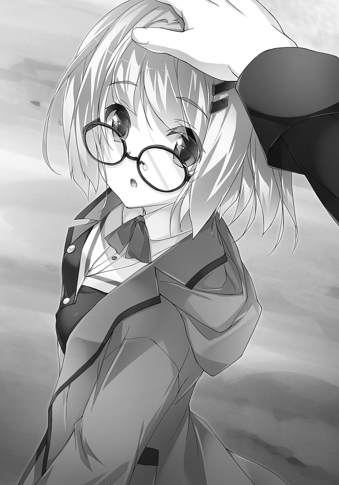

| 嫌われ家庭教師のチート魔術講座 魔術師のディプロマ | |
| 延野正行 | |
この本は縦書きでレイアウトされています。
また、ご覧になる機種により、表示の差が認められることがあります。

 ダッシュエックス文庫DIGITAL
ダッシュエックス文庫DIGITAL
嫌われ家庭教師のチート魔術講座
魔術師のディプロマ
延野正行
ＬＥＳＳＯＮ １
「お前も魔術師なら、仕事をしたらどうだ、カルマ？ ......ニャン」
年長者としての威厳と深み。
そのすべてを台無しにする可愛らしい単語が、ファミレスの一角に響く。
発したのは、巫女装束の少女。
真っ直ぐに伸びた黒髪。強い意志と決意を込めた黒瞳。
白袖から少し出た手は白く、朱色の帯にのった胸は大きな果実を思わせる。
一部西洋的なパーツはあれど、如何にも大和撫子然とした落ち着きと美しさを秘めていた。
対して、正面から聞こえてきたのは、落ちつきのない声だった。
「くっそ！ 日本牛百パーセントのダブルチーズハンバーグにすればよかった！」
目の前に食べ終えた皿があるというのに、青年――カルマはメニュー表を見ながら後悔を口にする。少女の話など、まるで耳に入っていない。
巫女の美しい眉がわずかに動く。
瞬間、チンと乾いた音が鳴った。
ファミレスのメニュー表が真っ二つに割れる。
割れ目から小汚い格好をした青年の姿が現れた。
鋼のように硬そうな髪の毛はしなびた白菜のように縮れ、肌もかさかさ。ピアノの黒鍵を思わせるような色のコートも、砂埃にまみれている。
見る人が見れば、特別有害生物調査部隊《ＭＩＵ》のものだとわかる最硬度魔術法衣。
その胸ポケットに刺繡された隊のマークは、ポケットごと切り取られていた。
せいぜい立派なのは、コートの襟付近に付けられた魔術師バッチ――通称《ディプロマ》と、白銀縁の鼻掛け眼鏡だけだった。
何食わぬ顔で、切れたメニュー表をスタンドに戻す。
その左手にだけ、魔法陣が描かれた手袋をはめていた。
「店の備品を切るなよ、理音......」
目の前の少女――九鬼理音を睨む。柔らかそうな太股に置かれた刀を指さした。
漆黒の鞘に躍動する鯉の金細工が施された刀。
理音の愛刀――調伏用護刀《音無》。
抜刀から斬撃、納刀までを無音で行う事が出来ることから、名付けられた。
唯一、鯉口を切る際に音が鳴るため、正式名称を《音無鯉切丸》と呼ぶ。
むろん、達人あってのなせる業だ。
「無視するからだ。そもそも金も、住むところもない哀れな元部下に、飯をおごってやったんだ。もう少し元上司に敬愛の姿勢を見せろ......ニャン」
「ファミレスで刀を振り回すＫＹな元上司を、どうやって敬うのか教えてくれ」
「ふん。誰も刀を振り回した事を知らなければ問題ない......ニャン」
「どこのガキ大将理論だよ。お前......仮にも魔術特許庁の課長だろ？」
「なんだ？ 嫉妬か？ お前より金を持っているぞ......ニャン」
「うるせぇ......。だいたいその語尾の〝ニャン〟と、頭の上に装着したそれはなんだ？」
「今さらか......」
白装束に緋袴。如何にも神職に通じる巫女然とした格好と振る舞い。
しかし目線を上に向けると、切りそろえた前髪と腰まで伸びた鮮やかな黒髪の頭に、何故か猫耳がついたカチューシャが装着されていた。
「お仕えする天鈿女命様の今日のご神託なのだ......ニャン」
「一日中、その格好でその語尾なのか？ ......大変だな。巫女さんって」
「もう一度言うぞ、カルマニャン！」
（今、カルマニャンって言ったぞ......！）
カルマは必死に笑いをこらえる。理音は顔を真っ赤にしながら咳を払った。
「仕事をしろ！」
光の速さでカルマは目をそらす。
その顎と頭を両手ではさみ、理音は無理矢理自分に向けさせた。
「こっちを見ろ、カルマ......ニャン......」
「痛い痛い！ こめかみチョー痛い！ ちょ！ お、おごってやるって聞いたから、借金の取り立てかと思ったら、仕事の話かよ！」
「忘れるとこだった。貸した三万、今すぐ返せ！ ニャン！」
「あ、あれはそのうち倍にして返すから......ぎゃあ、首！ 首！」
「三ヶ月前にも聞いたぞ、その台詞！ だいたい部隊を辞めた時の退職金はどうした？」
「ああ、あれか......」
突如、カルマは静かになる。
理音もまた落ち着きを払って、シートに座り直した。
まばゆい太陽を見つめ、カルマは目を細める。
初夏の日差しだった......。
「溶けた......。一瞬だった............」
騒がしい店内の中で、二人が座る一角だけに強い冷房の風が吹き込んだ。
ぐいっとカルマの襟首が摑まれる。
眼前には、額に青筋と寒々しい冷笑を浮かべた理音の顔があった。
「あれほどやめておけと言ったのに、手を出したのか？ ......ニャアン？」
「だって絶対儲かるって言われたんだ！」
「馬鹿か、お前は!! 仮にも元《ＭＩＵ》の隊員ニャンだろ！ 元エリートが、退職金を為替取引に突っ込んだ挙げ句、溶かしたと聞いたら、《ＭＩＵ》を目指す魔術師の卵たちはどう思う？ ......ニャン」
「語尾に〝ニャン〟を付けて喋る元上司に言われたくない」
〝ぶちっ!!〟
「ほほう......そんな態度をとっていいのかニャア。私は優しいからなあ。路頭に迷っている弟の状況をお節介ついでにお前のお姉様に報告してしまうかもしれない......ニャア？」
「う......」
カルマの顔色が変わる。ジュースをストローで吸い込もうとして、何故かブクブクと吹き出し始める。手元が小刻みに震えていた。
理音はやれやれと首を振り、Ａ４サイズの封筒を差し出す。
訝りながら手を伸ばすと、カルマは中に入った書類を取り出した。
「履歴書？」
白紙ではない。中にはきっちりとプロフィールが書かれている。
写真も貼られていて、やや緊張した面持ちの少女が映っていた。
ツーサイドアップにした髪に、赤いリボン。少し釣り上がった大きな瞳は、写真からでも勝ち気な性格が伝わってくる。目は燃えるようなクリムゾンレッドだった。
今年で十六とあるが、胸の具合は年齢以上に発育している。
可愛いと言えば可愛いが、怒ると超怖そうな顔で目線を送っていた。
「俺はまだ嫁を取る気はないぞ」
「見合いじゃない！ 誰がお前みたいな文無しを紹介するか！ 名前を見ろ。......ニャン」
『天応地』という漢字三文字を見つけた瞬間、カルマの眼の色が変わった。
「天応地綺譚って......。まさかあの天応地家の人間か？」
「さすがのお前も、天応地家の名前を聞いて驚くんだな......ニャン」
「魔術境界圏《ノア》に住んでて、創設者の三財閥の一角を知らないわけないだろ」
「そうニャ。その天応地の人間......そして彼女が今の当主だ......ニャン」
「現当主ってこの娘が？」
「お前と二歳差ニャ。......天応地の今の状態ニャ？」
「大まかだけどな。俺もその頃は......まあ、色々あったし............」
天応地家はかつてノアで最強一族といわれるほど強い魔術家系だった。
しかし、二年前、当時の当主と前当主の勢力を二分する内紛が起こり、ノア全体を巻き込む大惨事となった。その際、一族のほとんどが死んだと聞いている。
ノアが発足後、最悪の出来事として今でも語り継がれるとともに、魔術師の間で天応地家は嫌われ者の代名詞だった。
「てっきり解体されていたのかと思ってた」
一通り目を通した履歴書をテーブルに投げる。
「解体というよりは、壊滅ニャ。本家の魔術師は当主と前当主を含め死亡。分家との縁も切れ、残っているのは、彼女を含めて十四歳と九歳になる娘三人だけだ......ニャン」
「盛者必衰か......。で――？」
「お前には、この綺譚の家庭教師をお願いしたい......ニャン」
「断る！」
妙な空気が生まれた。
ちょうどやってきた店員がテーブルの皿を回収していく。
ごゆっくり、と少々強ばったプロの笑顔を向けた後、そそくさと厨房の方へ戻っていった。
「お前には、この綺譚の家庭教師をお願いしたい」
「言い直してんじゃねぇよ！ そして〝ニャン〟を忘れてる！」
「元上司の頼みだぞ。ついでに言うと支払いは私だ！ いいのか、そんな態度とって！ ......ニャーン！」
顔面に無数の青筋を浮かべながら、理音は凄む。
カルマは深く腰掛けて、息を吐いた。
「理音......。いつも言ってるだろ」
――俺は魔術師とは仕事しねぇ......。
再び沈黙。たっぷり一分......。
店内に流れるポップな音楽を切り裂くように、理音は大口を開けた。
「ふざけるニャ！ 何が『俺は魔術師とは仕事しねぇ......』だニャ！ お前、ここをどこか知ってるかニャ？ 魔術師が世界で初めて自治を認められた魔術境界圏《ノア》ニャ！ 人口の約九割が、魔術師ニャ。右見ても左見ても魔術師ニャ。そんなところで『魔術師とは仕事しない』って、仕事したくないって言ってるようなものニャ！」
「ニャーニャーうるせぇよ。いいかげん、うざくなってきたわ！ ......俺はな。ノーリスクハイリターンな職業につきたいの！ 家庭教師なんてちまちました職業、真っ平ごめんだね！」
「阿呆か、貴様は！ そんな職業があるか！ 人生ニャめんニャ！」
「甘いな、理音」
カルマはおもむろにコートから、一冊の文庫本を取り出す。
「珍しいニャ。お前が本なんて......ニャン」
「これは日本ではライトノベルというものだ。そしてこれを見ろ」
本の後ろのページを開き、理音に見えるように向けた。
そこには『原稿募集中』や『賞金一〇〇万円』という言葉が並んでいる。
理音はそのページからカルマに視線を戻す。得意げな顔で鼻を鳴らしていた。
「出版社というのはなかなか太っ腹だな。原稿を送るだけで百万くれるんだぜ。お前も俺に仕事を持ってくるなら、これぐらいハイリタ――――」
「お前、もしかして原稿を書いて送るだけで、出版社の人間が頭を下げながら百万円を持ってくると思っているのか？ ......ニャン？」
「え？ 違うのか？」
理音は頭を抱えた後、バカな元部下でもわかるように説明する。
数分後、カルマの顔は為替取引に失敗した時のように溶けきっていた。
「この......この世の中には......か、神も仏もないのか......」
「神も仏も地道に生きろと諭してくれているのだ。天応地の家庭教師として――て、あれ？」
こんこんと教えを説くはずの理音だったが、そこに元部下の姿はない。
窓の外を見ると、楊枝をくわえたカルマの姿があった。
理音はぎりっと奥歯を嚙む。同時に《音無》の鯉口を切る音が鳴った。
瞬間、ファミレスの窓が破砕する。ガラスの破片と一緒に、理音は五メートルほどの高さから飛び降り、一階の駐車場に着地した。
「お前！ なにしてんだよ！」
「そんなことはどうでもいい！ それよりも話を聞け、カルマ！」
理音の真剣な声よりも、背後の騒然とした声や音にカルマの足が止まる。
「知っての通り、先の内紛で天応地家の名声は地に落ち、今や魔術師の嫌われ者だ。彼女たちに手を貸す魔術師などいない」
「――だろうな」
「それでも彼女たちは天応地家としてやり直そうとしている。そしてこれまで渋っていたノアがようやく重い腰を上げた。条件付きで、天応地家再興を許すとな」
「条件？」
「二ヶ月後の魔術師認定試験に、天応地綺譚がパスすること。つまり、彼女が魔術師になれば、天応地家は存続できるということだ」
「余裕だろ。天応地のお嬢さんだ。魔術師資格を持つぐらい――」
「彼女はこれまで魔術師の訓練を受けた事がない。お前ならこの意味がわかるだろ？」
カルマはハッと顔を上げる。
そしてすべての事情を呑み込み、一度目を伏せた。
「......で？ 理音は何故、そんな嫌われ者の肩を持つ？」
「私と天応地には少々縁がある。だが、それだけではない。同じように魔術師から嫌われている部下を知っているからだ」
カルマはやっと振り返り、眼鏡越しに理音を見つめた。
「《魔術殺し》――。嫌われ者の一族......。そして現最強の魔術家系の末裔......。お前なら、彼女たちの境遇を理解できるはずだろ。鍵宮カルマ......」
カルマは手袋をした方の手で、鼻にかけた眼鏡の小さなズレを戻した。
「他をあたれ......」
と踵を返す。夏の生ぬるい風が、黒いコートを翻した。
理音はムッとした顔で、その背中を睨む。
「どこ行く気だニャン？ 宿無しのくせに......」
カルマの足が、あっさり止まった。
理音はもう一度履歴書を含む書類を広げ、パラパラとめくった。
「もったいない。住み込みで、家にいるのは美人三姉妹。何より給料がいい。ノーリスクではないが、ローリスクハイリターン。こんな仕事なかなかニャいのに、あーもったいない」
わざとらしく声を張り上げ、パンと書類をはたく。
するとカルマは逆再生のように後ろ向きで戻ってくると、理音が持つ書類を奪った。
「ま、まあ......。ちょうど暇だったし。受けてやってもいいかなー」
「それが仕事を持ってきた元上司に対する態度か......ニャーン？」
「お願いします、理音様」
カルマは躊躇うことなく駐車場のアスファルトに、額をこすり付けた。
※ ※ ※
一九九九年――関東大消滅。
更地と化した関東圏に現れたのは、ドラゴン、オーガ、スライムｅｔｃ――テレビゲームではお馴染みの形而上の生物だった。
それらの生物に対して、通常兵器および、四度に渡る熱核攻撃が行われたが、特別有害生物（Special-Pests）――通称《セスト》の前では、効果はなかった。
その唯一対抗手段が、非科学技術――『魔術』だったのである。
しかし如何な物理法則を超えた技術でも、セストを殲滅するまではかなわなかった。
魔術師は《小箱》と呼ばれる結界内にセストを閉じ込め、魔術師による防衛戦を敷くことを決定する。
関東圏一帯を、魔術境界圏《ノア》と名付け、日本国および国連に自治を認めさせた。
セストを殲滅するため、魔術師は優秀な同胞を生み出し、日々魔術の研鑽を続けている。
しかし五〇年経った今でも、東京の惨状に変化はない。
終わりなき防衛戦。
魔術師が生み出した数々のシステムは、静かに老化を始めていた......。
※ ※ ※
「おお！ 今日もよく見えるなあ」
夏空にぼんやりと浮かんだ幾何学模様を見て、カルマは坂の中腹で声を上げた。
魔術師だけが見ることが出来る空の魔方陣。
名を実在証明の蔵《アカシックレコード》という。
古来より魔術師だけに観測され信仰されてきた陣は、いまだ謎に包まれていた。
わかっているのは、魔術師が使う魔術のすべては、空に浮かぶ魔方陣から授けられる蔵だということ......。解読できれば、そのすべてを証明できると言われている。
「しっかし、あちぃなあ......」
パタパタと手を扇ぐ。ふと目に手袋をした左手が映った。
（ま。ちょっとぐらいならいいだろう......）
白地に複雑な魔法陣が描かれた手袋を脱ぎ、コートのポケットにしまう。
十分ほど歩き、現れたのは屋敷を囲む長大な壁だ。
腐ってもノアを発足させ、魔術界最強と賞賛された一族の中心地。
立派な土地と屋敷を持っていた。
しかし昔は綺麗であったろう白壁は無残にひび割れ、さらに目を覆いたくなるような無数の落書きに埋め尽くされていた。魔術によって破壊された跡もある。
おそらく嫌われ者に対して、身勝手な制裁が行われた跡だろう。
眉間に皺を寄せながら、カルマは壁伝いに歩き、やっと門に辿り着いた。
備えられていたインターフォンは断線していて、家を守るはずの結界も発動していない。
カルマとしては、今すぐにでも帰りたいが、一度引き受けた以上、理音に何を言われるかわからない。......姉が知るところになれば、命が危ない。
仕方なしに門を越え、所々めくれ上がった赤煉瓦の道を歩いていく。
「誰？」
唐突に声をかけられた。
警戒心と、殺気――。カルマは戦慄する。
「怪しいもんじゃねぇぞ。......この屋敷に呼ばれてきたんだ」
ゆっくりと振り向く。
サイドテールと赤いリボンをなびかせた少女が立っていた。
釣り上がった赤い瞳は、写真よりも眼差しが強い。薄いブラウスから覗く胸も大きかった。
天応地家現当主――天応地綺譚で間違いないと思った。
「あんたみたいな浮浪者を呼んだ覚えはないけど」
「浮浪者って......。そんな風に見えるか、俺？」
「服装はぼろぼろ。頭はぼさぼさだし、埃っぽい......。何より臭いわよ、あんた」
綺譚は無遠慮に顔をしかめる。
「そうか？ ......最後に風呂に入ってから四日しか経ってないんだが」
「四日って......。臭くて当たり前じゃない！」
「そりゃ風呂屋に失礼だろ。四日洗ってないだけで、臭いなんて言われたら」
「お風呂屋さんのせいにするんじゃないわよ！」
「じゃあ、誰のせいなんだ？」
「誤魔化しても無駄よ！ ルロイの手先でしょ、あんた？」
「ルロイ？」
「問答無用！」
相手が気を抜いたのを見計らい、綺譚が仕掛けた。
白銀武装――！
高らかな呪唱とともに現れたのは、白銀の鎧で武装した綺譚だった。
手には刀のような深い反りを持つ大太刀。柄の拵えは西洋風で、一風変わっている。
「像形魔術か！」
思わず声を上げる。が、悠長に感心している場合ではない。
綺譚の上段打ち下ろしが、脳天に襲いかかってきた。
カルマは即応し、すれすれでかわす。
「あぶねぇ......」
目を丸くする。初撃をかわされた綺譚も同じ反応だった。
「わたしの打ち下ろしをかわすなんて」
「そりゃかわすだろ。そんなに速い打ち込みじゃねぇし」
「言ったわね！」
サイドテールが盛り上がる。
綺譚の飛び込み面。先ほどよりも速い。
カルマはこれも避けてしまう。
綺譚は僅かな間だけ驚く。返す刀で大太刀を振り上げた。さらに袈裟斬り、横薙ぎとつなげるが、ことごとくカルマはかわしてしまう。
（剣速はまあまあか。素振りを毎日やってんな。でも、身体の使い方がバラバラだ）
綺譚の剣技を見ながら、冷静に評価する。
（下半身がついていってないよな。運足がそろそろ......）
カルマの予測と同時に、綺譚の左足が自身の右踵を蹴った。
「うわわ......！」
足がもつれた綺譚は、体勢を崩す。
倒れると思った瞬間、少女の顔はカルマの胸に収まっていた。
「大丈夫か？」
カルマは色素の薄い黒髪を見ながら問いかける。
対して胸の中の少女の顔は、灼けた鉄のように赤くなった。
同時に、強い男の汗の臭いが鼻腔をつく。
「臭い！」
たった今、自分を助けた恩人を突き放す。三度、太刀を構えた。
像形魔術で出来た白銀の鎧が太陽の光を反射し、輝く。
像形魔術とは魔術と微量の無機物材料を使って、物体を形作る魔術だ。
精緻なイメージ力を必要とし、高難度魔術の一つに数えられる。
（剣の腕はともかく、イメージ力とそれを維持する魔力は大したものだ）
思わず笑みを浮かべる。
「ちょっと！ なに笑ってるのよ？」
「いや、大したもんだなって......」
「な、何が......」
「それだよ。お前の――――」
カルマは指さす。だが、指した方向が悪かった。
「む、胸！ あ、あああんた、何考えてんのよ！」
「ちげぇよ！ 勘違いするな」
その時、遠くから声が聞こえた。
「あ、お姉ちゃん！ ストップ！ ストップ！」
見ると、綺譚よりも一回り小さな女の子が、こっちに向かって走ってくる。
カルマの意識が女の子に向く。
女剣士は見逃さなかった。
「すきあり！」
気合いのこもった上段打ち下ろし。
カルマの初動が遅れた。
だが――すぐ立て直す。
腰を落とす。一瞬、斬撃を遅らせた。半身になり刀を回避。
流水のような無駄のない動きで、綺譚の懐に入る。
あらかじめ予定されていたかのように、綺譚に向かって掌底を――。
（やっべ！ 手袋してないんだった！）
気付いた時には遅い。素肌をさらした左手は、少女の白銀の鎧に吸い込まれる。
ごおぉおおおおんん！
鐘を鳴らしたような音が響き渡る。
鎧は完全にカルマの攻撃を防いでいた。
奇襲が失敗に終わった綺譚は、一度引く。そしてはっと笑った。
「無駄よ。わたしの白銀武装は素手なんかで壊れは――――」
綺譚の声が固まる。カルマは顎をだらしなく開けて、見つめていた。
鎧が、突然光り始めた。
ブルーの光が広い庭を覆う。
「星体光！」
魔術の発動時や消滅する際に発する現象が、今まさに起こっていた。
光は次第に照度を強め、周囲を青白く包む。
閉じた瞼を恐る恐る開いた。
眼前に広がった光景を見て、カルマは思わず息を呑んだ。
下着姿の少女が立っていた......。
可愛いピンク色のレースのブラジャー。その奥には、グラビアアイドルもかくやというほどの豊満な胸が収まっている。上とお揃いのショーツはじっとりと汗で濡れ、大きなヒップが薄く透けていた。
肌は真珠のように白く、足はすらりと扇情的なラインを描いている。
鎧ごしでは想像できないほどの絶妙なプロポーション。
普段、そうそう慌てる事のないカルマも、時が止まったかのように静止する。
きゃあああああああああああああああああああああああああああああああああ!!
絶叫に近い悲鳴が、天応地家の屋敷にこだました。
羞恥に顔を赤らめ、クリムゾンレッドの瞳がカルマを突き刺す。
「あ、あんた、何をしたの？」
「いや......。ちょ、落ち着けって。とりあえずこれ着ろ。な？」
綺譚に臭いといわれたコートを差し出す。
その厚意を少女は大太刀で払った。
問答無用といわんばかりに、突撃してくる。
が、また自分で足を引っかけ、倒れ込んだ。
「キャッ！」「うおおお！」
綺譚がカルマを押し倒すような形で、転倒した。
地面に打ち付けた頭をさすり、カルマは身を起こす。
すると、何故か片方の手にものすごく柔らかい感触を感じた。
「お、おお......」
「う、ううん......。ちょ......やぁ............」
少女のなまめかしい声が返ってくる。
カルマの手は少女のブラジャーを押しのけ、直接胸へと伸びていた。
目の前に、視線を向ける。
瞳も顔も真っ赤にした綺譚が、恐ろしいほどの形相で睨んでいた。
「な、なななにしてんのよ、あんた............」
噴火寸前の火山みたいに、少女の身体は怒りに震える。
「......うん、その。柔らかいなって――――」
「――――!!」
パァン!!
放たれた平手は、先ほど振るった剣よりも速く、カルマの頰を直撃した。
ＬＥＳＳＯＮ ２
「ほっっっっっっとにごめんなさ～い！」
手を合わせたのは、先ほど仲裁に駆けつけた少女だった。
肩口で切りそろえた金髪に、厚縁の大きな眼鏡。やや発展途上の体軀ゆえ、改まってみると男の子のようにも見える。魔術の実験時に纏うくすんだ黄色のローブからは、やや硫黄の匂い。おそらく薬剤の調合か何かを行っていたのだろう。
「改めまして、わたし――天応地家の次女をしてます天応地雨音と申します。気軽に雨音って呼んでください」
「あ、ああ......。よろしく雨音ちゃん。俺は――――」
「鍵宮カルマさんですよね。カルマさんって呼んでいいですか？」
「あ、ああ......。構わないけど――」
随分と人懐っこい性格らしい。
それに如何にも脳筋そうな姉とは違い、雨音は利発そうな顔をしている。
その天応地綺譚はというと、汗を流すため席を外していた。
カルマは、軽く顔を撫でる。
頰にはきっちりと人の手形が残っていた。
「痛いですか？ 本当にすいません」
「いや、君が謝ることじゃねぇから。ところでなんで俺の隣に座っているの？」
ソファは二人掛けだが、ガラステーブルを挟んだ対面にも一人掛けのソファが並んでいる。
カップルとか夫婦ならわかるが、初対面の人間の横に座るのは珍しい。
しかも距離が近い。
「ダメですか？」
「ダメってわけじゃないけど」
「わたし、鍵宮家の人って初めてで、凄く興味があるんです」
「きょ、興味？」
カルマは顔を赤くする。
「《魔術殺し》の鍵宮家......。響きがすっごく格好いいじゃないですか？ 魔術を破壊する能力なんて最高ですよ。中二っぽくて」
「あ、ああ......。そっちか」
（ところで、チュウニってなんだ？）
「さっきお姉ちゃんの魔術を壊したのも、その力なんですよね？」
「まあな。俺の場合、力が中途半端で左手の一部にしかないけど。普段は手袋をしているんだが、あの時はたまたま――」
「なんか片方にしか手袋していないとかいうのも、中二心をくすぐるんですよね」
カルマの左手を取りながら、物欲しそうに見つめた。
スキンシップに躊躇がない雨音の反応に、カルマの方が照れてしまう。
「ああ――!! あんた、なに妹に近づいているのよ」
突然、後ろから叫んだのは、綺譚だった。
その髪はまだ乾き切っておらず、若干シャンプーの匂いが漂ってくる。
バスタオルを投げ放ち、肩をいからせ近づいてきた。
妹の首根っこを摑むと、対面のソファに座らせる。
そして自身も隣に座った。
姉の行動に、雨音は苦笑いを浮かべながら、目で謝罪する。
「雨音、こいつは変態なの。近づいちゃダメよ」
「だから何度も謝ってるだろ？ 不可抗力だったんだよ」
「何よ！ わたしが悪いわけ？」
私服に着替えた綺譚が目を三角にして睨む。
「そもそもあんたが妙な魔術を使って、わたしの、わた――」
一度鎮まったはずの怒りがさらに再燃し、綺譚は肩をふるわせる。
その猛獣と化した姉をいさめるように、雨音はパンパンと手を打った。
「それまでよ、お姉ちゃん。いいじゃない。揉まれるほど胸があるってことでしょ」
雨音はおもむろに自分の胸に手を置いた。ペタンコだった。
「なに言ってんのよ、雨音！ セクハラよ！ セクハラ！」
「お姉ちゃんは黙ってて。折角、落ち目の魔術家系の家庭教師を引き受けてくれたんだよ。逆に当主として感謝しないと......。ますます天応地家の評判が悪くなっちゃうよ」
片や子供のように拗ねた姉。片や当主としての礼儀を訴える妹。
歳はさほどかわらないのに、これではどちらが年上で当主なのかわからない。
「......だいたい、わたしは家庭教師なんて頼んでないから」
「お、お姉ちゃん」
「わたしはわたし自身の力で、魔術師になるの！ それが天応地家当主としての矜持よ。どこの馬の骨ともわからない家の――」
「もしかして理音さんからもらったプロフィール見てないの？ この人はね。鍵宮カルマさん。あの《魔術殺し》の鍵宮家の人だよ」
「鍵宮............。《魔術殺し》............って、ちょ、ちょっと......」
綺譚の顔がみるみる真っ青になっていく。
「マジなの？」
「まあな」
「だ、だめよ！ そんなの！」
綺譚は飛び上がり、ソファの後ろに隠れた。
「か、鍵宮ってその――危ないんでしょ。昔、魔術協会があった頃に魔術師の暗殺を行ってたとか。今でも秘密裏にノアの裏の仕事を請け負ってるとか。触られるだけで魔術が使えなくなるとか」
「お姉ちゃん！ カルマさんの前で失礼だよ」
う......、と小さく喉を鳴らし、綺譚はソファに座り直す。
すいません、と雨音はまた頭を下げた。
「気にしてねぇよ。いつものことだ」
「鍵宮家って......すっ――ごく！ 魔術耐性が高くて、触れるだけで魔術を壊すことが出来ちゃうんですよね。だから魔術師から恐れられてて、孤高の家系って言われてるんです」
「まあ、巷でいわれている噂はほとんど噓だがな」
鍵宮家は対魔術に特化し、《魔術殺し》――文字通り魔術を殺す反魔術を扱う家系だ。
魔術を殺せる魔術師。
という異名を持ち、古来から魔術師にとって忌むべき存在と言われ続けてきた。
そうした畏怖が一人歩きし、触られるだけで魔術が使えなくなるといった噂まで立つ始末。
故に、魔術師からはすこぶる評判が悪い。
そうと知りながら、目を輝かせる雨音の存在の方が珍しかった。
「お姉ちゃん知ってる？ 鍵宮家ってＳクラスの魔術家系で、しかも、現在のナンバーワンと言われる魔術師も、鍵宮の人なんだよ！ ですよね。カルマさん？」
「ま、まあな」
それが自分の姉だとは告白しづらかった。
「魔術師の中で一番強い......」
黙って聞いていた綺譚は、何故かその単語にだけは反応し、ぼんやりと呟いた。
「そんな家系の人がお姉ちゃんの家庭教師なんだよ！」
「............。――や、やっぱりダメよ！」
「どうして？ 魔術師の認定試験まで二ヶ月もないんだよ。お姉ちゃん、脳筋だからペーパーテストで良い点なんて望めないってわかってるはずでしょ」
「の、脳筋って！ 雨音、あんた――」
「実技試験で点数を稼がないと、魔術師なんてなれないよ。そしたら天応地家は解体されて、わたしたち三人とも路頭に迷うんだよ！」
「わ、わかってるわよ。でもね。Ｓクラスの魔術師っていうけどね。わたしたち天応地家だって昔はＳクラス。ノア最強と言われた天応地流鉄斬――」
「それは昔の話！ ここで断ったら、後見人の九鬼さんに申し訳がたたないよ」
「う......」
畳みかけるような雨音の説得に、綺譚の口が、とうとうギブアップを告げた。
「わ、わかったわ、雨音。わたしの負けよ」
「じゃあ、カルマさんの家庭教師を受けてくれるんだね」
「ただし！」
鋭い視線が、カルマの方に向けられた。
「仮契約ってことにしましょう。......少しでも変な態度をとったり、わたしはともかく、特に妹たちに手出しとかしたら馘だけじゃすまないからね」
特にというところを特に強調し、殺気を放つ。
「――で、その前にあんたにはやってもらうことがあるわ」
今から決闘でも申し込むかのように、綺譚はビッとカルマを指さした。
「ふう......生き返るわぁ......」
白く立ち上る湯気を見つめながら、カルマは独りごつ。
タオルを頭にのせ、縁に身体と腕を預け、足を伸ばした。
カルマは今、風呂に入っていた。それが綺譚の最初の要望だったのである。
「さすがは天応地だな」
周囲に目を向けた。天然の岩を使った岩風呂。温泉宿の大浴場とまではいわないが、家族四人ぐらいなら足を伸ばせるほど広い。
さすがに温泉ではないが、個人が持つには過ぎた施設だ。
「しっかし、なんでこうなったんだあ。ちまちまと働くなんてやっぱ性に合わねぇんだよ。一発ドカーンと当てるのが俺の人生プランだったはずだろ。だいたい魔術師と仕事しないってのが、ポリシー............」
カルマの独白を消滅させたのは、窓ガラスに貼られたガムテープだった。
おそらく投石によって割れたのだろう。菱形の穴をテープでがちがちに塞がれている。
――今や魔術師の嫌われ者......。
......同じように魔術師から嫌われている――
思い浮かんだのは、昨日の理音の言葉。
屋敷の塀に刻まれた数々の罵詈雑言だった。
カルマは窓ガラスから目を離し、湯船の中で思いっきり伸びをする。
「ま――。給料はそこそこだし。寝床も悪くねぇし、少しぐらい付き合うか......」
がらり......。
不意に、風呂場のガラス戸が横に引かれた。
雨音か綺譚が着替えとバスタオルでも持ってきてくれたのだろうか。
カルマは安易な推理のもと、振り返った。
立っていたのは、幼女だった。
裸の......。
「「あ......」」
カルマと幼女の声がかさなる。
ワン......。ツー......。スリー......。沈黙のスリーカウント――。
「あの――」
カルマが声を出した瞬間、幼女は何事もなかったかのように戸を閉めた。
戸の奥から聞こえてきたのは、絶望の叫びだった。
「お姉ちゃぁあん！ お風呂場にヘンタイさんがいるぅ......！」
カルマは飛沫を上げて湯船を飛び出した。
風呂場の戸を渾身の力で開け放つ。
幼女は裸のまま、追跡してきたヘンタイさんを見上げた。
肝が据わっているのか。それとも事態を把握していないのか。
トロンとした眼の幼女は、ぼんやりとした視線をカルマに向けていた。
少し毛先がウェーブがかった銀色の髪に、超然と輝く黄金色の瞳。
小さな手は、熊を模したキャラクターのぬいぐるみを握っていた。
プロフィールでは九歳。当然、胸は真っ平ら。大人の兆候も汚れもあろうはずがない。
逆にそれがカルマの背徳感を煽る結果となった。
間違いない。天応地三姉妹の最後の一人――三女の天応地木葉だ。
「き――――」
木葉が何かを喋ろうとした瞬間、カルマは思わず小さな口を塞いでしまった。
（ちょ、俺！ なにやってんの？）
いや......こうなってはもう遅い。ここは丁寧に――といっても口を塞いだ時点で十分暴力的だが――説明するしかない。
カルマは後ろに回り込む。極力小さな力で木葉を羽交い締めにした。
幸い木葉が暴れることはなかった。さすがは天応地家の娘。妙に落ち着いている。
逆にカルマの方が冷静でいられない。動悸が激しく高鳴り、鼻息が荒くなる。
「き、君......。木葉ちゃんだよね」
マジでヘンタイだな、俺――とカルマは心の中で自虐する。
「ぼ、ぼぼボクの名前は鍵宮カルマっていうんだ。挨拶が遅れたけど、今日からお姉ちゃんの家庭教師をするために、ここに住むことになってね。だから、別にヘンタイでもなんでもないんだよ。それは理解できるかな」
しばしの黙考の後、木葉は首を縦に振った。
「木葉ちゃんは頭がいいねぇ。......でね、一つ確認したいんだけど、先にお風呂に入っていたのはお兄ちゃんだよね。木葉ちゃんはカルマお兄ちゃんがいるってわからずに、間違って入ってきたんだよね？」
同じく首肯。
「それだとお兄ちゃんも怒られるかもだけど、木葉ちゃんもお姉ちゃんたちに怒られるかもしれないよ。......だから、ここはお互い見なかったことにしないかな」
努めて優しく説得。
一連の質問の中で、木葉は一番長く考えていたが、最後には頷いた。
ほっ、と息を吐き、カルマは木葉から手を離した。
ぬいぐるみを引きずり、距離を取る。再びぼんやりとカルマを見つめた。
「じゃあ、お兄ちゃん、このまま出るから。木葉ちゃんはお風呂に入っておいで」
銀髪が縦に揺れる。木葉は浴場へと消えていった。
見送ったカルマは、盛大に息をついて脱力する。
「久々にヤバいって思ったぜ」
額に浮かんだ脂汗をぬぐった。
「うま！」
夕食にお呼ばれしたカルマは、開口一番叫んだ。
真っ白なテーブルクロスにハンバーグ、焼き人参、山盛り一杯の千切りキャベツとオニオンスープ。洋食に傾向がかたよっているが、家庭的なものが並んでいる。
「もっと豪華なものをご用意出来れば良かったのですが、なにぶん家計が火の車でして」
エプロンをした雨音が、ご飯をジャーからよそいながら、謝罪する。
全盛期の天応地家ならば、ハウスキーパーの十人、二十人はいただろうが、今は雨音が毎日ご飯を作っているのだという。
しかしカルマにとっては、そんな事は関係ない。
テーブルマナーも忘れて、料理にがっつく。
カチャカチャと皿が鳴る音が、ダイニングに響き渡った。
「ちょっと......！ 静かに食べなさいよ」
長テーブルの短い辺の部分――いわゆるお誕生日席に座った綺譚が注意する。無論、彼女の誕生を祝っているからというわけではない。そこが当主の席なのだろう。
どうやらまだ怒っているらしい。仏頂面で食べ物を口に運んでいた。
「しょうがないだろ！ 昨日、ファミレスで理音に奢ってもらってから、なんも食べてないんだから。そもそも家飯なんて、一ヶ月ぶりなんだぞ」
「一ヶ月!?」
げぇと客に向かって綺譚は顔をしかめる。
雨音はカルマの食い気に啞然としながらも、にこやかに言った。
「お口にあって良かったです」
「まともに食事をしてこなかったんだもの。胃も舌も美味いか不味いかなんて忘れてるわよ」
「そんなことはないぞ。このハンバーグの隠し味は、ケチャップと見た」
「えっと、お味噌です。隠し味......。あ、でも......嬉しいです。得意料理なんで」
「へ、へぇ、凝ってるなあ。......雨音ちゃんは良いお嫁さんになるね」
「いやあ、そんなことないですよ」
ガチャン、とひときわ大きな皿の音が、ダイニングに響く。
綺譚がフォークを逆手に握り、力強くハンバーグに突き刺していた。
クリムゾンアイは、二人を視界に捉え力強い眼光を放っている。
「雨音、もう少し静かに食べなさい。お行儀が悪いでしょ。あとこの男とあまり喋らないで」
「なんだよ。お前の方こそ音がデカいんじゃないか？」
「お姉ちゃん、カルマさんと仲良くしないと、今日のデザートなしだよ」
「はは......。妹に怒られてやんの」
「うるさい！ 黙りなさい。天応地家の当主がデザートごときで――」
「今日はお姉ちゃんが食べたいって言ってた。『もどり星』のチーズケーキだよ」
「うそ！ あのいつも三時間待ちが当たり前で、一日限定百食。幻のスイーツって言われてる『もどり星』のチーズケーキなの!? 一度食べてみたかったのよ。フレッシュチーズの程よい酸味と生クリームの甘さが見事に――」
熱弁は突如、打ち切られる。
ジト目の妹と、呆気にとられた家庭教師が綺譚を見ていた。
「そ、それより。木葉はどうしたの？」
軽く咳払いをし、綺譚は無理矢理話題を転換した。
「さっき起きて、お風呂に入ってるはず............あれ？ どうかしました、カルマさん？」
先ほどとは打って変わって、カルマの表情が冴えないことに雨音は気付く。
「イヤ、ナンデモナイヨ......」
精一杯の愛想笑いを浮かべ、カルマはスプーンで掬ったスープを波立たせていた。
するとダイニングの扉が開く。
「噂をすれば――」
雨音が席を立つ。
扉から現れたのは、間違いなく天応地木葉だった。
ぽやんとした瞳は相変わらず。カルマが会った時とは違って、ちゃんと服を着ている。涼しそうなワンピースタイプの部屋着には、襟元に細かいフリルがついていた。
「うん。ちゃんと髪を乾かしてきたんだね。えらいよ、木葉」
雨音は膝をつき、妹の頭を撫でる。
対し、幼女はじっとカルマの方を見つめていた。
（打ち合わせどおりに頼むぞ、木葉ちゃん！）
念を送り、固唾を呑んでカルマは状況を見守る。
「この人はね。鍵宮カルマさんって言って、綺譚お姉ちゃんの家庭教師で、今日から一緒に住むことになったんだよ」
雨音の説明に、木葉は無反応......かと思われたが、突然カルマの方に近寄ってくる。
洗濯中の自分の服の代わりに、雨音から貸し与えられた白いシャツを、ピッと引っ張ると、こう言った。
「木葉、カルマお兄ちゃんのおヨメさんになる」
.................................................................................。
沈黙は永遠に続くかと思われたが、木葉以外の全員が同時に声を揃えた。
「「「はあ？」」」
「ちょ、ちょっと！ 木葉、なに言ってんの？ お嫁さん？ なんで？」
最初に正気を取り戻したのは、綺譚だった。
「木葉の一目惚れ......」
「はいぃぃ？？？？」
綺譚の的確な質問は、木葉の応答によってさらに混沌へと上書きされる。
「木葉......。カルマさんを知ってるの？」
妹は首肯する。
「いつ？」
「さっき」
「どこで？」
「お風呂場......」
「お風呂場って............。木葉はその時ってどんな格好だったの？」
「裸だった」
「うわああああああああああああああああああぁぁぁぁぁぁぁぁぁぁぁぁぁぁ！」
頭を抱えて、絶叫したのはカルマだ。
「ちょ！ 木葉ちゃん、打ち合わせと違う」
打ち合わせ？ と綺譚の額に青筋が浮かぶ。カルマは無視した。
「あの時はこのことをお互い黙ってようって」
「うん。言った。けど噓はよくない。......だからカルマお兄ちゃんとケッコンするの」
「どうしてそうなる！」
「お兄ちゃんに裸を触られた」
「さわ――！」と綺譚。
「口を押さえられた」
「口を！」と雨音。
「お兄ちゃんのゾウさんも見た！」
「「ゾウさん!?」」
二人の生娘が揃って悲鳴に近い叫びをあげる。
「驚いてはみたんだけど、ゾウさんって何？」
え？ とカルマと雨音は同時に綺譚を見る。
「お姉ちゃん！ ゾウさんっていうのは？」
「――――うん？ いんけい？」
「......いや、だからね。男の子の――」
瞬間湯沸かし器みたいに綺譚の顔が真っ赤に沸騰した。
続けざま、綺譚は像形魔術で一振りの刀を構成する。
その切っ先を迷うことなく、カルマに向けた。
「あんた、のっけからうちの妹に何してくれてんのよ！」
「お、落ち着け！ 綺譚！」
「なにさらっと人の名前を呼んでるのよ！ そこになおりなさい!!」
口からマグマでも噴き出さんばかりに、綺譚の言葉に怒気が溢れていた。
動く火山と化した当主に対し、敢然と立ち向かったのは木葉だった。
「木葉、危ないわよ！ どきなさい！」
末の妹は銀髪を振り乱し、否定した。
「カルマお兄ちゃんは木葉の裸を触った。木葉はお兄ちゃんのゾウさんを見た。これってキセイジジツって言うんでしょ？ でも赤の他人とこんなことをするのはよくない。犯罪......。けれどカルマお兄ちゃんは、お姉ちゃんのかてーきょうしだから木葉はなきねいりするの。だから木葉、お兄ちゃんのこんやく者になる。それなら問題ない」
「「「問題ありまくりだ！」」」
三者が同時にツッコんだ。
「カルマさん、そういう人だったんですね。......ちょっと見損ないました。まさかロリ――」
憧憬すら感じられていた雨音の目に、猜疑の光が宿る。
「違う！ 俺が風呂に入ってたら、この子が間違って」
「あ！ わたし、カルマさんが入ってるのに、お風呂に入るよう木葉に言っちゃったんだ」
「この際どうでもいいわ、そんなこと。......で？ 木葉の裸を触ったとか。口を塞いだとか。......ぞ、ぞぞ、ゾウさん、みみ、見たってどういうこと？」
「いやー、それは............」
憤怒のオーラをまとう綺譚から目をそらし、カルマは良い言い訳を考える。
「小さな子供の口を押さえて、口封じしようとしたわけね」
「うまいこと言うな、お前」
カルマは笑って誤魔化す。が、部屋の気温は下がる一方だった。
綺譚はゆっくりと刀を構える。
「なで切りがいいかしら？ それともなます？」
「切らないという選択肢はないのか!?」
「ダメ！ 綺譚お姉ちゃん」
木葉はカルマの腕に手を絡ませ、抱きつくように未成熟の胸をピタとくっつけた。
「カルマお兄ちゃんは、木葉の未来のダンナ様」
「こいつはヘンタイよ！ 変質者なの！ まして結婚なんて。当主として許さないわ」
「ヤダ！ 木葉はカルマお兄ちゃんとケッコンするの！」
「ダメだって言ってるでしょ！ どきなさい、木葉！ 刺身のつまにしてやるわ！」
「わわわ......。お姉ちゃんの目が完全に据わってる。落ち着いて、お姉ちゃん！」
「雨音！ あんたもこのヘンタイの肩を持つの？」
「肩って......。どっちかというと木葉みたいに腕かな......」
「カルマ......。けっこんしきはいつにする？」
いつの間にか「カルマ」と呼び捨てになった木葉の甘い声と、今自分の目の前に繰り広げられている三姉妹の攻防を見ながら、元《ＭＩＵ》隊員は思った。
（この三姉妹と付き合うのは、セストと戦うより厳しそうだ......）
家庭教師の心の独白など露知らず、三姉妹の喧嘩はこの後一時間以上続いた。
翌日――。
夏の太陽が燦々と降り注ぎ、屋敷の裏の運動場をじりじりと焼いている。
立っているだけで汗が噴き出てくる中、カルマのレッスンが始まった。
「ふああああああああああああ......。あっちーなー、もう――」
遠慮なく大口を開け、カルマは手うちわで顔を扇ぐ。
「あんた、お昼まで寝たのにまだ寝たりないの？」
綺譚は動きやすそうなスポーツウェアを着ていた。
肌に張り付くような素材で出来たウェアは、大きな胸のラインを一層強調している。
無意識に前で組んだ腕に胸をのせた姿勢は、破壊的な弾力性を強く想起させた。
「仕方ないだろ。ベッドで寝るなんて、二年ぶりなんだからよ」
とまた欠伸をする。
綺譚がより眉間に皺を寄せる横で、雨音は苦笑を浮かべていた。
「カルマさん。......一応、昨日の手はずでいいですか？」
「構わねぇよ。いいのか？ 座学は雨音に任せて？」
話し合った結果、午前は雨音が教師になって、魔術師認定試験の筆記試験対策を。午後は、カルマが魔術戦技試験の対策を指導することになった。
雨音は姉妹の中でも群を抜いて魔術知識に長けていた。
基礎研究分野ならそこらの魔術師よりも詳しい。しかも独学で習得したという。
天応地のような格式のある魔術家系では、基本知識や魔術全般を、親が教える。
しかし雨音の母は、彼女に魔術を教えなかった。
理由は単純だ。雨音が女だからだ。
女性には有能な魔術師を産んでもらうという大役がある。
もし魔傷や呪詛を受ければ、母体や、胎児になんらかの影響をもたらすおそれがある。
魔術家系で女が産まれた場合、平凡な魔力しか持たない者は、極力魔術から遠ざけられる生活を送るのが、ノアで習慣化されつつあった。
綺譚がカルマのような外部の人間に、家庭教師を請わなければならない理由は、そうした社会的な風土が背景にある。
「お姉ちゃん、ホントに頭が悪いですから。無茶苦茶根気がいるんです。そこまでカルマさんに任せられません」
「雨音！ そういうこと言わないの！」
「だって、本当のことでしょ。......じゃあ、お姉ちゃん。魔術象形における第十六番目の形の名前と意味を答えてみて」
「え？ えっと、それは？ 一番目が、〝〟だから、十六番目は......」
子供が足し算の計算でもするように、綺譚は指を折りながら考え始める。
そんな姉の姿を見たくなかったというように、雨音は頭を振った。
「......それ、今日やったとこだよね」
「え？ そうだっけ？」
「............。前途多難のようだな」
ため息を吐く雨音に、カルマは同情した。
「じゃあ、準備する間に、これに名前でも書いてろ」
カルマが綺譚に渡したのは、ノートとサインペンだった。
そして今度はどこからか持ってきたラインカーで、白線を引き始める。
呑気に鼻唄を歌いながら、カルマは十分ほどで二本の白線を引き、二つの直走路と曲走路がある一周二百メートルくらいのトラックを描き出した。
白線と白線の間隔は通常のトラックよりも狭い。肩幅よりも少し広いぐらいだ。
これでよし、と手に付いた石灰をカルマは払い落とす。
「一度しか言わないから、よく聞けよ。綺譚には、トラックを百周してもらう」
「ひゃ、ひゃく......？」
雨音は驚くが、綺譚は自信ありげに鼻を鳴らした。
「わたしの体力を測ろうってわけ？ ......これでもわたし、毎朝二十キロ以上は走ってるのよ。体力には自信があるんだから」
「話は最後まで聞けよ。ただし、条件がある」
「条件？」
「そうだ。百周はどれだけかかっても構わない。歩いても走ってもいい。ただし休むのはダメだ。後でトラックの各所に水を置いておいてやるから、こまめに水分は補給しろ」
「余裕ね。走りきってみせるわ」
「だから最後まで聞けって。二つ目に、トラックの白線を踏んではいけない」
「白線を踏まない？」
「三つ目......。何故、俺がこんなことをさせるのか、ということを考えろ。それをノートに自分なりの答えを書いて、毎日提出すること」
「ま、毎日！」
あからさまに嫌そうな顔で、綺譚は白紙のノートをパラパラとめくる。
「白線を踏まないことと、ノートに正確なトレーニングの目的を記述できれば、この課題はクリアだ」
「待ちなさいよ！ クリアできなかったら、毎日こんなことやらないといけないの？ 試験まで日がないのよ。魔術戦の対策を......」
「それも考えるうちの一つだ。俺が何故こんなことをさせるのか、な。んじゃ。俺はリビングで涼んどくわ。ここ暑いし......」
ひらひらと手を振り、屋敷の方へ戻ろうとする。
「ちょっと！ あんたは付き添ったりしないの？ 教師でしょ」
「なんだよ、お前......。ブーブー文句を言う割には、俺についててほしいのか？」
「そ、そんなわけないでしょ!!」
「なら、いいじゃねぇか。......時々、見に来てやっから。あ、百周終わって、ノートを書いたら、俺のとこに持って来いよ」
「わかってるわよ！」
綺譚はノートをトラックに叩きつける。
カルマは口元に笑みを浮かべ、本当に綺譚を残して去って行った。
夕方――。
ようやく百周を終えた綺譚は、膝に手をつき、顎をあげて激しく息をした。
玉のような汗が鼻筋を通り、トラックに落ちる。水滴は地面で弾けると、黒っぽい円を描き、やがて蒸発して消えた。
綺譚の視界の隅に、カルマが描いた白線が映っていた。
そこにはきっちりと足跡が残っている。
誰のものでもない。自分の。
それも一つではない。トラックのあちこちに残されていた。
（どうして............？）
愕然とした表情を浮かべ、綺譚は足跡を見つめる。
「おーおー、盛大に踏んづけてくれてるなぁ」
黄昏の太陽を背に現れたのは、カルマだった。
綺譚は炎色の瞳に薪をくべ、家庭教師を睨み付ける。これ以上、ぶざまな姿は見せられまいと、震えが止まらない膝に叱咤し、立ち上がった。
「あんた！ 何かやったでしょ！」
「何かって？」
「白線に魔術を込めて、わたしを真っ直ぐ走らせないようにしたに違いないわ」
「それが今日のお前の回答か？」
苦笑したカルマの反応が、答えを物語っていた。
そうとしか思えなかった。
曲走路の部分で体勢を崩したり、体力が尽き、身体を支える筋力が衰えてきて、踏んづけてしまったという理由ならわかる。
だが直走路のラインにも多くの足跡があり、四周目でもう踏んでしまった。
「とりあえず、お前の回答をノートに書いて、俺に提出しろ。今のじゃ〇点だがな」
「間違っているのに書くの？」
「別に他の回答を書いてもいいぜ。ただし今日中だ。日付を跨いでの提出は禁ずる。お前が睡眠不足で、午前の雨音の授業で居眠りしたら、俺が怒られちまうからな」
「何がやりたいのよ、あんた？」
「それを考えるのが、今のお前に課せられた課題だろ？」
「あんたの心を読めとでもいうの？」
「そんなこと出来ないだろ？ でも......答えはもうあるんだぜ」
「え？」
「じゃあな。身体を冷やさないようにしろよ」
コートをなびかせ反転する。
綺譚はただ呆然と背中を見送ることしか出来なかった。
課題を始めて四日目。綺譚はまだクリアできないでいた。
進歩していないわけではない。
体勢を維持する筋力が足りないのだと考えた彼女は、百周の課題後に筋力トレーニングをしたり、自主的に十周多く走ってみたりもした。
おかげでラインを踏む数が少なくはなったが、目標にはほど遠かった。
「二〇点......」
提出されたノートを見ながら、カルマは投げ返した。
「な！ 昨日と同じじゃない！」
「昨日と同じことしか書いてないから、そう言ったんだよ」
「カルマ、はじめるよ」
可愛い声でカルマを誘ったのはパジャマ姿の木葉だった。
「おし！ はじめるか」
「でも！ 身体のバランスが重要だってのは間違ってないでしょ？」
「ふふ。木葉、今日こそ無茶苦茶にしてやるぜ」
「カルマ、それは木葉のセリフ......。木葉がむちゃくちゃにする番」
「そのために筋力トレーニングして。実際――」
「おーおー。木葉女王様は怖いな」
「今日も、でんげき地獄。カルマ、好きでしょ？」
「実際、ラインを踏む数が減ってきてるのよ！」
「いや......。もうありゃ勘弁だ」
「それじゃあ。今日は、シュコウを変えてみる」
「ちょっと話を聞いてるの？」
「綺譚、お前もやるか？」
「お姉ちゃんも混ざる。一緒にプレイを楽しむ」
「え？ いや、わたしは、その......。下手だし。自信ないし」
「なんだ？ 下手なのかよ。使えねー」
「カルマは木葉と一緒にするの」
「ちょっと下手とかそういうことじゃなくて......」
「げ！ 失敗した！」
「カルマ、意外とウブ......。そんなんじゃ、抜けない」
「ここからプッシュするんだよ！」
「ううー。当たった......」
「はは！ 俺のテクに酔いしれろ！」
「話をきけ、こらぁ!!」
手にコントローラーを握り、レースゲームに興じていたカルマを怒鳴りつける。綺譚の怒りがゲーム画面に通じたか。カルマの車体は天高く舞い上がった。
綺譚が課題をやっている間、カルマはベッドで昼寝をし、起きてはスナック菓子を食い、コーラを飲み、ゲームをして過ごしていた。
教え子が夏の暑い中を走っているというのに、家庭教師の態度は目に見えて怠惰だ。
「耳元で怒鳴るなよ」
小指をねじねじと耳に突っ込みながら、カルマは首を後ろにひねる。
綺譚のツーサイドアップの髪がうねうねと逆立っていた。
「あんたが無視するからでしょ！ せめてわたしの考え方が間違っているかいないかぐらい、教えてくれてもいいじゃない」
「ああー、そうだなー。間違ってないようで間違ってるってとこかな」
「どっちなのよ！」
「それも考えるのが課題だ」
「ああ！ もう！ いいわ！ 明日は絶対ラインを踏まないんだから！」
大股で綺譚は部屋を出て行った。
ドアの閉まる強い音を聞いてから、カルマと木葉はゲームを再開した。
「カルマのいじめっ子......」
「そうか。だいぶ優しいと思うぞ」
「うん。そう。カルマは優しい。だって、答えはもうカルマは言ってる。でも綺譚お姉ちゃんにはいじわる」
「木葉ちゃん、もしかして俺の考えを理解してたりする？」
木葉はゲーム画面から目を離し、ぼんやりとした瞳をカルマに向ける。
そして小さく首肯した。
「うん。だって、木葉はカルマのおヨメさんだから......」
次の日、カルマは部屋の前にいた。
ノックをする。「あまね」と書かれたネームプレートが小さく揺れた。
「はーい、どなたですか？」
「カルマだ。雨音、入っていいか？」
ずてん！ ごろごろごろごろ......。
騒々しい音がドアの向こうから聞こえてきた。
「おい。大丈夫か？」
心配になってドアを開ける。
大量の本の山に覆いかぶさるようにして、雨音が倒れていた。
「痛てて......」
声を上げながら、金髪の頭を搔く。
眼鏡のズレを戻して、顔を上げた。ドアの前に立ったカルマが固まっている。その頰はほんのりと赤くなっていた。
「ど、どうしました？」
「見えてる......」
「へっ」
雨音は振り返った。
短めのチェック柄スカートがペロリと裏返り、下着が露わになっていた。
「きゃあああああああああああああああ!!!!」
慌てて隠す。ちなみにピンクと白の縞パンだった。
本の上にちょこんと座り、雨音は上目遣いで見つめる。
「み、見ました？」
「わりぃ」
「まあ、カルマさんならいいですけど......」
「なんか言ったか？」
「......な、なんでもないです！ 忘れてください。あのちょっと片づけるんで一旦出てもらっていいですか」
五分ほどして、雨音が顔を出し、部屋へと促す。
「ちょっと散らかってますけど......」
雨音は照れ笑いを浮かべるが、ちょっとというレベルを超えていた。
魔術書や奥義書が並んだ本棚。部屋の角にも平積みにされ、まさに山のように積まれている。本だけではなく、魔術の実験道具や薬品なんかも無造作に転がっていた。
唯一片付けられていたのは、部屋の端っこに置かれたベッドだけ。片付ければ、ホテルのスイートルームぐらいの広さはあるが、状況が状況だけに狭く見える。
「お、女の子の部屋って感じじゃないな......」
「いや、これは――」
「いいっていいって。俺は気に............お？ もしかしてこれ《ポーション》か？」
机に置かれたフラスコの中身を見ながら、カルマは感心した。
「わかりますか？ そうです。......見よう見まねですけど」
「もしかしてこれも独学？」
えへへ......と、雨音は眼鏡を曇らせた。
魔術書などが大量に残されているとはいえ、魔術材料を錬成した雨音にはおそらく才能というものがあるのだろう。普通なら、十年はかかるところだ。
「ん？ これは？」
フラスコの横に置かれていた薄いパンフレットのようなものを拾い上げる。
表紙にはイケメンの男二人が裸で――。
「ぶぎやゃあああああああああああああああああああ!!」
落雷でも落ちたのかと思えるほど大きな悲鳴を上げた雨音は、カルマから薄い本を奪いとる。
慌てて後ろ手に隠し、雨音は話題を変えた。
「......そ、それよりカルマさん。何かわたしに用事があったんじゃないですか？」
「ああ、その事なんだが......」
ふと窓外に目を向ける。運動場で綺譚が走っているのが見えた。
だいぶしっかりと走れるようになってはいるが、肝心なことが出来ていない。
あの調子だと、間に合わないかもしれない。
「試験まで二ヶ月を切ってる。......座学の方はどうなんだ？」
「それが......その............」
「そっちもか......」
カルマの質問に、雨音は正直に頷いた。
「何か魔術の実績があれば、推薦で合格できるんだがな」
「そうなんですよね。《セラフィック・クラスト》の上位者と自由戦で善戦したとか実績があれば別なんですけど」
はあ、と雨音はため息を吐く。
セラフィック・クラスト。日本名『魔家階級審技戦』。
名の通り魔術家系ごとに階級を敷くための技術審査戦のことを指す。
優秀な魔術と同胞を生み出すというノアの指針から生まれ、家の代表者同士が年に数回魔術比べを行い、その結果と戦技を考慮し、魔術家系の階級が決められる。
魔術家系の人間であれば、誰でも参加でき、好成績を収めれば魔術師認定試験の免除といった優遇措置を受けることができる。
「ないものは仕方ねぇな。......ありがとな。正直に話してくれて」
「カルマさん！ その......。出てったりしないですよね？」
手を胸の前でギュッと握り、雨音は質問する。
「心配すんな。......家庭教師はきっちりやるから」
ポンと雨音の肩を叩き、カルマは部屋を出て行く。
次女の顔に残った不安は、完全にはぬぐえていなかった。
次の日の夕方。
今日も課題をクリア出来ず、呆然とする綺譚の元に現れたのは、雨音だった。
「お姉ちゃん、どう？」
冷水が入ったペットボトルを差し出す。
綺譚は名家の淑女であることも忘れ、のどを鳴らして一気に飲み干した。
口元についた水を乱暴にぬぐう。苛立ちをぶつけるかのように、ペットボトルをトラックに叩きつけた。ボトルはポンと弾かれると、コロコロと転がる。
止まった場所の白線には、少女の足跡が残されていた。
「見ての通りよ」
前例がないほど、姉の声は昏かった。
見かねた雨音は、持っていた紙袋から数冊の本を取り出す。
「これ......ランニングの本。お姉ちゃん、苦手だと思うけど、何か参考になるかもしれないと思って、買ってきたの。本のことなら、わたしも教えられるから一緒にがんばろ」
「雨音......」
妹の気遣いに、綺譚の目が潤みを帯びた。
それから二日後の夜。
居間で日本製のバラエティ番組を見ていたカルマのもとに、綺譚と雨音はやってきた。
その顔には自信が満ちあふれている。
ソファに寝っ転がっているカルマに、ノートを差し出した。
「......自信ありげだな。今日の成果はどうだったんだ？」
「十五歩よ」
ぷるんと大きな胸を揺らして、綺譚はふんぞり返る。
「ほう。一昨日の半分じゃないか？ 何かコツでも摑んだのか？」
「まあね。......ノートを見ればわかるわ」
綺譚に言われる前に、カルマは今日のノートの内容を黙読した。
色々と書いてはいるが、古流武術を応用した走法の説明である事を、すぐに見抜いた。
「今日は割と理論的に書けているが、なんか見たことあるんだよな」
「ギクッ！」
綺譚の身体が数センチほど飛び上がった。
先ほどの自慢げな表情は消えて真っ青になり、額には汗がにじんでいる。
（わかりやすいヤツ......）
胸中でため息を吐きつつ、綺譚の後ろに控える雨音を一瞥する。
こちらもドキリとした表情を浮かべ、誤魔化すように次女は顔を背けた。
（なるほどな......）
綺譚が書いてきた事は、方法論として正しい。カルマの考えとも合致する。正解と判定してもいいだろう。
だが、カルマは――。
「五十点だな」
「な！ ちょっと！」
自信に満ちた綺譚の顔が、一転して驚きに変わる。雨音の反応も同様だった。
「方法としては間違ってない」
「だったら、正解でいいじゃない？」
「じゃあ逆に訊くが、何故お前はこのやり方でうまくいったんだ？」
「え？ それは――」
綺譚は言葉を詰まらせた。
「カルマさん、それは――」
「雨音に訊いてない。......俺は綺譚に訊いているんだ。――どうなんだ、綺譚？」
「せ、成果は出てるんだからいいでしょ！」
「それじゃあ俺が納得できない」
「あんた！ いい加減にしなさいよ！」
瞳は烈火のごとく、歯を野犬のように剝き出し、怒りを露わにする。
少女の憤怒の形相に、カルマの顔は無表情といって差し支えないほど冷めていた。
「十日もこんな基礎訓練をやってるのよ！ 試験まで時間がないの！ 実戦訓練を早く――」
「ダメだ」
「なら天応地家の当主として申し入れるわ。実戦訓練をつけなさい」
「ダメだって言ってるだろ」
「わたしはあんたの雇い主なのよ！」
「同時に俺の教え子だ」
ああ言えばこう言う。暖簾に腕押し。カルマは言葉も態度も変えようとしない。
ますます綺譚は怒髪を逆立てたが、急にその顔は若き《魔術殺し》を蔑む態度に変わった。
「あんた、本当はわたしと実戦訓練をするのが怖いんでしょ？」
「......はあ？」
「ずっと思ってたの。わたし......あんたが魔術を使うところ一度も見た事ない。本当はあんた......。魔術を使えないんじゃないの？ 魔術でわたしと戦うのが怖いのよ。だからこんな基礎訓練ばっかりさせている。そうなんでしょ？」
「なんだ。知らないのか？ ......俺、魔術使えないぞ」
「は！ やっぱり。だから――――」
――――え？
綺譚は放心した。
「ちょ！ ちょっと待ちなさいよ！ 本気で言ってるの!?」
「本気も何も......。俺たち鍵宮家は魔術耐性が異様に高い代わりに、通常の魔術は使えないんだよ。しかも俺に宿った《魔術殺し》の力は実戦に使えない中途半端なものだしな」
「な――！」
絶句するより他なかった。
「じゃあ、あんた！ まったくの無能じゃない！」
「無能って......。その人間に教えられているお前は、もっと無能ってことだぞ」
「ふざけないで！」
横で見ていた雨音が気付いた時には、手を振りかぶった後の姉と、寸前でかわしたカルマの姿があった。カルマの顔からは鼻掛け眼鏡が消えている。
綺譚の平手。完全に避けたと思われたが、眼鏡だけが彼女の指先にかかったのだ。
綺譚は大きく肩で息をしている。目に宿った怒りはいまだ燃えさかっていた。
カルマは直撃を受けたわけではないのに、顔を覆う。「雨音」と名前を呼んだ。
「眼鏡を拾ってくれないか？」
「え？ カルマさん......目が............」
雨音の言葉に、綺譚の身体がびくりと反応する。
カルマはよたよたと老人のように歩く。
手袋をした手を突き出してあたりを探った。明らかに見えていない人の動きだった。
「見えてはいるんだが、見えすぎているから見えないんだ」
やたらと冷静な声で、謎かけのようなことを言う。
雨音は慌てて床に落ちた眼鏡を拾う。汚れを袖でぬぐい、カルマが伸ばした手に握らせた。
ありがとう、と礼を述べ、眼鏡をかける。
雨音はホッと胸をなで下ろすと、強い眼差しを姉に向けた。
「お姉ちゃん！ 手を上げるなんてひどいよ！」
「そ、そいつが悪いのよ。......真面目にわたしを指導しようとしないから」
「カルマさんは精一杯やってるよ。いつもお姉ちゃんのこと心配――――」
「真面目にやっていないのは、お前の方だろ」
雨音の弁護をさえぎり、カルマは一旦つけた眼鏡を外す。
フレームが曲がったのか。軽く指でねじって、修正を加えるとまたつけた。
「真面目にやってるわよ！」
「なら訊くが、本に書いてあることの意味もよく吟味もせず、丸呑みした上に丸写しして、それでお前は一生懸命やってますって言えるのか？」
「それは――――」
「教科書に書いてあることで事足りるなら、家庭教師なんて雇わなくていいだろ？」
カルマの言葉に、熱が帯び始める。
見かねて、雨音は二人の間に入った。
「カルマさん！ わたしの責任です。お姉ちゃんに本を薦めたのは――」
「別に雨音は悪くねぇ。本を薦めたことも、本を使って勉強することも責めちゃいねぇ。むしろどんどんやれ。......けどな。俺にはどうも......綺譚が魔術師になるってことをなめているようにしか思えない」
「な、なめてなんかいないわよ！ 一生懸命やってるわ！ 天応地家の当主として、家の存続のため魔術師になろうって――」
「じゃあ、当主って肩書きがなかったら、お前は魔術師になりたくないのか？」
「――――！」
綺譚は即答しなかった。いや、出来なかった。
考えてもみないことだった。
ここ数ヶ月がむしゃらに魔術の勉強をしてきた。鍛錬をしてきた。
自分が魔術師にならなければ、歴史あるこの天応地家がつぶれてしまう。
綺譚も、下の妹たちも路頭に迷うことになる。
そうはさせない――――そう思い、頑張ってきた。
故に、カルマの問いは頭の片隅にすら存在しなかった。
本来であれば、カルマの問いは考えなくてもいいことだ。
一蹴し、突っぱねてもいい。
しかし綺譚は言葉を詰まらせた。
何かが心の中で引っかかり、反論をとどめていた。
「お前には、魔術師になりたいっていう肚が見えねぇ......。本当はお前自身、魔術師になりたくないんじゃねぇか？ だったら、無理することなんてねぇよ」
だいたい......。
「この家を残す価値なんてあるのか？ つぶしてしまった方が、お前達だって――」
「家庭教師風情が！ 気安く我が家をつぶせなんて言わないで！」
綺譚の絶叫は、屋敷の隅々まで響き渡った。
クリムゾンレッドの瞳は激しく燃えさかり、教師を睨む。
「お父様やお母様が守ってきた天応地家をつぶせっていうの！ この家を守るのは、天応地家の当主としての義務なの！」
「義務っていうけどな。家を残さなければならないなんて法律はねぇ。......だいたい今の天応地家になんの未練があるっていうんだ？ むしろつぶして――」
「出てって！」
再び綺譚は叫ぶ。
「嫌いよ、あんたなんか！ 大嫌い!! 天応地家から出ていきなさい！」
「お、お姉ちゃん！」
「うるさい！ わたしが当主よ！ 当主が決めたことに従いなさい！」
綺譚の両刃のような鋭い言葉が、雨音の訴えをさえぎる。
だが、当主という言葉を使われても、次女は決してめげなかった。
「ダメだよ、お姉ちゃん。カルマさん以外、誰がお姉ちゃんを指導するの？」
「雨音......」
声を掛けたのはカルマだった。
「もういい。ありがとな。でも俺ももう無理だ」
「あ、諦めないで下さい。......お姉ちゃんは必ずわたしが――」
カルマは首を振る。
「......そもそも俺は魔術師とは関わりたくないんだよ」
「魔術師と関わりたくないって......。なによ、それ......。じゃあ、あんたはなんでここにきたのよ！」
綺譚が叫ぶ。クリムゾンレッドの瞳を真っ赤にしながら。
カルマは答えなかった。
静かにリビングの扉を閉め、部屋から出て行った。
「ごめんなさい！」
頭を下げたのは、雨音だった。
謝罪の言葉を背中で聞きながら、自室でカルマは黙々と荷造りをしている。といっても、持ってきたものは少量の着替えだけで、その作業はすぐ済んでしまった。
振り返り、部屋を見回す。
カルマにあてがわれた部屋は、政府要人が泊まるための客室だった。
かつては豪華な部屋だったのだろうが、今は調度品や絵画などほとんどが取り払われ、壁の変色具合だけが残されている。殺風景な部屋だった。
「どうやら、俺には過ぎた場所だったらしい」
「ごめんなさい......」
「雨音が悪いわけじゃない。......悪いのは――......俺だな」
「でも――」
カルマはポンと雨音の頭に手を置く。金色の髪をわしゃわしゃと撫でた。
雨音は顔を紅潮させ、ただ黙ってカルマの行動を受け入れる。
ボストンバッグを肩にかつぎ、部屋を出ようとしたところで、カルマは足を止めた。
「俺が言うのもおかしいが......。これからどうするんだ？」
「ああ......。そうですね。とりあえずダメもとで、お姉ちゃんには試験を受けてもらおうと思ってます。まあ、九十九％落ちると思いますけど」
「その後は......」
「天応地はつぶれます。政府が決めたことですから。子供のわたしたちじゃ、どうにも......」
「違う。雨音はどうするんだって話だ」
「わたしですか？」
少し照れくさそうに雨音は鼻先を指で搔く。
どうやら何も考えていなかったらしい。
「そうですね。......どこかの家のお嫁さんか妾さんにでもなるかな。だったら、木葉一人ぐらいなら置いてくれるかもしれないし。いい家があればですけど。......でも、正直不良物件ですからね。素質に問題なくても、道義的にはどこも相手してくれないかもです」
おそらく雨音の推論はあっている。
内紛を起こす前ならいざしらず、今の世間にうず巻く天応地家の悪名は、魔術師としての素質が保証されていたとしても、覆されるものではない。仮に運よく縁が結ばれたとしても、幸せな未来が待っているとは限らなかった。
「カルマさん。わたしをもらってくれませんか？」
いつの間にか、雨音は上目遣いでカルマを見つめていた。
「どうです？ 実は脱いだら凄いんですよ、わたし......」
いたずらっぽい笑みを浮かべながら、着ている実験用のローブに手を掛ける。
するっと鋭い音を立てて、ローブが床に広がった。
さらに中のシャツのボタンを外そうとする。その頰は少し上気していた。
「待て待て。俺はその............」
全力で目をそらす。
赤くなった年上の家庭教師を見ながら、雨音はぷっと吹き出した。
「そうですよね。カルマさんには、木葉がいますものね。やっぱり男はみんなロリ――」
「いや、それも違うぞ！」
「じゃあ、お姉ちゃんみたいな巨乳が好きなんですか？」
「いや......。だからそういうのじゃなくてだな！」
「ダメですよ。一応お姉ちゃん、婚約者みたいな人がいますから」
「婚約者みたいな人？ 婚約者じゃないのか？」
「あ......。やっぱ気になるんだ」
にしし、と雨音は笑った。
「その縁談をお姉ちゃんは断ってるんですけど、なかなか相手が折れてくれなくて」
「ちなみにどこの家だ？」
「やっぱり気になるんですね」
「後学にな。あのじゃじゃ馬に執着している変わり者に近づかないためだ」
「カルマさん、アッシュ家って知ってます？」
「英国魔術の中でも、ここ最近勢いがある新興家系じゃねぇか。......そんなとこが、あのじゃじゃ馬を？」
「はい。......でも、お姉ちゃんは縁談を断ってて。......たぶん、わたしたちに気を遣っているんだと思います」
「なるほどな」
綺譚がアッシュ家に嫁に行けば、必然的に雨音と木葉だけが残される。二人の姉妹を残して、自分だけ嫁に行くことなんて出来ない――綺譚ならそう考えるだろう。
「お姉ちゃんって、頭は悪いけど、器は大きいって思うんですよね。だって、わたしたちの親って、つい二年前では敵同士だったんですから」
初耳だった。
「お姉ちゃんは当時の現当主派といわれる一派で、わたしと木葉は前当主派でした。お姉ちゃんの両親を殺したのも、わたしの父と母です。その両親も、最終的には現当主派に暗殺されてしまいましたけど」
数奇な話だ。生き残ったのが、まだ年端もいかないとはいえ仇の娘。
そんな親族と毎日顔をつきあわせ、食事をし、生活を守ろうとしている。
綺譚の精神はまだ未熟だ。子供だといってもいい。
けれど、確かに雨音の言うとおり、器は大きいのかもしれない。
「天応地家が解体されるのは困ります。けど、嬉しくもあるんです。やっとお姉ちゃんを、天応地家当主から解放できるから。わたし、お姉ちゃんにはもっと自由に生きてほしいって思うんです。やりたいことをしてほしいって思うんです。妹のわたしがこういうのもなんですけど、お姉ちゃんはこんな屋敷に収まるような人じゃないと思うので」
ありがとうございます......。
「お姉ちゃんにああいう風に言ってくれて。本当はカルマさんじゃなくて、わたしや木葉が言わなきゃいけなかったのに」
「雨音ちゃん......」
「行って下さい。......木葉にはわたしから言い聞かせておきますから。今、カルマさんが出て行くって知ったら、ついていっちゃいそうだし」
「――でも」
背中を押され、カルマは部屋から閉め出される。
パタリと扉が閉まった。
〝さようなら......〟
扉の奥に消えた雨音の声は震えていた。
カルマは廊下に差し込む光の先を追う。
月が強い光を放ち、その前をアカシックレコードの魔方陣が通り過ぎていく。
明るい夜空に向けるカルマの目には、残像のように涙で濡れた少女の顔が映っていた。
屋敷と外門の間の赤煉瓦の道を歩きながら、カルマはふと振り返った。
名残惜しい訳ではない。
単純に人の視線を感じたからだ。顔を上げる。二階の部屋に人影があった。
オレンジの灯りをバックに、特徴的なサイドテールのシルエットが浮かんでいる。逆光で表情こそ窺うことは出来ないが、カーテンの裾を摑み、カルマを見ているのがわかった。
「妹を大事にしろよ」
カルマは呟く。
おそらく声は届いていない。
だが少女が顔をしかめたのは、何となくわかった。
カーテンが乱暴に引かれると、部屋の灯りは消えてしまった。
カルマは息を吐く。
空の魔方陣に向かって呟いた。
――だから、魔術師とは仕事をしたくねぇんだ......。
カルマは手袋をした手で、ずれた眼鏡を元に戻した。
ＬＥＳＳＯＮ ３
静かで、真夏にしては割と涼しい夜だった。
魔術師の国とはいえ、そこかしこに科学の叡智を見る事が出来る。
移動に車も使うし、夏の暑さ、冬の寒さをしのぐのもエアコンがかかせない。テレビゲームもするし、ネットで動画を見ることだってある。電気もノアの外――日本の発電所から供給されている。
これは魔術が科学に敗北したという象徴的な光景だろう。
だが、それでも魔術は廃れなかった......。
《アカシックレコード》もしくは《星天の光陣》と呼ばれる空に浮かぶ魔方陣。
薄青い光の線で、数々の幾何学模様をかさね、魔術象形と呼ばれる二十四の《失われた形》が、描かれた世界最大の魔方陣にして、魔術の原書。
多くの魔術師たちは、魔方陣に心と生涯を捧げ、一つ一つアカシックレコードに刻まれた魔術象形の意味を紐解いていった。
すべては魔術の奥義を手に入れるため。
星よりも美しい描線と象形の青きコラボレーションを、我が手中にしたいがため。
魔術師の探究心は、一千年以上経ってなお尽きることはなかった。
魔方陣の蒼い光に照らされ、カルマは電柱を見つめていた。
そこには『ブラック大歓迎』『無審査で融資』という張り紙が貼られている。
文言の下には携帯電話の番号が列記されていた。
「世の中、捨てたもんじゃないよな。捨てる神あれば、拾う神ありだ」
先ほど、公衆端末から電話してみたら、ここまでお金を持ってきてくれるらしい。今日寝る宿もない。お金もないカルマにとって、天使みたいな存在だった。
『お金を貸して欲しい？ あ、いっスよ。チョリッス。チョリース』
訳のわからない単語が混じっていたが、おそらく天使の言葉なのだろう。
そんな世間知らずな妄想をしながら、ふとよぎったのは言葉と二人の少女の顔......。
――じゃあ、あんたはなんでここにきたのよ！
――天応地家はつぶれます。
怒りに燃える少女と、涙に頰をぬらした少女の顔が浮かぶ。
「ああ！ もう！ 俺にどうしろってんだよ！」
カルマは電柱を蹴っ飛ばす。
どうあっても、綺譚は魔術師認定試験にパスすることは出来ない。
それこそ奇跡が必要だ。一発逆転の、かつ確実な方法が必要になる。
「あ......。俺、なにを考えているんだろ？」
もう家庭教師は辞めたのだ。それよりも明日の寝床のことを考えなければならない。
「あの～。お兄さん」
突如、強い光源が当たる。
おお、天使の後光か――と思い、カルマは振り返った。
手で光をさえぎり、目を細める。二人の男の姿が、光の向こうに見えた。
青いシャツに、ケブラー繊維のチョッキ。頭には鍔の小さな黒の帽子。腰には小ぶりのハンドガンが収まったホルスターを下げている。
天使などではない。
どこからどう見ても警察だった。むろん彼らも魔術師だ。
「お話を聞かせてもらってもいいかな......」
近づいてくる二人組の警察官は、にこやかにカルマに微笑みかけた。
※ ※ ※
天応地木葉はセットしていた目覚ましの一分前に起きた。
よく寝る子だと自覚している彼女だが、小学校が夏休みになった今でも、通学時間に合わせて必ず目を覚ましてしまう。身体が覚えているらしく、ベルが鳴る前に瞼が持ち上がる。
どうやら昨日の夕方から夕飯も食べずに眠ってしまったらしい。
「朝だよー！」
一分後、アニメキャラクターの声が目覚ましから聞こえ、パチリと止めた。
ベッドから飛び出し、朝の支度を始める。
三十分後には、坂を少し下ったところの公園で、ラジオ体操が始まるのだ。
肩紐にリボンがついたキャミソール。動きやすそうなショートジーンズに着替える。
ルームチェアに座った熊のぬいぐるみを軽く抱きしめた。
「スマイル......。今日もお利口にしているんだよ」
バイバイとぬいぐるみに手を振り、部屋を出て行く。
まずは挨拶。姉たちはもちろんのこと、最近同居人が一人増えた。
訂正――。同居人ではなく、新しい家族だ。
その家族がいる部屋へと一目散に向かう。
たいてい寝ているのだが、その寝顔を観察するのが、直近のマイブームだった。
だが、今日は違った。
部屋にいなかった。荷物もなく、室内は整理されている。
木葉は部屋を出て、朝食を作っているであろう雨音の元へと向かう。予想通り、姉はキッチンで目玉焼きとサラダを作っていた。
「雨音お姉ちゃん、おはよう」
木葉の声を聞いて、雨音の肩がぴくりと動く。
一拍おいて、振り返った雨音の顔には笑みが浮かんでいたが、いつもと様子が違うことはすぐわかった。
「おはよう、木葉。もうすぐ出来るから、先にラジオ体操――」
「カルマはどこ行ったの？」
木葉は単刀直入に尋ねた。姉の顔が一変する。
「か、カルマさんね......。実は急なお仕事が入っちゃって。家庭教師を続ける事が出来なくなったの」
「カルマは木葉のおムコさん。......そのカルマが木葉に何も言わず出て行くのはゼッタイにおかしい！ それに――」
木葉は雨音に向かって人差し指を突き出した。
「どうして雨音お姉ちゃんのおめめはそんなに赤いの？」
「え？ それは――」
咄嗟に顔を隠し、雨音は押し黙ってしまった。
九歳の子供の指摘に、十四歳の少女は何も言えなかった。
「わかった」
「木葉！ あのね――」
雨音が何か言おうとした時には、妹の姿はキッチンから消えていた。
天応地綺譚は、毎朝欠かさず運動場で型の稽古している。
『型の確認は、確実にそして丁寧に行うのだ』
それは魔術師でありながら、剣に長け、厳しかった父が、口癖のように言っていた言葉だ。
実はその時間も、つい昨日までトラックを周回することに割いていた。
だが、それもカルマがいなくなったことによって、終わりを告げた。
残ったのは、自分の足跡が残った白線だけだ。
「綺譚お姉ちゃん、おはよう」
後ろから挨拶が聞こえてきた。
型の動作を止め、訓練用の鉄刀を腰に差す動きで修練を終える。
木葉が運動場の脇に立っていた。
「おはよう、木葉。ラジオ体操の時間じゃないの？」
「カルマはどこ行ったの？」
意表を突くような形で、木葉は質問をした。
雨音と同様、姉の態度は一変する。表情は険しかった。
「あの男の事は忘れなさい」
木葉は頭を振った。
厳しい視線を姉に向ける。
普段はとろんとした寝ぼけ眼なのに、その眼光は強い。
一緒に住むようになって、初めて見る顔だった。
小さな妹に気圧された気持ちを立て直し、綺譚は言った。
「あいつなら辞めたわよ、家庭教師......。なんか文句ある？」
「ない！」
意外な返答に、綺譚は思わずずっこけそうになる。
「でも、カルマが出て行く必要はない」
「な、なに言ってるの？」
綺譚の問いかけに、木葉は何も答えない。
背を向け、外門に向かって、それこそ風のように走り去っていった。
一方、カルマは警察の留置所にいた。
「いい加減にしろ！ 任意の取り調べは終わったんだ。とっとと出てけ！」
「いやだ！ 絶対やだ！ やだったらやだ！」
まるで子供みたいに駄々をこねる。
カルマは、自ら留置所に入り、ご丁寧に鍵をつぶして立てこもっていた。
「ここには屋根があるし、ベッドだってある！ 俺にとっては天国だ！ くっそー 知らなかったぜ！ 警察署がこんな場所だったなんてよ」
「何を馬鹿なことを言ってる！ 公務執行妨害で本当に逮捕するぞ！」
「うるせぇ！ お前らがここに連れてきたんだぞ！ 俺はあそこに待機していれば、億万長者になっていたかもしれないんだぞ！」
「だから、あれはヤミ金業者といって――」
扉に付いた小窓から説得を続けていた若い警察官は、こめかみに青筋を浮かべた。
見かねて、ベテランの警察官が、代われ、と合図する。
「兄さんよ。あんたの身元引受人が現れた。そいつと一緒に帰ってくれねぇか？」
「俺に身元引受人......？」
「ああ。可愛い可愛い。......お前さんの嫁が迎えに来てるぞ」
カルマは眉根を寄せた。
「木葉......ちゃん」
警察署の玄関で待っていたのは、天応地木葉だった。
特徴的なとろんとした瞳を上に向け、軽く頷く。
二人を見送った警察官たちは、そろって笑みを浮かべ、カルマたちから離れて行った。
「帰ろ、カルマ」
開口一番――木葉は訴えた。
カルマは頭をかきむしりながら、少し困った顔を浮かべる。
「いや......木葉ちゃん。俺、お姉ちゃんの家庭教師をやめちゃったんだよ」
「知ってる。......でも、出て行くことはない」
「はい？」
「だって、カルマは木葉のおムコさんだもん。あそこはカルマのおうちなんだよ。だから、家庭教師をやめたって出て行く必要なんてない！」
「いや......それは――」
カルマは木葉の身体が小刻みに震えているのがわかった。
よく見ると着の身着のままの格好だ。ピンクのサンダルには泥がついている。
外は、もう夕暮れ時で、商店には灯りが灯っていた。
一体木葉は、どれだけの時間を費やし、カルマを探していたのだろうか。
「かるまは............。カルマは木葉のことがキライになったの？」
「違うって、そういうんじゃないから！」
「じゃあ、どうして帰ってきてくれないの？」
次第に声まで震えてきて、瞳も潤みだした。
カルマは慌ててなだめようと体勢を低くする。
木葉の顔をのぞき込み、彼女の名前を呼ぼうとした。
「この――」
「もしかしてうわき......！」
「うぇ？」
幼女から発せられた不正確なイントネーションの言葉に、署内がざわつく。
「もしうわきしてたら......」
どろり、という擬音が聞こえてきそうなほど、木葉の声は暗い。
死霊を呼び出した死霊使いのように、背後からどす黒いオーラを漂わせた。
「ないない。そんなことはないから」
「じゃあ、帰ろ」
するりとオーラは消えてなくなり、木葉の声音は元に戻る。
今にも涙を流さんばかりの顔も、普段となんら変わらない表情に戻っていた。
九歳に対し、倍の歳の青年は、完全に翻弄されていた。
（この子には一生勝てないような気がするな......）
若きポテンシャルに敗北し、カルマは腰を上げた。
「わかったよ。帰ろうか」
「うん」
カルマの決断に、木葉は満面の笑みで答えた。
※ ※ ※
沈黙が支配するエントランスを、硬い革靴の音が横切っていく。
ダンスでも踊れそうな広い玄関を縦断し、目の前の大階段の前にやってきた。
彫り細工が施された木の手すりに、そっと触れる。
人差し指に付いたわずかな埃を見つめた。
男は笑う。
「この屋敷は大きいだけだな。......家政婦すらまともに雇えないのかい？」
ハンカチを取り出し、丁寧に付いた埃をぬぐう。
男は一目見て、純血の白色人種だとわかるほど、特徴が色濃く出ていた。
ナチュラルなブロンド。長い鼻。
引き締まった細い顎から伸びた鬚。鋭いコールドブルーの双眸が収まっている。
派手な赤いスーツに、ふくらはぎまで覆う長靴。細身のサーベルという取り合わせは、英国の近衛兵を容易に想起させ、首に提げた古い護符が鈍い光を放っていた。
今年で二十四歳。若き当主の名は、ルロイ・アッシュという。
「なにぶん家内の財政は芳しくなく......。家政婦はおろか庭師も雇えません。......ところで、アッシュ卿。今日はどのようなご用件でいらしたのですか？」
そう言ったのは、天応地家当主の綺譚だった。側には、雨音も控えている。
言葉こそ丁寧だが、ルロイに注ぐ視線には、敵意が含まれていた。
二人とも突然の客人の訪問に、用意が間に合わず、部屋着のままだ。
物憂げな顔で屋敷の天井まで見回していたアッシュ卿は、さわやかな笑みを浮かべた。
「堅いなあ、綺譚......。ルロイ......そう呼んでほしいとお願いしたはずだろ」
「お断りします。......今のあなたとわたしの間に、ファーストネームを呼び合うほどの信頼関係はありません。出来れば、わたしの呼び方も改めていただけませんか？」
綺譚の態度はルロイの言うとおり堅い。
大きなバストの前で腕を組んだ姿は、身を守っているかのようだった。
「悲しいなあ......。私は単に、君の父――洋完殿に生前お世話になった恩返しをしたい。ただその一心なのだよ......」
「お気持ち感謝します。しかし......昔、父のライバルであったあなたが、我々に恩義を感じているなど、聞いた事がありません」
「ライバルだからこそだよ。商売ではいつも君の父や天応地家前当主に手玉にとられていたが、心の奥底では尊崇の念を抱いていた。洋完殿がいなくなり、私の心はどれだけ痛んだことか。この胸襟を開いて君に見せてあげたいぐらいだ」
「そうですか」
大袈裟に身振り手振りを交えるルロイ。対し、綺譚の回答は素っ気ない。
「私としても、このまま天応地家が衰退し、解体されていくのを黙ってみていられない。どうか婚姻の件......。考え直してくれないだろうか？」
ルロイは胸を押さえ、優雅に一礼する。
真に迫る役者ぶりと声の抑揚は、真実を語っているように見える。
しかし、綺譚の表情は一度も変化していない。
嫌悪を越えた――無関心にも近い心情が、態度からにじみ出ていた。
「そこまで天応地家を思っていただけるのであれば、真実をお聞かせ下さい」
「いいとも。何でも訊いてくれたまえ」
「今回、わたしは魔術師の試験を受けることになりました。そのきっかけは、ノア政府が一方的に天応地家に対して、今年の魔術師認定試験で合格しなければ、天応地家を解体するという通達をして来たからです」
「そのように聞いているよ」
「通達が来たのは、今から五ヶ月も前......。家内情勢が定まっていない。かつ生き残った天応地家の純血を継ぐ者に、満足な魔術教育が施されていない。そのような状況で、当主の了解もなしに決定が行われたのは、何か裏があると考えています」
「何が言いたいのかね？」
「たとえば、弱った天応地家に代わって、空席となっている三財閥の地位を狙った新興勢力が、ノア政府に対して働きかけた――というのは、どうでしょうか？」
説明を引き継いだのは、雨音だった。
「その新興勢力の筆頭がアッシュ家です。あなたは、おね――当主との婚姻によって天応地家を助けるようなことを仰っていますが、本当は、天応地家をつぶすと同時に、家が保有する数々の特許技術や魔動具がほしいからじゃないですか？」
パチパチ......。ルロイが小さな拍手を送る。
やや調子の外れた音は、エントランスにむなしく響いた。
「なかなか奇知に富んだ素晴らしい推理だ。女シャーロックといったところか。しかし――」
急にルロイの声が変わった。
「幼稚な子供の妄想だよ。......それに、たとえ真実だとしても、私がしっぽを摑ませるわけないじゃないか。小娘風情に......」
冷たい空気が流れた。
これまでずっと堅かった綺譚の顔に、わずかに恐怖がめばえる。
雨音はそっと姉に近寄ると陰に隠れ、袖を握った。
ルロイは「おっと」と気付いて、見えない仮面をつけるように顔を手で覆う。
次の瞬間には、道化師のような笑みが戻っていた。
「失礼......。そう言えば、試験の方はどうだい？ 噂によれば、家庭教師を雇ったとか。是非ともあいさつをしておきたい」
綺譚の眉がぴくりと動く。その反応をルロイは見逃さなかった。
「おや。もしかして辞めてしまったとか」
「............」
「アハハハハハハ......。そうか。辞めたのか。それは残念......。君のようなじゃじゃ馬を手なずけようとした調教師に、一度は会ってみたかったんだけどね」
ルロイは綺譚の側までやってくる。
突然、その細腕を摑んだ。
「や――」
悲鳴にならない悲鳴......。
綺譚は振り払おうとするが、全身が硬直し、うまく身体を動かす事が出来ない。
目上のルロイに向かって、啖呵を切り続けた当主のおもかげはない。
得体の知れない怪物におびえる普通の少女の顔だった。
〝お姉ちゃん、しっかり！〟
側にいるはずの雨音の声が遠い。
コールドブルーの瞳は、綺譚を貫く。
「家庭教師を雇うぐらいなら、私の女になりたまえ」
「わ、わたしは天応地家の当主よ！ 誰が、さん......三下魔術家系の妾になんて......」
精一杯ふりしぼった言葉に、先ほどまでの切れはない。
ルロイはなおも顔を近づけ、そっと耳に唇を近づける。
強い香水の匂いが鼻の奥を刺激し、さらに綺譚の恐怖心を増幅させた。
「い、いや............。やめて......」
ルロイは綺譚の黒髪を一房摑むと、自分の鼻先に近づける。髪それ自体を吸い込むように匂いを嗅いだ。
「......心配しなくていい。妹さん達のことはちゃんとするよ。魔術師になりたいと思うなら、最高の家庭教師をつけよう。どこぞの馬の骨よりもずっといい教師をね。なんなら私が特別にレクチャーしてやってもいいんだよ」
「お願い。やめて下さい......」
「なにを怯えているんだい？ これが初めてというわけじゃないだろ？ 綺譚ちゃん」
強引に綺譚の股に足を入れる。
いつの間にかその手は、綺譚の豊満な胸を握っていた。
蛇の皮のような冷たい手は、悲鳴を上げる力すら綺譚から奪っていく。
側にいた妹が、必死に綺譚からルロイを離そうとするが、ひ弱な筋力では到底かないそうにない。
（わたし、こんなに弱かったの？）
男に迫られ、言い返すことも殴り返すこともできず。
ただ震えているだけ......。
――強くなりたい！
父や兄たちの修練の様子を見ながら、子供の頃から、ずっと思っていた。
しかし、父も母もそれを望まなかった。
唯一望んだのは、健やかであること。
そして立派な魔術師を産むことだった。
それでも綺譚は諦めなかった。
こっそり父たちの修練を覗いては、まねごとを繰り返した。
父や兄が寝入ってから、こっそり剣を振り続けた。
具体的な理由などない。
強く......。ひたすら強く......。
ただ......その一心だった。
しかし今の状況はどうだろう。
城主に言い寄られた町娘みたいに抵抗できずにいる。
何も変わっていなかった。
（わたしは弱い。......やはり女なのだ）
ああ、もういい......。
もういいんだ。
認めてしまえばいい。
自分は弱い、と......。
男に傅く当たり前の女でいい、と......。
――だけど......。
きっとこの後、絶対に強くなってみせる。
だから一度でいい。
わたしの手を取って......。
――誰か！ わたしを助けて！
「聞き捨てならねぇな。教え子はともかく教師を馬の骨扱いかよ」
唐突に玄関のドアが開け放たれると、男の声がエントランスに響いた。
聞き覚えのある声。
闇を見つめていた綺譚は、恐る恐る瞼を上げた。
「か............る......ま..................？」
真っ黒な烏羽のコート。鋼のように立ち上がった黒髪。筋の通った鼻にかけられた小さな眼鏡。その奥にある瞳は、強い眼光をルロイに放っている。
青年の横には幼女――三女の木葉が立っていた。
「カルマさんに......木葉！」
喜色を含んだ声を上げたのは、雨音だった。
無事をアピールするように、木葉はＶサインを送る。
それを見た雨音は、手で鼻と口を覆い、泣き始めた。
状況についていけてない綺譚は、ただ呆然とするだけだ。
「ほう。もしかして君が噂の家庭教師君か？ 馘になったのではないのかな？ だったら、ここでは君は部外者ということだろう」
「違う」
否定したのは木葉だった。カルマの腕を強く握る。
「カルマは木葉のおムコさん。だから木葉の家族......。部外者はルロイ。あなたの方！」
「お婿さん？」
自分よりも二回りも小さな少女を、ルロイは思わず凝視した。
額に手を置き、身をそらせて哄笑を上げる。
「なかなか笑わせてくれる！ どうやら特殊な趣味をお持ちのようだ。家庭教師君は......」
「おいおい。誤解を招くような事を言うなよ。俺はもっとグラマ――」
「カルマは木葉が嫌い？」
「お、落ち着いて、木葉ちゃん。ひとまずオーラを収めて、後でゆっくり話そう」
「わかった」
木葉からどす黒いオーラが消える。
寸劇のようなやりとりに、ルロイはまた笑った。
「なかなか面白い方だ。お名前をうかがっても？」
「鍵宮カルマだ。......よろしくな。ルロイ・アッシュ」
「鍵宮？」
ルロイの表情が曇る。
ようやく綺譚から離れると、カルマの方へ向き直った。
「このノアで鍵宮という姓を名乗れる者は、限られていると思うが......。本当にあの《魔術殺し》の鍵宮家の人間か？」
「残念ながら、その鍵宮だよ」
肩をすくめる。
くくく............。
くふふふふ...............。
あっ――――あははははははは............。
見事な三段笑いを披露し、エントランスにまき散らした。
「傑作だ。......魔術界から忌避された魔術家系を、古来より魔術師に嫌われてきた魔術家系が家庭教師をするのですか？ しかもお互い最強の家名同士......。面白い。実に洒落が効いた話じゃないですか。号外が出るほどの喜劇ですよ、これは」
「そいつはいい。なら、その記事をもっと埋めるため、こう書くのはどうだ。『魔術師に嫌われた魔術家系に、新興勢力の魔術家系が破れ散る』ってな」
ルロイは蛇のように目を細める。
「何を言っている？」
「あんた、セラフィック・クラストを受けてくれないか？」
ルロイの顔から笑みが消えた。
代わって、カルマの顔に笑みが浮かぶ。
顎髭を撫で、値踏みでもするかのように、ルロイはカルマの周囲をゆっくりと歩いた。
「なるほど。......天応地家の家族となったあなたが、代表となってセラフィック・クラストに参戦するというわけですか？ しかし、あなたは鍵宮家の人間だ。そんなことが簡単にまかり――」
「ちげぇよ。......戦うのはもちろん、天応地家の当主様だよ」
かつりと長靴の音が止まる。
同時に、すべての人間の視線が、妹に支えられた綺譚に向けられた。
当人は「え？ わたし？」と周りをきょろきょろとうかがう。
ルロイは再びカルマを睨み、顎髭を弄んだ。
「彼女を代表に？ 馬鹿な。......男に迫られて微動だに出来ない生娘と私が？ そもそも魔術師ではない人間と戦うことなど」
「自由戦なら可能だろ？ もちろん両者の合意があればの話だがな」
セラフィック・クラストには二種類の審技戦がある。
政府が日程と試合方法を決める《義務戦》。
魔術師同士が合意し、政府に届け出を送り、開催される《自由戦》である。
外部の審判と三名の審議官を擁立しなければならないこと以外、名の通り戦闘方法は自由と規定されており、魔術師ではない者も参加できる。
早くランクを上げたい魔術師や、修練、新しい技術の披露の場として活用されている。
魔術師の資格がない綺譚でも、公平で中立な魔術審査が受けられるのだ。
「あんたのランクは？」
「Ｂだ。飾りではないぞ。これでもＡクラスの魔術師に勝ったことがある」
「おあつらえ向きだな。......Ａクラス云々はともかく、Ｂクラスの魔術師を倒すことができれば、試験なんて受けなくても、推薦で綺譚は魔術師になれる」
「あ！」
雨音は声を上げる。以前、推薦のことをカルマと話したのを思い出した。
「なるほど。君の目的はそれか？」
「どうだ？ 天応地家のためというなら、一肌脱いでくれたっていいだろ？」
「条件がある」
カルマの目がぎらつく。
餌に獲物が食いついた瞬間だった。
「一つは私が勝利した場合、天応地綺譚......いや、天応地家の一切のものをアッシュ家に譲渡すること」
「そ、そんな条件――」
「綺譚は黙ってろ」
「黙っていられないわよ。天応地家のことよ！」
「とりあえず聞けよ。で、もう二つ三つあるんだろ、ルロイさんよ？」
「二つ目は君を英国に招きたい」
「俺を？」
「鍵宮の《魔術殺し》は貴重な研究素材になるからな」
「人体実験ってわけか。いいぜ、俺は別に」
「カルマさんは関係ないでしょ」
「良いんだよ、雨音ちゃん。......俺は問題ない。綺譚は必ず勝つからな」
不敵な笑みを浮かべるカルマ。
ルロイは眉間に皺を寄せる。そして振り返った。
「綺譚......。君の家族はこう言っているが、当主として許可できるものなのかね？」
再び綺譚に視線が集まる。
「だ――」
駄目だ、と言いかけた時、綺譚はカルマと目線があった。
その瞳は今まで見たことがないほど澄んでおり、かつ情熱的だった。
（信じろ！）
という言葉が、自分を押したような気がして、綺譚は言いかけた言葉を呑み込む。
若い当主が決断するのに、さほど時間はいらなかった。
「アッシュ卿......。あなたがその条件で受けていただけるのであれば、わたしから申し上げることはありません」
静かに威厳を込め、綺譚は明言した。
ルロイに笑みはなかった。
ただ軽く息を吐き、革靴を鳴らすと、三度カルマに向き直った。
「日取りは一ヶ月後。これでも忙しい身でね。時間と場所はおって連絡しよう」
すると歩き出す。そして玄関扉を開け放った。
「......それまでせいぜいあがきたまえ。無駄な努力とは思うがね」
ルロイは天応地家から出て行った。
最初にへたり込んだのは、雨音だった。カルマの方を向き、声をかけようとする。
だがカルマの前には、すでに綺譚が立っていた。
「どうして帰ってきたの？」
その声は震えていた。胸の前に握った拳も同様だ。
しかしカルマの表情も態度も、平時となんら変わらない。
雨音も立ち上がり、カルマを見た。
側でカルマの手を摑む木葉も同様だ。
三姉妹全員が、同じ思いだった。
「......お前を魔術師にする手段が見つかった。だから戻ってきた。それだけだ」
「でも、わたしは天応地家の当主として、あんたを辞め――」
「そうそう。それがまず気にくわないんだよ」
「――――ッ！」
「天応地家当主だからしなければならないとか、義務とか、そういうのはやめろ。セラフィック・クラストで勝ちたいと願うなら、そういう考えは邪魔だ。それが守れるなら、俺がお前を強くしてやる。あのルロイって野郎よりも、ずっとな」
「そ、そんな！ 無理よ......。いくらなんでも............ルロイに勝つなんて」
「教師を信じて敬え」
「え？」
「そして頼れ。......心配するな。お前はきっと強くなれる」
「なんで、そんなに自信満々に言えるのよ......」
綺譚は下を向く。
性格は最悪でも、ルロイはＢランクの魔術師だ。
Ａランクの魔術師を倒したことは、噂で知っている。
その相手に、まだ魔術師でもなければ、魔術の基礎理論すら理解出来てない自分が挑む。それがどれほど無謀なことであるのか。カルマもよくわかっているはずだ。
しかしカルマの目には、恐れや虚勢といった負の感情は一切ない。
自分の勝利を信じて疑わない――子供のような目をしていた。
（なんで、あんたはそこまで他人の力を信じることができるのよ......）
それは魔術師に関わりたくないといった人間と、同一人物とは思えないほど、光り輝いていた。
「あ、あんたは、本当にそれでいいの？」
「気付いちまったんだよ」
「何に......？」
「ここには魔術師がいない。......よく考えたら、俺にとっては最高の職場環境だってな」
「な――！」
まだ魔術師ではない天応地家当主の顔が、堅まった。
次第にその表情は溶解し、怒りへと変わる。
「あんたねぇ！」
「そうそれ――！」
大口を開けた綺譚をカルマは指さした。
「その『あんた』ってのが、敬ってねぇよな。......せめてカルマって呼べよ。俺も当主様じゃなくて、綺譚って呼ぶからさ」
「い、一度もあんたからそんなこと言われたことないけど！」
「ほら。もう『あんた』って呼んでるじゃねぇかよ。教師を敬えだろ？」
「くぅうう！ ムカつく！ 絶対、魔術師になってカルマを追い出してやるわ」
「おうおう。その意気だ。やっぱ綺譚は、プリプリ怒ってる方があってるな」
「誰のせいよ!!」
「ふふ......。あはははははは！」
いきなり笑い出したのは、雨音だった。
軽やかな声は大気に五線譜を刻む。
カルマと綺譚は揃って、呆気にとられ、次女を見つめた。
たまった涙をぬぐいながら、雨音は謝罪する。
「ごめんごめん。いやー、なんていうかさ。一日しか経ってないのに、すっごく懐かしくなっちゃって。なんか自然に笑えてきちゃった」
雨音の言い訳に対し、ますますわからないといった様子で、カルマと綺譚は同時に首を傾げた。二人を尻目に、パンパンとローブの埃を払うと、雨音は切り出す。
「カルマさん。お腹空いてませんか？ とりあえず夕食にしましょう」
「お！ やった！ 雨音ちゃんの手料理だ！」
「すぐ用意しますから待ってて下さい」
雨音はキッチンへと向かう。
「カルマ。ゲームしよ！」
「お。いいね！ 今日こそ木葉を無茶苦茶にしてやるぜ！」
「しながら、今後の話ね」
「............。そ、それはちょっと――」
カルマは木葉に手を引かれていった。
ポツンとエントランスに残された綺譚もまた歩き出す。
口元に笑みを浮かべて......。
エントランスの角でほこりをかぶった古時計が、時を知らせる。
天応地家の止まった時間が、また動き始めた。
ＬＥＳＳＯＮ ４
セラフィック・クラストを行うと決めた翌日の朝。
綺譚は日課となっている朝の稽古を行っていた。
「はあ！」
上段からの振り下ろし、踏み込んでからの横薙ぎ。腰を切り、振り向きざまの切り上げ。
次々と戦位を変え、また腰を切り、踏み込み、斬る。
重さ四キロほどの訓練用の鉄刀を振り上げては、下ろす。
十六歳の少女が扱っているとは思えないほど、鉄刀は自在に振るわれ、切っ先の位置と刃の面を変えていった。
天応地流鉄斬術。
物々しい名前のそれは、天応地家が古くは欧州で騎士家系であったことの証明だ。
鉄製の鎧を纏う戦装束が、流行した中世ヨーロッパ。
対応するために打撃や刺突が有効とされ、逆に斬術は廃れていった。
それをよしとしなかったのが、天応地家の祖先。
鉄をも斬る技術を探し、ようやく見つけた答えが魔術と斬術の融合だった。
故に天応地流鉄斬術には、刺突の型は極端に少なく、ほとんどが斬撃に重きを置かれている。古き武骨な剣術なのだ。
されど綺譚の祖父は、この斬術を以て魔術師最強の称号を手に入れた。
一説には、単独では打倒不可能といわれる特別有害生物《セスト》を、一刀で切って捨てたと言われるほどの剛剣だという。
「ラスト！」
綺譚は大きく飛び上がる。
鉄刀を背中にかつぐように大きく振りかぶった。
身体が落下を感じると、一気に刀を振り下ろす。
重たい金属音が爆ぜる。
落下速度＋鉄刀の重さ＋渾身の上段打ち下ろしは、地面をえぐり飛ばし、人ならすっぽりはまってしまうほどの大穴を開けた。
「へぇ、それが天応地流鉄斬術ってヤツか。初めて見たが、凄まじいな」
拍手が鳴る。
音の方に綺譚が振り向くと、カルマが立っていた。
いつも昼まで寝ていた男が、朝の七時前に起きていることに、綺譚は驚く。
「あんた、こんなところで何をしてんのよ！」
「んん......。あれ～？ 昨日の約束......。もう忘れたのか？」
『教師を信じて敬え』
言われたことを思い出し、綺譚は歯がみした。
「こ、こんなところで何をやっているんですか？ ......か、カルマ」
「別にそこまでへりくだる必要はなかったんだが......まあ、いいか。――ところで、綺譚の剣術は誰に習ったんだ？」
綺譚は一瞬きょとんとした後、頰を染め、ぷいっと顔を背けた。
「ち、ち......父よ」
「へぇー。その割には出来てるところと出来てないところの落差が激しいな。......綺譚の親父は、教え方が下手なのか！」
「そ、そんなことないわよ。......ち............父は......」
さっきまでの威勢は鳴りをひそめ、綺譚は肩を落とした。
「やっぱり見よう見まねか......」
「う......」
核心を衝かれ、綺譚は押し黙った。
そう。綺譚は父から教えを受けたのは、一度しかない。それも酒に酔った父にたわむれで教えてもらった一度だけ。実際は、道場にすら近づかせてもらえなかった。
だからこっそり練習している父や兄の姿を見て、見取り稽古をし、父の書斎にある奥義書を開いて学んだ。
まねごと――と言われれば、腹は立つが、認めざるを得なかった。
「すげぇじゃねぇか。自分で見て学んで、そこまでやれるならたいしたもんだ」
「え――」
思わぬ教師の褒め言葉に、綺譚は思わず言葉を失った。
「ま、まねごとはまねごとよ。......だって、何度やっても父や兄のようには全然......」
「まねごとも極めれば一端の技術だ」
「――え？」
「綺譚はまねごとを極めてねぇだけだ。だが、俺はお前に足りないものを補う事は出来る」
「......ほんと？」
「俺を誰だと思ってんだよ。お前の家庭教師だぞ」
綺譚はぼーっと、カルマを見つめた後、首を振って我に返った。
朝食が終わり、一時間の食休みの後、例の体力訓練が再開された。
「はい。終了」
雨音はストップウォッチを押す。
綺譚は次第にペースを落とし、膝に手をついた。
自分が走ってきたトラックを振り返る。
二つの白線に残った足跡は、十一歩だ。十五歩からさらに更新したことになる。
「お疲れ」
綺譚の頭にタオルをかけたのはカルマだった。
「どうだ？ 俺のアドバイスを聞いて、何かわかったか？」
走る前――。綺譚はカルマから二つ忠告を受けていた。
一つは足の裏に集中して、地面を蹴らず、吸い付けるように走ること。
二つ目は、上半身は脱力。余計な力を加えず、身体の感覚を信じることだった。
「感覚的には、わたしがノートに書いた走り方と変わらないような気がしたけど......」
綺譚は木葉から差し出されたペットボトルを受け取り、一口飲む。
そして落ち着いて思案した。
「カルマに言われて考えていたのだけれど、足の裏って唯一地面と接している部分よね」
したり......とカルマは歯を見せ薄く笑う。
「そう考えると、足の裏って凄いわよね。加速するのも、ブレーキをかけるのも、方向を決めるのも、バランスをとるのも――全部足の裏がやってるってことでしょ？」
カルマはうんうんと頷き、肯定する。
「じゃあ、必死になって上半身と下半身でバランスを取ろうとしていたのが悪かったのかしら。それが余計な力みになってバランスを崩す原因になっていた......？」
「じゃあ、足の裏に意識を集中する事によって、どう改善したんだ？」
「集中したから......。足が地面に接地する時と、蹴り出す時にバランスが崩れていくのを、整えようという意識に変わったからじゃないかな」
と意見を出したのは、雨音だった。
思わず口を出してしまったが、カルマは続けるように促した。
「お姉ちゃんが走っているのを見てたけど、走れば走るほど上半身のブレが大きくなっていくのが気になっていたの。......でも、さっきは、そのブレがなおっていたように見えた」
「うん。正解だな」
綺譚と雨音は顔を見合わせ、喜ぶ。
「だが、それでも八〇点」
「な――！ ちょっとどうしてよ」
喜色の表情は一転、怒りへと変わる。
綺譚のクリムゾンレッドの瞳は真っ赤に燃えていた。
「そもそもこの訓練って、審技戦とどう関係あるの？ わたし、いよいよ実戦訓練だと思って楽しみにしてたのに！」
「もちろん関係あるぜ。......俺の読みでは、あのルロイの野郎とは体力勝負になるだろうからな。せめて二時間くらい全力疾走が出来るぐらいの体力は必要だろ」
「二時間!? そんなに！」
「けど、持久力って一朝一夕につくものじゃない。だから、今から効率の良い身体の運用方法を綺譚にたたき込む必要があるんだよ。今は、効果を感じないかもしれないが、この訓練を極めればかなり体力消費を抑えることが出来る。なにせ今まで走る時のバランスに使っていた力を、すべて走力に注ぐ事が出来るんだからな」
「そう言えば、いつもより疲れてないかも......わたし」
身体のあちこちを触りながら、疲労感を確かめる綺譚の横で、雨音が口を開いた。
「でも、魔術戦ってどっちかっていうと、魔術師がその場に立って動かず、魔術比べを行うから、体力的には消耗しないって聞いたことが......」
「綺譚が相手の印や呪文などを見て聞いて、素早く対抗魔術や防御、もしくはカウンターを繰り出すような戦い方が出来ると思うか？」
「あ～。なるほど」
「納得しないでくれる、雨音。......ところで八〇点ってどういうこと？」
「この訓練の意図は、別にあったってことだ。な、木葉――」
「うん。木葉はカルマのおヨメさんだから、カルマの考え知ってた」
ぴとっと、木葉はカルマの腕に吸い付くようにコートの袖を握った。
綺譚は無意識に顔を赤くする。
「ちょっと妹から離れなさいよ」
「いーやーだ。はなれない」
「じゃ、じゃあ！ 木葉！ カルマの意図ってなによ？」
「考えること......」
「へ――」
「カルマ、ずっと言ってた。考えろって......。だからカルマがノートに書いてほしかったのは考えること。カルマはずっとお姉ちゃんに考えてほしかった」
「ホントなの？ カルマ」
「そうだ。......まあ、木葉ちゃんに見抜かれていたのは、俺も驚いたけどな」
褒めて褒めて、と急かすので、カルマは木葉の銀色の髪を撫でた。
目をつむり、気持ちよさそうに愛撫を受ける木葉。
それを見ながら、綺譚はのどを鳴らした。
――――......しい。
一瞬湧き出た感情を綺譚は慌てて呑み込んだ。
ふと顔を上げると、カルマの顔があった。
「弱者が強者に勝つのは並大抵のことじゃない。それこそ頭の中身から、足の裏に至るまで、身体のすべてを使った総力戦になる。......だから自暴自棄になるな。考えて考えて考えつくせ。最後の一分一秒まで生き延びて勝つことだけを考えろ。決して諦めるな。全力を尽くすってのは、そういうことだ」
綺譚はその言葉と、表情を一生忘れないと思った。
幾度とかわしてきたカルマの言葉の中で、もっとも真に迫り。
......そして一瞬、悲哀に満ちた顔をしていたからだ。
思えば、綺譚はカルマの事を何も知らない。
後見人となってくれている九鬼理音の知り合いということ以外は......。
カルマは、魔術師の世界にあって、魔術が使えず、どんな人生を送ってきたのだろう。
そしてこの理論に裏打ちされた訓練メニューを、どうやって考えたのか。
―――― そもそも俺は魔術師とは関わりたくないんだよ。 ――――
あの言葉はどういう意味なんだろう......？
疑問は尽きない。
ただこれだけはわかる。
カルマはおそらく......綺譚の想像もつかない立場と場所にいた。
そうでなければ、『最後の一分一秒まで生き延びて』なんていう台詞を、普通の家庭教師が言うわけがない。
「あれ～？ お姉ちゃん、赤くなってる？」
ぷぷぷ、と雨音は吹き出す。
綺譚はやっと我に返った。
慌てて自分の頰を触る。熱くなっていることに気付いた。
「カルマさんの方を見ながら......。どうしたのかな～？」
「そ、そんなわけないでしょ！ だいたいね。ずっと気になってたけど、なんで雨音たちがここにいるのよ？」
答えたのはカルマだった。
「俺が呼んだんだよ。今日から、この二人にもお前の訓練を手伝ってもらうからな」
「はあ？ ちょっと待ってよ。あんたはわたしの――」
「あら～。お姉ちゃん。......カルマさんが妹たちに取られるのそんなに嫌なんだ？」
「カルマは木葉のおムコさん。お姉ちゃんのどくせんは許さない」
雨音はへらっと笑い、木葉は黒いオーラを漂わせ、姉に敵意を向ける。
「ど、独占！ そ、そそそそんなわけないでしょ！ ......ああ、もう！ どういうことなのよ！ カルマ！」
「魔術を習得をしてもらうんだよ。二人に」
「魔術を......？ じゃあ、まさか......わたしにも魔術を教えてくれるの!?」
綺譚が浮かべた笑顔は、これまでで一番輝いて見えた。
「ほらよ」
天応地家の魔術書庫にやってきたカルマは、一冊の魔術書を綺譚に向かって投げた。
ぽよん、という弾力感がある音を立て、綺譚の大きな胸に跳ね返った魔術書は、埃を巻き上げる。
綺譚は軽く咳き込みながら、手を振った。
「もうちょっと優しく渡しなさいよ。わたしの家の魔術書なのよ」
「とりあえず、その基礎魔術の呪文と所作、術星式を覚えろ」
抗議するも、カルマは素知らぬ顔だ。
魔術書には大気系魔術と書かれていた。
主に大気操作を行う魔術で、風を操ったり、上級者になれば空気に含まれる成分の配合を変えたりも出来る気候魔術。
初級の五行魔術（木、火、土、金、水）よりも一段階ほど難しいとされるが、大気系の基礎レベルであれば、それほど難度は高くない。一般的な魔術でもある。
「わかったわ。......それでわたしはどうしたらいいの？」
「だから覚えろ」
「それだけ!?」
「なんだ、綺譚......。俺に手取り足取り教えてほしいのか？」
「手と――！ そんなわけないでしょ！」
大口を開けて、綺譚は怒鳴った。
「つまりは――」
「考えろってことね。もうわかったわよ。いつまで？」
「明後日までだ」
「ちょ！ じ、自分で言うのもなんだけど、わたしの頭の悪さ知ってるでしょ」
「ルロイに負けてもいいのか？」
「う......」
ルロイに負ける。
そうはっきりと言われては、綺譚も押し黙るしかなかった。
「お前は頭が悪いんじゃない。頭の使い方を知らないだけだ。覚えられないなら、覚えるやり方を考えろ。それが見つけられないなら、片っ端からやり方を試せ。最適解なんて都合のいいものは、この世のどこにもないんだよ」
そう言って、カルマは書庫を出て行こうとする。
「ちょっと！ どこ行くの？」
「しばらく留守にする。明後日には戻ってくるから。その間、訓練と魔術書の暗譜をしっかりしておけよ」
「出て行くって！ カルマ！」
ひらひらと手を振って、カルマは書庫を出て行く。
閉められたドアの風圧で、また埃が舞い上がった。
手元に残った魔術書を見ながら、綺譚は軽く息を吐く。
意を決し、書を紐解いた。
※ ※ ※
魔術特許庁制裁課課長。
それが彼女――九鬼理音の役職だった。
魔術特許庁は魔術技術の保全・管理・監督を行うノアの公的機関の一つ。
違法とされる魔術の運用やビジネスへの転用、また開発者からプロテクト要求されている魔術を、他魔術師が無断で施術していないかなどをチェックする機関だ。
実際、こうした魔術の違法施術が、ノアの中では殺人よりも多い。
そんな違反者を捕縛し、叩き伏せるのが、理音の役目。
だが、彼女ほどの実力者になれば、それだけに留まらない。
特別有害生物調査部隊《ＭＩＵ》のような期間限定の部隊に出向したり、《小箱》の間隙を縫って逃げたセストが、ノアの自衛軍の手に余るようであれば、緊急で出動しなければならない。
昨日も小型のセストを一体屠ってきたところだ。
休みがほしい――。
労をねぎらうように自分の肩を叩く。
そんな悲しき管理職を疲れさせる事態が、一人部屋のオフィスで待ち構えていた。
「よう！」
机に足を投げ、自分のデスクチェアに腰掛けていたのは、元部下だった。
「――って、お前、その髪型はなんだよ？」
いつもの緋袴に白装束という出で立ち。真っ黒な髪に、眼光鋭い瞳はいつもの理音だ。
しかしつい先日まで頭にのせていた猫耳は取り払われ、代わりに現れたのは頭の両サイドに結われたツインテールだった。しかもイエローの大きなリボン付き。
「............」
理音は何も言わない。入口に立ったまま、やや顔を赤らめ、突如現れたカルマの方を見ないようにしている。
正直な感想を言うと、割と似合っている。ツインテールといえば、子供がするものだが、どちらかというと童顔の理音には合っているように見えた。
「おい。なんか言えよ」
「な、何の用だ......？ ............」
カルマは思わず耳をそばだてた。「何の用だ？」の後、何か呟くのが聞こえた。
それはたった一言。理音の口から出たとは思えず、とても信じがたいものだったが、やはりどう解釈しても、あの単語にしか聞こえない。
「お前、今なんて言った？」
「何の用だ、と尋ねたが......。............」
「ほら。今の最後の言葉だよ。なんかすげーおぞましいものに、俺には聞こえたんだが」
「う、うるさいうるさいうるさい！ 黙れ、お兄ちゃん!!」
.....................................................................................................................
三点リーダーが足りないくらい長い沈黙が落ちた。
理音は、熟れたトマトみたいに頬を赤くしている。
対して、カルマは肩をふるわせ――そして爆笑した。
「ぶはははははははははははははははは！ な、なんだ、それ！ ......もしかしてそれが今日の天鈿女命とかのご神託ってヤツか？」
「そ、そうだ！ 悪いか！ お、おおおお兄ちゃん！」
「ひゃははははは！ 気持ち悪る！ でもおもしれぇ！ 天鈿女命、最高！」
閃光が瞬いた！
視界に自分のとおぼしき黒い髪が数本、空調の風に乗って流れていく。頭に手をやると、髪が二センチほどカットされていた。
「黙れ。お・兄・ちゃ・ん......」
理音は愛刀《音無》を静かに納刀する。
「今から、お兄ちゃんをお兄ちゃんと呼ぶたびに笑うことを禁ずる。いいな、お兄ちゃん」
カルマは目で頷く。
理音は刀から手を離すと、元部下はホッと息を吐いた。
「で――。何の用だ、お兄ちゃん？」
「理音......。お前、俺をはめたろ？」
「なんのことだ？ ......お兄ちゃん」
「家庭教師をしろなんて言っておいて、本当は綺譚をルロイに勝たせるのが目的だったんだろ？ もしくは俺にルロイを討たせたかった、かだ」
「ようやく気付いたか。......お兄ちゃん」
理音は悪びれもせず認めた。
「うまくことを運んでいるようで、何よりだ。さすがはお兄様」
「お前が天応地家に放っている式神を、俺が知らないわけないだろ？ 逐一監視しやがって。ストーカーか、お前は」
「お兄ちゃんが家庭教師を放り出さないか見張っていただけだ。......実際、そうなったしな」
「うぐ......。まさかお前、姉ちゃんに――」
「報告してるわけがないだろ。家庭教師をしてるってことすら知らないはずだ。まあ、あの人のことだから、すでに情報は得ているかもしれないけどな。......お兄ちゃん」
カルマは胸に手を当て、息を吐いた。
「で、そんな愚痴を言いに来たんじゃないんだろ？ ......お兄ちゃん」
「ルロイ・アッシュの詳細を知りたい」
「デスクの真ん中の引き出しに資料が入ってるから、好きに使え。......お兄ちゃん」
間髪容れずに理音は即答した。
カルマは首を傾げながら、引き出しを開ける。
『アッシュ家 資料』という題名の書類が出てきた。
「用意が良すぎだろ......」
半ば辟易しながら、資料を軽くめくる。
「お兄ちゃんが来なくても、いずれ渡す資料だ。修士論文から専攻魔術、戦歴など諸々取りそろえた。他に必要なものがあるならいってくれ」
「神代の神器や宝武装の研究か......」
「研究家としてはルロイ・アッシュは、若手ナンバーワンだ。少し前に《グレイプニル》の構造解析をしたという研究家がいただろ？ それがルロイお兄ちゃんだ」
「あのグレイプニルを！」
グレイプニルとは、別名『黒小人の紐』と呼ばれ、北欧神話に出てくる《氷狼王》を唯一捕縛できた神代の魔動具だ。
神々の時代において使用された術式や武具の解析は、魔術研究において最重要と位置づけられ古くから研究を積み重ねられてきた。ルロイの功績は、おそらく魔術史に名が残るほどの大発見と言えるだろう。
理音は神託の縛りを忘れて、説明をはじめる。
「政府はかなり彼にご執心のようでな。対セストに有効かどうか試したがっている。英国系の魔術家系のアッシュ家が政治的に力をつけてきたのも、そうした背景があってこそだ」
「で？ 理音が綺譚とこのルロイを結婚させたくない理由はなんだ？」
「子供たちを託されたという個人的な想いはあるが、事はそう単純なことではない」
「――というと？」
「天応地家はノアそのものを発足させ、中枢をになってきた魔術家系だ。関東消滅のごたごたの中で、日本の臨時政府と国連を相手取り、自治を勝ち取った。そこにどんな闇がしまわれているか、想像も出来ない。開けたくもない」
「パンドラの筺をずっと閉じたままにしておきたいってことか......」
「ルロイの目的もそこにあるなら、ノアの腫れ物である天応地家の娘を嫁に取ろうとするメリットはあるだろう」
「けど、ノアが直接的に介入できない。嫌われ者の天応地をノアが保護してると知られたら、三財閥の権力について懐疑的な勢力の格好のスキャンダルだからな」
「まあ、天応地家をつぶそうとしているのも、ノアの中にいる別勢力だがな......」
理音は補足し、話を続ける。
「今のノアの評判はすこぶる悪い。五十年経った今でも、セストを駆除するどころか、抜本的な対策を打てずにいるんだからな」
庁舎の五階から見えるオフィス街を眺望しながら、理音は息をつく。
「そこで俺に白羽の矢が立ったというわけだ。政府との関係が薄く、今やどの組織にも家系にも属さない一匹狼の俺に」
カルマは床を蹴って、椅子を回した。
「そういうことだ。期待しているぞ、カルマお兄ちゃん」
「乗りかかった舟だからな。付き合ってやるよ。今度は、ファミレスじゃなくて、回ってない寿司でもおごれよ。もちろん、ノアの外でな」
「考えておこう。......お兄ちゃん」
理音は目を伏せ、口角を上げた。
それじゃあ、とカルマは椅子から立ち上がり、オフィスから出て行こうとする。
待て、お兄ちゃん！ と理音はすぐ彼を呼び止めた。
「あくまでこれは私の第六感だと思って聞いてほしい。......おそらくルロイの目的は、天応地家の闇の筺を開けるためだけではないような気がする」
「具体的には？」
「うまくは説明できん。もっと他の何かを......。ルロイは考えているような気がするのだ」
「巫女の勘か......。ま、気をつけるよ」
「何かあれば、すぐに報告しろ。力になれるような事があれば、遠慮なく――」
カルマは最後まで聞かず、オフィスの扉を閉めて出て行った。
元部下を見送った理音は、自分の椅子に座る。
カルマの温かさが残る椅子に座りながら、彼女はふと疑問に思った。
（あいつ、どうやって入ってきたんだ？）
庁舎は言うまでもなく、厳重なセキュリティと結界で守られていた。
※ ※ ※
「ほい、お土産」
屋敷に戻ったカルマが三姉妹に渡したのは、小さな望遠鏡だった。
単眼の望遠鏡は、アンティークな雰囲気を漂わせている。
受け取った雨音は、レンズをのぞき込みながら「あ」と声を上げた。
「これ？ 星体観測器ですね」
「さすが雨音だな」
「ほろすこーぷ？」
カルマが雨音を褒める横で、綺譚は首を傾げた。
《ホロスコープ》とは、魔術師の資質を測る魔術道具だ。
使い方は簡単。空に浮かぶアカシックレコードをホロスコープで見るだけ。そこからのぞくと、魔術師の資質に応じて見え方が違ってくる。
「たとえば色だな。それによって魔術師の資質を七段階に分けることが出来る」
「これでわたしの資質を測ろうというわけね」
ホロスコープを受け取った綺譚は早速、望遠鏡の先を夜空に向けた。
「青ね」
「四階梯か......。他に何か見えるか？ たとえば枝のような――」
「うん。魔方陣から枝が生えているように見えるんだけど」
「それが魔術師とアカシックレコードをつなぐ《パス》だ」
「へぇ......。あれがわたしたちの魔術回路とつながってるから、魔術が使えるのね」
興味深そうに綺譚はホロスコープをのぞき込みながら、感嘆の声を上げた。
「お姉ちゃん！ 次、わたし！」
と、自分を指さしたのは雨音だった。
雨音が見えた色は緑。三階梯だ。
「お姉ちゃんに負けちゃった」
「ふふん。......初めて雨音に勝ったような気がするわ」
一家の当主は情けない勝利宣言を振りかざす。
しかし、出来たてのプライドは、早々に瓦解した。
「むらさき色......」
ぼそりと呟いたのは、木葉だった。
「六階梯だ」
「「――――」」
綺譚と雨音はお互いの顔を見合わせた。
「木葉ちゃん。......君にはどう見える？」
「お姉ちゃんが言ってた大きな枝からさらに枝が広がって、おうちや大きな建物に広がってるのが見える。それがお姉ちゃんや木葉にからみついてる」
「え？ え？」
木葉に言われて、反射的に綺譚は枝を払おうとするが無意味だった。木葉から見えるビジョンではまったく枝が切れる様子はない。
「木葉、すごーい！」
雨音は拍手を送る。
対して綺譚は少し不機嫌そうだった。
「魔術の訓練を続けていけば、見え方が変わることもある。あくまで目安だ」
「カルマはどうなの？ 何階梯なのよ？」
「八階梯だ」
さらりと言った。
綺譚は一瞬言葉に詰まった後、慌てて反論した。
「なに言ってんのよ！ 七階梯までなんでしょ？ 魔術師の資質って？」
「俺は特別だからな。ホロスコープでは測ることができない。......一応、八階梯ということになってる」
「そういえば、カルマさん言ってましたよね。見えすぎるから見えないんだって。あの言葉と関係あるんですか？」
雨音が引き合いに出したのは、カルマが出て行った時のやりとりだ。
「まあな。......俺は目が良すぎて、色々なものが見えてしまう。さっき木葉は枝が人間に絡んでいるように見えると言ったが、俺の場合はホロスコープなしでも、同じように見る事ができる。......いや、むしろそれ以上のものがよく見える」
「それ以上のもの？」
雨音は慎重に質問をかさねた。
「俺はアカシックレコードとつながった人間の魔術回路まで見る事ができるんだ」
「それって透視能力ってヤツですか？」
「と、透視!? ちょっとあんた......。いつもわたしたちの裸を――」
「カルマのエッチ......」
「ちげぇよ！ 見えるのは魔術回路と術星式だけだ！」
術星式とは、魔術三要素である呪文、所作（印）と並ぶ、魔術を構築する際の術式イメージのことだ。
魔術師は生まれながらにして、自らの魔術回路を変容させる術を持ち、「」「」「」といった二十四の魔術象形を形作ることが出来る。
さらにそれらを組み合わせ、幾何学模様を描き出すのだ。
魔術が強力に、また複雑になるに連れ、その組み合わせる数は増えていき、最終的に星座のような形になるため「術星式」と名付けられた。
術星式は、魔術の構成要素の九十九％をになっている。
所作や呪文は、周囲の人間に対する注意喚起という役目しかないのだ。
「まあ、今のは忘れろ。重要なのは、これから話す俺の得意技についてだ」
「「「得意技？」」」
「俺は魔術回路や、それを変成させて編む術星式を操作することが出来る」
三人とも浮かない顔だ。魔術知識に長けた雨音ですら、ピンときていない。
「実際やってみせる方がわかりやすいだろう。......雨音、例の魔術はもう覚えたか？」
「は、はい」
「よし。なら、早速試すぞ」
カルマが三姉妹を伴ってやってきたのは、夜の運動場だった。
少し小高い場所にあるからだろうか。テレビでは連日熱帯夜が報道される中、運動場は気持ちいいくらい涼しい。
月光が穏やかに辺りを照らし、心地よい風が通り抜け、虫の音が運ばれてくる。
カルマは早速、事をはじめた。
「まずは、習ったとおりにやってみな」
「うまくできるかどうか......」
雨音は不安そうな顔を向けたまま、施術に入る。
手を合わし、そこに三角を作る。
魔術回路を起動させ、術星式を編む。
出来上がった式を吐き出すように、手を前にかざした。
「炎弾！」
キュポン！
シャンパンのコルクが抜けたような音が、野外に響いた。
雨音がかざした手から薄く煙がたなびいている。ほのかに焦げ臭い。
「ごめんなさい。失敗しちゃいました」
「最初は誰だってそうだ。むしろ発動の兆候があったんだから、肩を落とすことはねぇよ」
「術星式のイメージがうまくいかなくて」
「じゃあ、今度は俺がサポートするから、もう一度同じようにやってみな」
そう促して、カルマは雨音の後ろに立つ。
金色の髪に右手を置く。手袋をした手とは逆側だ。
「え？ えええ!! この体勢で魔術を使うんですか？」
「そうだけど......。駄目か？」
「い、いえ！ そうじゃないですけど」
（なんか......。こっちの方が集中できないんだけどな......）
心の中で苦笑しながら、曇った眼鏡をローブの袖でぬぐった。
「雨音......。嫌なら、嫌とそう言いなさい」
割り込んできたのは、綺譚だった。
カルマと雨音のやりとりを、どこか不機嫌そうに見つめている。
「べ、べべ別に嫌じゃないよ！ カルマさん。続けて下さい」
「じゃあ、所作から」
先ほどを同じく手に三角を描く。慎重に術星式を描いた。
カルマも目をつむり、集中しながら大きく頷く。
「悪くねぇ。......けど、一つ魔術象形が足りないな。今から、それを付加してやる」

するとカルマの手が、星体光のような青白い光に包まれる。
「ああ――！」
変化はすぐに訪れた。
雨音の術星式の中に、彼女の意志とは別に術星式が書き加えられていく。
まるで自分の思考の黒板に、チョークで書き加えられていくような感覚。
黒板に追加されたのは、「」の魔術象形だった。
雨音は得心する。
出来た術星式は、紛れもなく魔術書に書かれていたものと同じだったのだ。
「よし！ いけ！」
「炎弾！」
ゴオゥン！
凄まじいまでの熱量を盛った炎の塊が、雨音のかざした手から飛び出す。
名の通りの炎弾は、放物線を描き、地面に突き刺さった。
爆発！ そして熱風。
黒煙が上がり、吹き飛ばした土と焼けた臭いが、辺りに漂う。
威力、速度とともに、先ほどとは比べものにならない。
同一人物による二度目の試射とは思えないほどの変化に、三姉妹は呆気にとられていた。
「――とまあ、こんな感じだ」
「凄いですよ、カルマさん。人がイメージした術星式を操作できるなんて。もはやチートですよ。チート！」
「ち、チート？」
「本当ならズルいとか不正行為とかいう意味なんですけど、最近は最強とかいった意味でも使ったりして――」
興奮冷めやらぬ雨音は、足や手をバタバタさせながら褒めたたえた。
魔術において、術星式が一番重要であるにもかかわらず、その指導方法は難しい。
発動者の術星式を他人は確認できない。故に、本人が正しい術星式を描けているか、確認するのは実質不可能だ。
故にカルマの能力は、雨音の言うとおり〝チート〟に近い代物だった。
「んじゃ、綺譚もやってみるか？」
「わ、わたしはいいわ」
綺譚は一歩後ずさる。
「遠慮するなよ。......あ、さてはお前、まだ覚えてないのか？」
「お、覚えているわよ。......それって、カルマが触らないと出来ないことなの？」
「性感接触って言葉を耳にしたことがないか？ 人間の魔術回路を外部から発露させる行為の総称だ。......俺の得意技も、他人の魔術回路をいじることだから、性感接触は必ず必要になる。本当ならもっと強い性接触があればいいんだけど」
「せ、性接触って――」
「キスをするとか、それ以上のこととかだな」
ぼひゅん、と綺譚の頭から蒸気が上がった。
慌てて自分の肢体を隠す。
「な、ななななななにエッチなこと考えてんのよ！ あんたは！」
「お前が勝手に妄想しただけだろ？ 胸を触るとかそんなんじゃないから」
カルマは綺譚の黒髪に手を伸ばす。
だが――。
「いや！」
悲鳴を上げ、カルマの手を振り払った。
「ちょっと！ お姉ちゃん」
「あ！ ご......ごめん」
しゅんと肩を落とす。
カルマは払われた腕を気にしつつ、綺譚を見つめた。
「お前......。もしかして俺が《魔術殺し》って事を気にして、触られるのが嫌なのか？」
「それは失礼だよ、お姉ちゃん。わたしは特になんとも――」
「ちちちち違う！ そ......そういうことじゃないから！」
綺譚は顔を赤くしながら、必死に弁解する。
少し憂いを帯びた顔をカルマに向けると、屋敷の方に全力で走っていった。
雨音は金色の髪を搔き上げながら、その後ろ姿を見送る。
「カルマさんは大丈夫だと思ったんだけどな。やっぱり治ってないか......。この前もルロイに色々されてたし。元に戻っちゃったのかな？」
「元に戻ったって？」
「綺譚お姉ちゃんは、男がキライ」
答えたのは木葉だった。
カルマはぎょっと顔をこわばらせる。雨音がさらに補足した。
「お姉ちゃん、ちょっと過去にトラウマ的なものがありまして。それから男嫌いに。家族やお兄さん達にはなんの問題もなかったらしいですけど――」
「でも、カルマとは普通にしてた」
「そうなんだよね。わたしも克服したのかなあって思ってたんだけど......あ――」
（案外、別の理由があったりして......）
雨音はいたずらを思いついた子供のように笑った。
「お姉ちゃんに触れないって、カルマさん的に困ったことですか？」
「まあ、時間はかかるだろうな」
「じゃあ、特訓しましょう。......カルマさん、手伝って下さい」
「俺が？ 何を？」
「それは明日のお楽しみです」
ししし、と小悪魔じみた笑いを、雨音は手で隠した。
次の日――。
「ほら、お姉ちゃん。こっちこっち」
「雨音。あんまり引っ張らないで。わたし、前が見えてな――痛ッ！」
「お姉ちゃん、大丈夫？」
「だ、大丈夫だけど......ていうか、この目隠し外しなさいよ」
「だーめ！ これからお姉ちゃんをサプライズパーティーに招待するんだから」
「サプライズって言った時点で、サプライズになっていないような気がするんだけど」
「はい。立って！ 歩いて！ もうすぐだから」
「もう――」
「はい。ちょっとここで待っててくれる。まだ目隠しを取ったらダメだからね」
「わかってる............」
「..................お待たせー。もうちょっと待ってね」
「ねぇ。雨音......。なんかさっきと手の感触が違うような......」
「そうかな？ 最近、成長期だからね。そんなもんだよ」
「成長期ってそうなの？ さっきよりも手の感触が硬い......」
「じゃあ、最後におまじないをかけます」
「おまじない？」
「いっくよー！」
《固定》！
「え？ あ？ ちょっと！ 雨音！ 今何したの？ なんか握った手が離せないんだけど」
「オッケー！ それじゃあ。目隠し外すね」
最初に見たのは、リビングのソファだった。
天井にはシーリングファンが下を向き、四隅にはカンテラ風のライトが灯っている。
いつもの天応地家のリビングだ。
これが何のサプライズだというのだろうか。
質問しようとして、横を向いた途端――。
雨音が、綺譚よりも背丈の高い男に変わっていた。
すぐ鍵宮カルマであることを認識することは出来たのだが、綺譚が目線を下に向けた時、尋常ならざる光景が目の前に広がっていた。
綺譚の左手がカルマの右手を握っていたのだ。
しかも恋人つなぎ――。
「ぎやゃあああああああああああああああああああああああああああ！」
怪獣でも見たのかと思えるほど、綺譚は下品な絶叫を上げた。
パニックになり、握った手を大きくフルスイング。その場から逃げようとしたが、そのどちらもかなわない。
手が離れないのだ。
「ちょ、ちょっと！ カルマ！ 手を離しなさいよ！」
「無茶いうなよ。......雨音の魔術でがっちり固定されてるんだから」
正確には鍵宮の末裔であるカルマにはほとんど効いていないのだが、綺譚の手がロックされているため離すことができないのだ。
「雨音！ どういうつもり！」
「ルロイに勝つための特訓だよ」
「こ、こんな男と手をつなぐのが、どこが特訓なの！」
「冷静になって考えてほしいの。......ルロイは男。今の状態のお姉ちゃんが落ち着いて戦うことなんて出来る？ これは男の人になれてもらう特訓なの」
「そ、それぐらい出来るわよ。......戦場でお、おと、男も女も関係ないわ」
「脂汗をダラダラかきながら、言う台詞とはとても思えねぇがな......」
「う、うるさい！ カルマは黙ってなさい！」
えへん、と咳払いが聞こえると、二人は雨音を注視した。
「とりあえず今日の特訓は、その状態で二人に夕食の食材を買ってきてもらいます」
「「はあ！」」
二人の声が同調した。
「ちょっと！ 雨音。それは俺も聞いてないぜ」
「今日の夕食はステーキにします。......ただし肉の選定はカルマさんの自由です。ちなみに今日は日本製の牛肉の特売日のはずです」
「謹んで承らせていただきます」
まるで高級ホテルのボーイのように片腕を前に出して、カルマは腰を折った。
「カルマ！ あっさり懐柔されすぎ！ ......わたしは行かないわよ！ 誰がこんな男と並んで街中をあ......るく............もん......で――」
綺譚の抗言が急にスローになる。
その瞳は、雨音が持つ二枚のチケットに注がれていた。
「そ、そそそそれってもしや！ 米穀堂の！」
「そう！ お姉ちゃんが以前から行きたいって言ってたカフェの半額券」
綺譚がのどを鳴らす音は、隣に立つカルマの耳まで届いた。
「しかも、今ならデラックスジャンボダンジョン風パフェも半額だよ」
甘いささやき......。
綺譚は口をあうあうさせながら、チケットに手を伸ばす。
しかしチケットは、蝶のように舞い、離れていった。
「どうする？ カルマさんと行くなら、渡してもいいよ」
（カルマと二人っきり!!）
すると綺譚の心は、平静に戻った。
いや、五分だ。
デラックスジャンボダンジョン風パフェという甘い欲求と、カルマと一緒に行かなければならないという苦痛が、ちょうど等価になったのだ。
いつ崩れるともしれないシーソーゲーム。
彼女の心をへし折ったのは、天応地家に放たれた小悪魔だった。
「あ！ 今ならこの半額券を持って行くと、パフェに抹茶アイスが付くんだって！」
瞬間、シーソーは抹茶アイスによって破壊された。
綺譚はその場でぺたんと尻餅をつく。空いてる片手をフローリングにつけた。
「雨音!! ..................。パフェが食べたいです............」
赤い双眸から涙を流し、綺譚はくずおれた。
屋敷の門をくぐり、二人は買い物へと出かけた。
「おい。もう泣くなよ。まるで俺が泣かしたみたいに見えるだろ」
「う、うるさいわね。......自分の欲望の浅ましさを嘆いてるの！」
綺譚は涙をぬぐいながら、弁解した。
片方の手には、雨音からもらった半額券を握りしめている。
「そんなにパフェが食べたかったのかよ」
「米穀堂のパフェは特別なの！ すっごくおいしくてボリュームがあって評判なんだから」
ぎゅっと握った拳を震わせ訴える。
それを見て、カルマは笑った。
「前に夕食を食べた時にも思ったけど、ホントお前って甘い物が好きだよな」
「何よ！ 悪い！」
「別に......。お前も意外と女の子らしいところあるんだなって思っただけだ」
「な――！」
綺譚は顔を赤らめ、カルマから顔をそらした。
「う、うるさいわね！ とりあえずついてきなさい！ ソッコーで買い物を終わらせて、パフェを食べるんだから！」
「ちょ！ 引っ張るな！ お前と俺の手は――うお！」
綺譚はカルマの腕を強引に引っ張ると、走り出した。
大型スーパーまでやってきた二人は、早速店内を物色しはじめた。
カルマがショッピングカートを片手で引き、店内を歩いていると、やたらと人の視線を感じる。周りの買い物客の顔はどれも笑顔だ。
「お熱いわね......」「私の若い頃は......」「あの子、乳でけぇ！」「リア充、氏ね！」
なんて囁く声も聞こえてくる。
「カルマ。もう少し離れなさいよ！」
「無茶いうな！」
「このままだとわたしたちカップルとか思われるでしょ！」
「思わせておけばいいだろ。カップルじゃないことは、俺たちが一番わかってるんだし」
「そ――それはそうだけど......」
「お！ 鮮肉売り場みーつけた！」
「ちょ、ちょっと！」
綺譚の手を引き、カルマは小走りで売り場に向かう。
「とっとと買って出ましょう」
特売品の肉の中から適当に選び、綺譚はショッピングカートに入れていく。
「わあ！ 待て待て！ 吟味ぐらいさせろ」
「吟味って。......どれもおいしそうでしょ」
売り場に置かれた肉を綺譚は眺める。
カルマは肩をすくめ、やれやれと首を振った。
「これだから天応地家のお嬢様は......」
「な、なによぉ......」
「こういうのはな。売り場に置いたままを見るんじゃなくて、手にとってだな――」
カルマは容器に入った肉を拾い上げた。
すると売り場から半歩ほど離れた位置で、肉を確認する。
それを数回ほど繰り返し、合計六百グラムの肉を選び抜いた。
「なんでそんなめんどくさい事をするの？」
「売り場の上に赤いライトが見えるだろ？ あれで肉の質がいいように見せているんだよ」
「ホントだ......。よくそんな貧乏くさいことを知ってるわね」
「貧乏くさ――。お、お前なあ。......今、全国の主婦と涙ぐましい努力をしてるスーパーのマーケティング担当者を敵に回したぞ。生活の知恵といえよ、せめて」
「はいはい。......悪かったわ。ゴメンナサイ」
ふふ、とまた綺譚の耳に笑い声が聞こえてきた。
どこかの屋敷の給仕らしき女たちが２人を盗み見ながら話をしている。
「ほら！ お肉買ったでしょ！ 行くわよ！」
「待て待て。......あと雨音から野菜とか頼まれてるんだよ。木葉ちゃんは......西瓜のもろみ漬け？ チョイスが渋すぎるだろ！ あの子、本当に九歳なのか？」
「そんなことはどうでもいいわ！ とっとと買って、出て行くわよ」
「待て！ あと今週の『週刊少年ジャンプ』を――」
カルマを引きずるように綺譚は前進し、次の売り場を目指した。
「ふんふんふんふふふーん♪」
軽快に鼻唄を唄いながら、綺譚はテーブルに置かれたデラックスジャンボダンジョン風パフェに口を付けた。
「うぅぅぅんんん！ あまぁぁああいいい!!」
火照る頰を冷やすように両手を当て、喜びを全身で表現する。
普段はプリプリと怒ってばかりいて、何かと「天応地家当主」の名前を振りかざす綺譚だが、この時ばかりは年相応の少女に戻っていた。
「最高に至福の時だわ。......あんたと手をつないでいなければ――」
「俺だって好きこのんでこうしてるわけじゃないぞ。ほら、また呼び方――」
「はいはい。カルマ先生......。ごめんなさい」
おざなりに謝罪した後、綺譚はまたパフェに口を付ける。
カルマはおいしそうに食べる綺譚を見ながら、小さく息を吐いた。
「お前......。それ全部食べる気か？」
「何？ あげないわよ」
パフェを隠すように抱く綺譚だったが、まったく隠しきれてはいなかった。
デラックスジャンボダンジョン風パフェはまさしくデラックスでジャンボだ（何故、ダンジョン風なのかはよくわからない）。
大きめのサラダボウルで直接盛られたような特大サイズのアイスが、下からバニラ、チョコ、ストロベリーの順番で積み重ねられ、そこに生クリームやチョコレートクリーム、カラメルがこれでもかというぐらいかかっている。
盛られた皿には、アイスが溶けないよう魔術が仕掛けられていた。
見るからに胃がもたれそうなトッピングとサイズ。
こんなの誰が頼むのだろうと思っていたが、米穀堂の客のほとんどが、デラックス（中略）パフェを頼んでいた。しかもほとんどが、若い女性だ。
ふとカフェの中を観察していたカルマは、レジの側に貼られた紙を見つけた。
『パフェを食べ残された方は、表示料金より２倍の金額を払っていただきます』
やたらと冷静で無慈悲な文言が書かれていた。
「お前、全部食べられるのか？」
「はあ？ 余裕よ！ 余裕！ ......そんなことを言ってもカルマにあげないんだからね。欲しいなら、カルマも注文すればいいのよ」
「食えるか！ んなもん！」
バンと机を叩く。
すると、いきなり隣の客がパフェの中に顔を突っ込んだ。
「も、もう............。食べられません......。ゆ、ゆるじでぇぇぇえ」
スプーンをパタリと落とし、気絶する。その目には大きな隈が出来ていた。
店員は慌てるそぶりすら見せず、机の側に立って告げた。
「三日間よく頑張りましたね。お代はパフェの料金プラスお残し料金、二日間の深夜料金と宿泊料金になります。ありがとうございました」
無情の宣告とともに、万単位の領収書を机に置く。
そして客の介抱もせずに、何食わぬ顔でレジに戻っていった。
（――え？ ええええええええええ!!）
驚きの光景を目の当たりにし、カルマは心の中で叫び声を上げる。
綺譚はというと、パフェに顔を突っ込んだ客を見て、嘲笑を浮かべた。
「ふん。素人ね......。きっと大食いに自信があったんでしょうけど、胃袋の大きさだけでここのパフェは攻略できないわ」
「玄人っぽいこと言ってるけど、お前初めて来たんだろうが！」
「大丈夫よ。わたしはこの時のためにイメージトレーニングをみっちり積んできたわ」
その情熱を何故、魔術の修練に活かせないのだろうか。
（そもそも......。これ、夕飯までに帰れるのかよ）
カルマが心配した二時間後、試練の時は訪れた。
「う！ くうぅう！」
スプーンを取り落とし、いきなり綺譚は奇声を上げた。
「お、おい！ どうした！ 綺譚！」
声をかけるが、返事がない。
カルマは机を回って、綺譚の横に座る。肩を抱きながら揺すると、さらに強く呻きだした。
そしてカルマに手を伸ばし、助けを求めるように言葉を発した。
「お......」
「お？」
「おなかいたい」
「............」
（まあ、そりゃあ......。こんだけアイスを食べればな......）
机に残されたパフェは、バニラを残すのみになっていた。
綺譚はがっしりと両手でカルマの手を摑み、言った。
「お、お......おてあらい。いいいいぐぅ！」
「お手洗い......？ ちょっと待て！ 俺とお前は今――」
抗議した時には遅かった。
綺譚はカルマの手を引き、店のお手洗いに飛び込んだ。
むろん、女子の方である。
中に入ると、二つの洋式の個室が並んでいた。どちらにも先客はいない。
綺譚は迷わず奥を選択する。
黒のスカートに手を入れ、下着を下げようとした瞬間、彼女は気付いた。
男がいることに......。
「ぎゃ......」
悲鳴はカルマの手によってさえぎられる。
「叫ぶなよ！ お前が連れて来たんだぞ」
「わ、悪かったわよ！ だから、さっさと出てって！」
「出てってっていわれてもだな！ 手をつないだ状態で、どうやって出て行くんだよ」
「外で待っときなさいよ！ 少しぐらいなら開けてもいいから」
「他の客が来たらどうすんだ？」
「し、知らないわよ！ ともかく出て行きなさい！ も、漏れちゃう......！」
無理矢理、カルマを個室から追い出す。
「は、早くしろよ」
「わかってるわよ！ 急かさないで！」
しばらくして、お小水の音が聞こえてきた。
擬音装置を最大音量にしても、この距離だと綺譚のものだとわかってしまう。
だがカルマにとっては、今はどうでもいいことだ。
トイレに他の客が入ってくれば、一発でアウト。
再び警察署の暖かな留置所に逆戻りだ。
「さ、最悪だわ。......男と手をつないで買い物をさせられた挙げ句、一緒にトイレまで入るなんて。人生最大の汚点よ」
「いい経験じゃないのか？ これ以上、恥ずかしいことはないだろ？」
「人ごとみたいに言わないでよ！」
「人ごとなんかじゃねぇよ。......お前は俺の教え子だからな」
「え......？」
カルマの言葉を聞き、綺譚は顔を上げた。
「なあ、綺譚......。一つ訊いていいか？」
「こんなところで？」
「お前、なんで男が嫌いなんだ？」
「............」
綺譚は黙った。
無反応かと思われたが、カルマの手を握る少女の手が少しだけ熱くなる。
震えているようにも感じた。
「言いたくないなら――」
「昔ね......」
カルマの台詞をさえぎり、綺譚はぽつりと話し始めた。
「わたしが十歳の時よ。縁談の話があったの」
「縁談？」
「珍しくない話よ。相手はわたしが『お兄ちゃん』って呼ぶくらい歳の離れた青年だったわ。ある時、顔見せのためのパーティーが開かれたの。その時は『お兄ちゃん』の事をカッコいいと思ったわ。美形だったし。でも冷たい印象があって、あまり好きにはなれなかった。わたしは幼かったから、周りが『綺譚ちゃん、結婚おめでとう』っていう言葉も、ピンとこなかった。何も知らないわたしは『ありがとう』って無邪気に喜んでたけどね」
綺譚は一旦話を切る。
次の言葉は、より一層暗く重たかった。
「そして――。あの夜を迎えたわ」
自然と綺譚はカルマの手を強く握った。
「パーティーが終わって、わたしは『お兄ちゃん』と一緒に寝るように言われた。そんな趣向のパーティーなんだと思って、何も疑問に思わなかったわ。お姫様みたいにわたしをエスコートした『お兄ちゃん』の口のうまさもあったんだと思う。......でも、それまで優しかった『お兄ちゃん』は、二人っきりになるなり豹変した。いきなり身体のあちこちを触ってきて。子供だからって、わからないだろうって考えたんだと思う。でも、わたし......凄く怖くて。それが終わっても、ずっと震えが止まらなかった」
「その相手って、もしかして......？」
「ルロイ・アッシュ......。わたしの対戦相手よ」
「............」
綺譚の数奇な運命を聞いて、カルマは次の言葉を紡ぐことが出来なかった。
頑張ろう。
ルロイを倒そう。
そんな励ましの言葉は送るだけ虚しい。
忘れろ。
気にするな。
忘却を促すのもまた違う。
ただカルマは、震えている少女の手を少し強く握り返した。
「結局、破断したけど、またあいつに縁談を持ち掛けられるとは思わなかったわ......」
綺譚は話を続ける。
「でも、一番悔しかったのは、尊敬する父がわたしを政治的な取引材料にしか考えていなかったこと......。凄くショックだった。魔術師よりも、剣術者よりも、女としてしか見られていなかったことが、凄く――凄く悔しかった！」
「お前......。本当にあいつと戦え――――」
その時だった。
トイレのドアの磨りガラスの向こうに人影が見えた。
「やっべ！」
慌てて綺譚がいる個室に翻った。
カルマのコートが、個室の鍵に引っかかる。
そのまま体勢を整えぬまま、カルマは文字通り飛び込んだ。
トイレのドアが開く。店内の音が一瞬もれてきたが、すぐに止んだ。
入ってきた客は、隣の個室に入る。
衣擦れの音が聞こえた十数秒後、お小水の音が隣から聞こえてきた。
綺譚は真っ赤に頰を染めていた。
隣から聞こえてくる音に反応したのではない。
自分の顔がカルマの胸に抱かれるような体勢であったからだ。
心臓の音が近い。そして早い。
早鐘のようだ――なんて比喩があるが、まさしくそれだ。
緊張しているのだろうか......。
それはそうだろう。こんな状況の中、平静でいられる人間などいない。
鼓動の音に、綺譚自身の鼓動もかさなる。早くなっていくのを感じた。
顔が熱い。まるで熱でうなされたかのように......。
（どうしてだろう？ 男の人に抱きつかれているのに......。凄く身体が熱い......）
あの時はこうじゃなかった。
身体をまさぐられたあの日......。
ずっと怖かった。体温がないんじゃないかと思うほど、身体が冷たかった。
だけど、今は違う。
なんでだろう？
よくわからない......。
でも......カルマなら触られても怖くない。
むしろ安心する......。身を委ねたくなるような......。
「ふう......。出てってくれたか......」
綺譚が気付いた時には、隣の人の気配は消えていた。
ようやくカルマは身体を離す。
その時、初めてこの男は自分の視界に広がる光景を目にした。
真っ赤な顔の少女。便器の上にスカートを広げ、両足首には下げた可愛い下着が絡まっている。加えて襟から覗く胸の谷間に、汗がにじみ、うっすらとピンク色のブラジャーが透けて見えていた。
第三者から見れば、少女の個室に無断で入ってきた変質者としか思えない光景。
カルマが気付くと同時に、綺譚も事態を理解していた。
「――――！」
悲鳴を上げたいのをぐっとこらえ、そのパワーを左手に集中させる。
大きく振りかぶった少女の姿を見て、カルマは諦めた。
ぱぁあん！
風船を割ったような音は、店内まで響いていった。
※ この後、二人はデラックス（中略）パフェをおいしくいただきました。
「今日はアカシックレコードが綺麗に見えるな」
空を見上げながら、カルマは手形が残った頰を撫でる。
夏の夜空に、月と星。そして薄青い巨大な魔方陣は、幾何学模様をくるくると変化させ、東から西へと流れていく。
その姿は変わらず美しかった。
しかし前を歩く綺譚の態度は変わらない。
雨音が使った魔術はとっくに期限が切れ、二人の手は元の状態に戻っている。
だが、電灯の下の二人の距離は、さほど離れてはいなかった。
つと綺譚の歩みが止まる。自然とカルマも足を止めた。
「戦う......。いえ、戦わなきゃいけないのよ」
「へ？」
ぽつりと呟いた教え子の言葉に、カルマは間抜けな反応で返した。
「さっき言いかけたでしょ？ 本当にルロイと戦えるかって？」
「ああ......。でも、本当に――」
「だから、それを示すわ」
綺譚はスカートを揺らして翻った。
そしておもむろに自分の頭を差し出す。
「触りなさいよ」
「え？」
「『え？』じゃないでしょ。じゃないと、わたしに教えられないんでしょ」
「そりゃそうだが......。いいんだな？」
「いいって言ってるの！ 早くしなさい」
急かされて、カルマは一つ息を吐いた。
手袋をしていない右手を伸ばす。
慎重に綺譚の髪に触れた。
「ひゃふん......」
一瞬、誰が言ったのかわからないぐらい可愛い悲鳴が聞こえた。
思わずカルマは手を離す。
「だ、大丈夫か？」
「だだだ大丈夫だから......。もっと触っていいから」
「それじゃあ......。遠慮なく......」
ゆっくりと手を置く。
今度は悲鳴を上げなかったが、綺譚の身体が大きくブレた。
髪を梳くようにカルマは手を動かす。
綺麗な髪だと思った。
触った感触は若干硬いものの、ほつれることなくて、するりと手から抜けていく。
綺譚はなにも言わず頭を垂れている。
教え子の努力と成長を感じたカルマは言った。
「よく出来たな......。綺譚」
全身がカッと熱くなるのを、綺譚は感じた。
思わず顔を手で覆う。
それは恋い焦がれた言葉だった。
だが、それを一番言ってほしかった父は、もうこの世にはいない。
綺譚は顔を隠しながら、一粒の涙を流した。
カルマと綺譚が帰宅し、夕食のステーキを食べ終えた夜――。
雨音は体温計を手に、首を傾げている綺譚を見つけた。
洗濯カゴを抱えたまま、次女は目を細める。
「お姉ちゃん、何やってるの？」
「ああ......。雨音、聞いてくれる？ さっきね。熱があるような気がしたんだけど、いくら測っても平熱なのよ」
「え？ お姉ちゃんが風邪？」
バカはなんとやら――。妹はますます疑いの目を向ける。
「熱って......。いつ？」
「そうね。カルマとその............」
いきなり姉の顔が真っ赤になり、蒸気を噴き出す。
今日の米穀堂での出来事を思い出したのだ。
「あの......。もしかしてカルマさんと何かあった？」
「べ、べべべべ別に何もないわよ」
「ふーん」
妹はジト目で睨む。
綺譚はつんつんと人差し指同士を合わせながら、呟きはじめる。
「ただちょっとね。......おかしいのよ。カルマと......そのいると............ね。......なんていうかな？ 熱っぽくなるっていうか......」
（え？ それって？ もしかして......）
雨音は思い切って尋ねてみた。
「ねぇ。動悸が速くなったりする？」
「え？ なんで知ってるの？ 雨音」
「顔が無闇に赤くなったり」
「うんうん。そうそう。何かしら？ この症状......。雨音、わかる？」
「お姉ちゃん......。ふざけてないよね？」
「ふざけてなんかいないわ！ わたしは真剣よ」
やたらと大きな胸をぷるりと撥ね上げ、綺譚は鼻息を荒くする。
どうやら本気で言っているらしい......。
洗濯カゴを取り落とし、雨音は頭を抱えた。
（頭は悪い方だと思ってたけど、自分の姉がここまで鈍感だったなんて......）
「お姉ちゃん。それは――」
「そうだ！ カルマに言われた課題。まだやってなかった！」
いきなりポンと手を打つ。
かと思えば、再び雨音に向き直り、モデルみたいにポーズを取る。
「ねぇ、雨音。............わたしって、綺麗......？」
（何を言ってんの？ この人......）
「さっきカルマに、姿見で毎日一時間以上自分を観察しろって言われたの」
（カルマさんもなに変な指示を出しているのよ......！）
「さ、さあ......。でもカルマさんのことだから、それも考えろってことじゃない？」
「そうよね。......まあ、いいわ。じゃあね、雨音」
綺譚は部屋を出て行く。
残された雨音は、深い深いため息を吐くしかなかった。
（本当に時々、お姉ちゃんが何者かわからなくなるよ......）
ＬＥＳＳＯＮ ５
カルマが天応地家に来て、二十日が経った。
ルロイが示した日取りまで、あと十日。
綺譚の訓練も、徐々に実戦形式を交えるようになった。
二つの白線を使った基礎トレーニングも毎日続けている。踏む数は順調に減ってきていて、クリアするのも時間の問題だった。
買い物以来、カルマが触る事に綺譚は抵抗しなくなっていた。
術式がうまくいかないと、素直に頭を差し出してくる。
顔は渋々だが......。
術星式の暗譜もきちんとやってくるようになった。書き取りをしたりして、彼女なりに努力をしているのもカルマは知っている。
考えろ――が染みついてきたらしい。
何より『天応地家当主』という例の口癖も言わなくなった。
教え子の目覚ましい変化に、カルマは目を細めた。
変化といえば、少し困ったことが起きていた。
「カルマさん！ 《火》の二級魔術がうまくいかないんです！ 触ってみてもらえませんか？」
金色の髪を差し出したのは、雨音だった。
つい先日、五行基礎の一級魔術を覚えたばかりだというのに、その上のクラスの二級魔術を習得しつつあった。綺譚以上に、目覚ましい成長を遂げている。
カルマのチートな教え方によるところもあるが、雨音本来の素質も要因として大きい。
記憶力は抜群。一度教えればたいていものにしてしまう。その点において、綺譚などとは比べものにならないほどの才覚が、雨音にはあった。
「熱心なのはいいけど......。雨音は俺に触られることが嫌じゃないの？」
「とんでもない！」
がばっと頭を上げ、雨音は顔を近づけた。
「むしろ触ってほしいぐらいです。......わたしは、男の人に触られたぐらいで顔を真っ赤にして怒り出す――ツンしかない姉ではありませんから」
雨音の声が聞こえていたのだろう。
少し離れた位置で訓練をしていた綺譚は、カルマを睨んだ。
（なんで俺を睨むんだよ......）
頭から湯気を立ち上らせる綺譚を無視し、カルマは雨音の術星式を覗く。
「うーん。特に問題はないけどな」
「そうでしょうか。もうちょっと頭をまさぐる感じで見れば」
「いや......。そんなの関係ないって」
「んもう......。カルマさんはいけずです」
むくっと頰を膨らませると、訓練に戻っていった。
はあ......。
カルマは大きく息を吐く。
薄々気づいてはいるのだが、どうやら雨音は、カルマのレクチャーを利用して、自分の頭を撫でてほしいらしい。
それで雨音のやる気を引き出せるなら安いものだが、自分の能力を女の子の頭を触ることに利用していると考えると、やや破廉恥な気分になってくる。
触る部分は頭以外でも構わないのだが、雨音がスキンシップと考えているならさほど変わらない。むしろ、きわどい部分を要求される方が、新たな悩みの種を生むことになる。
そしてこの問題は、もう一人の妹にも言えることだった。
ぶらすと・ばれっと～......。
少々眠たげな詠唱の直後、訓練場に大爆発が巻き起こった。
黒煙が上がり、ダイナマイトでえぐったような大穴が、訓練場に出来上がる。
砂埃が気管に入り、カルマ、綺譚、雨音はむせび込んだ。
《火》の三級魔術《強襲炎弾》。
ノア自衛軍でも使用される攻撃系魔術の一種である。
魔術を習得していくと、必ず三級魔術で躓くといわれるぐらい、難度が高い。高い魔力量と、二級の倍ほどある術星式を編む力が要求されるからだ。
だが、それをやってのけたのが、九歳の少女だった。
タタタタ、と元気の良い足音が近づいてくる。
傍らにはお気に入りの熊のぬいぐるみを抱きかかえていた。
「カルマ......」
「こ、木葉ちゃんもうまくいかなかったのかい？」
眉をぴくぴく動かしながら、カルマは努めて笑顔で応じた。
木葉は頭を振る。
「頭を撫でて」
「直球だな......おい」
九歳の少女に圧倒されながら、カルマは言うとおりにした。
もっと頑張る、と拳を振り上げ、木葉は離れて行った。
十分すぎるというか、すでに九歳の少女が扱うには危険な領域だ。
しかし、いつの間にか覚えてくるのだから、対策の取りようがなかった。
頭を抱えるカルマの視界に、別の人間の足が映る。
顔を上げる。十六歳とは思えない大きな胸を搭載した少女が立っていた。
「なんだよ？ 綺譚も俺に触ってほしいのか？」
「な！ そそそそそそそそんなわけないでしょ！」
踵を返し、綺譚は大股で遠ざかっていた。
（女はわからん......）
やれやれ、と自分の肩を叩いた。
順調に訓練が行われる中、その男は唐突に現れた。
日が暮れ、少し遅めの夕立ちが屋敷を包み、屋根やテラスを叩く。
雨音に隠れたわずかなノックを逃さなかったのは、綺譚だ。
分厚い屋敷の扉を開けた瞬間、盛大な雨音が屋敷に飛び込んできた。
同時に、少女の身体は金縛りにあったかのように固まる。
「やあ、綺譚......。しばらくぶりだね」
雨に濡れた黒の山高帽を取り、祈るように胸に当てる。
さわやかな笑みは、千人の美女を魅了するほどの効果があったが、綺譚にはそれが醜悪な悪魔にしか見えなかった。
「ルロイ............アッシュ..................」
必死に綺譚がしぼり出した言葉は、その二語のみだった。
「君が自ら出迎えてくれるなんて嬉しいよ」
そっと綺譚の手を取る。
流れるようにルロイの唇は、綺譚の手の甲へと向かった。
慌てて手を引っ込める。ようやくそこで、二歩ほど離れることに成功した。
「そんなに必死にならなくてもいいだろ？ 私は君の未来の伴侶なのだから」
獲物を狙う蛇のようにルロイは近づいてくる。
そして再び手を取った。
「アッシュ家の当主様じゃねぇか。こう足繁く通うなんて。実は相当な暇人だろ？」
声は階上から聞こえた。
カルマが大階段をゆっくりと降りてくる。
傍らには木葉もいて、カルマのコートにしがみついていた。
「ルロイ・アッシュ！」
キッチンの方から現れたのは、雨音だった。エプロンをかけ、右手にお玉を持っている。
「天応地家そろい踏みというわけですか？ それに鍵宮家の息子も」
「何のようだ？ セラフィック・クラストにはまだ日取りがあるはずだろ？」
「今日は確認のために参上した」
「確認？」
カルマの言葉が合図だった。
ルロイが三つの印を一瞬で組み上げる。
間髪容れず、唱えた。
《強襲炎弾》！
無数の炎弾がルロイの周囲に浮き上がる。
「あぶねぇ！」
カルマは側にいた木葉をかばうように背を向けた。
そのカルマに炎弾が殺到する。
突然の強襲――。
他の姉妹は悲鳴を上げることも出来ない。ただ爆心地を、啞然と見つめた。
黒煙が晴れる。
現れたのは、五体無事なカルマと木葉だった。
その衣服のあちこちで炎が上がり、くすぶっていた。
「カルマさん！」
雨音が印を組む。
《水流牢殻》
《水》二級魔術を詠唱。
術式は成功し、カルマに大量の水が浴びせられる。
水はすぐさまお湯に変わり、湯気が噴出した。
火は収まり、雨音はひとまず息を吐く。
「てめぇ......。何しやがる！」
ゆっくりと身を起こしたのは、カルマだった。
木葉はかばってくれた家族を心配そうに見つめている。
立ち上がった《魔術殺し》を見て、賞賛を送ったのは主犯であるルロイだった。
小さな拍手は、笑い声のように聞こえた。
「さすがは鍵宮家の血筋......。三級魔術では、ダメージにもなりませんか？」
「コートのおかげだよ」
カルマは烏羽のようなコートを広げた。
「噂に名高い特別有害生物調査部隊《ＭＩＵ》の隊員のみに支給される最硬度魔術法衣というヤツですか？ ぼろ切れにしか見えなかったので、気付きませんでした」
（《ＭＩＵ》？ カルマの着ているコートが？）
ルロイの言葉に反応したのは、綺譚だった。
九鬼理音から渡されたプロフィールにはそんなことは書かれてなかった。ルロイの話が本当なら、何故カルマがそんなものを持っているのだろうか。
そんな彼女の疑問を打ち消すように、カルマの声がエントランスに広がった。
「うるせぇ！ ......お前、木葉ちゃんを狙ったろ？ どういうつもりだ！」
「確認ですよ。......どうやら本当にあなた、《魔術殺し》を使うことが出来ないようですね」
カルマはじっとルロイを見つめた。
なにも言わない対峙者を見て、ルロイは余裕の笑みを浮かべる。
「鍵宮家に伝わる《魔術殺し》の秘技は様々あると聞きます。しかし種類はあれど対魔術用の対抗術式。不意打ちとはいえ、今の私の攻撃をあなたはただ防いだだけ。通常の鍵宮家の人間ならば、対抗魔術をしかけたり、魔術自体を掌握し、消滅させることも可能だったはず」
しかし、とカルマを指さす。
「どうやら本当のようですね。あなたには、鍵宮家の特有の遺伝魔術が不完全な状態でしか宿らず、そのせいで鍵宮家を勘当させられたという話は............」
「「「――――！」」」
三姉妹の顔が一斉にカルマの方へと向けられた。
「安心しました。鍵宮家を相手にするのは、少々めんどくさいですからね」
ルロイは鬚を撫で、独演を続けた。
「雨音くん、木葉ちゃん、そして綺譚......。私は心配なのだよ。魔術師として大いに欠点を持つ人間に、君たちが騙されていないかとね」
「そんなことはありえません！」
ルロイの言動を、力強く打ち払ったのは雨音だった。
「......あなたこそわたしたちを騙そうとしているんじゃないですか？」
「なら、もう一つ君たちが大好きなカルマの秘密を打ち明けよう。先ほども言ったが、彼が着ているコートは《ＭＩＵ》で支給されるもの。つまり、彼が元隊員であった証拠......。調べたところ、部隊に在籍していたのは間違いない」
（やっぱり......）
綺譚はカルマを盗み見た。
《ＭＩＵ》は、魔術師の中でも精鋭中の精鋭。
役職や職業関係なく、セラフィック・クラストの成績で決められたＳ級とＡ級の百人から選抜される部隊。そんな部隊に、カルマが参加していた。
しかしカルマは魔術師としては半端者だ。魔術師といっていいのかも怪しい。
そんな人間が《ＭＩＵ》にいたなど、到底信じられない。
けれど......。
綺譚が受けた訓練はどれも理にかなっていた。
《ＭＩＵ》で最高の訓練を受けた隊員であったというなら、得心も出来る。
綺譚の心中をよそに、ルロイは話を続ける。
「しかし、彼はこんなところで家庭教師をしている。それは何故かわかるかね？」
誰も答えられない。
黙ってルロイの口が動くのを待っている。
答えを知っているカルマですら、微動だにせず、言われるがままだった。
「よろしい......。お答えしよう。
彼には関係者だけが知る通り名がある。
ウィザードキラー。
つまりは......。
魔術師殺し。
鍵宮カルマは一年前、《ＭＩＵ》の任務中......。
その約半数の精鋭魔術師を殺した大罪人なのだよ」
雷鳴が轟く。雨が一層強く屋敷を叩く。
薄く氷が張ったように空気が冷たい。
姉妹は呆然とし......。
心の中で否定を繰り返した。
唯一、ルロイの言葉を静かに聞いていた男がいた。
皆の視線が、男に向けられる。
噓............。
譫言のように呟いたのは、綺譚だった。
瞼を開き、眉にかかった汗もぬぐわず、カルマを見つめている。
「噓ではない。......君たちの後見人で、当時指揮をしていた九鬼理音なら、よく知っているだろう。もう一度言う。私は断じて噓をついていない」
ルロイは再び綺譚に近づく。
そして自分より頭一つ小さな少女を見下ろした。
「天応地綺譚......。天応地家の当主としてお尋ねする。当主として、この大罪人の教えをこのまま受ける事をお望みか？ 加えて言うならば、この犯罪者を天応地家の客人として迎えていいとお考えか？」
青ざめる綺譚の耳元でルロイは質問を続ける。
「彼は手練れの魔術師を殺した大逆の徒。それを天応地家が匿うというのは、ノア政府に対して謀反の疑いありと思われるかもしれない」
「そんな――」
「そう......。それはいささか今の家の事情としては、不利だ。天応地家を復興させるため、魔術師になろうと志す当主のアキレス腱となるのではないか？」
ルロイの香水の匂いが鼻腔を刺激する。
かすかな息がかかるだけで、怖気に震える。
綺譚は一瞬カルマの方を向いた。すぐに視線を戻す。
（情けない......）
雨音がアイディアを出し、カルマが身体を張って特訓してくれた買い物訓練。
何より自ら「戦う」と誓いを立てたのに......。
まだ自分は、ルロイの呪縛から抜け出せていない。
悔しいと思う以上に、情けない。
そしてまた誰かの助けを求めている。
変わってない。
十歳の夜――あの時のままだ。
「アッシュ卿！ それ以上、我が当主に近づくのをやめて下さい」
力強い言葉はすぐ後ろから聞こえた。
振り返ると、雨音が立っていた。
かざした手の平には、《水》二級魔術の《氷結刃》が浮かんでいる。
「加えて、客人であるカルマさんへの数々の非礼......。許すわけにはいきません」
雨音は一歩ずつ踏みしめるようにルロイに近づく。
「カルマは木葉のおムコさん。......カルマのぶじょくは木葉の家へのぶじょく！」
そう言った木葉の周りには、炎弾が燃えさかった。
「カルマさんは家族も同然です！ あなたはそんなお人に魔術を向け、あまつさえ侮辱した。......このままあなたを帰せば、それこそ天応地家の恥です！」
雨音の勇猛な言葉が、高らかに響く。
ルロイは髭を撫でながら、両者をうかがっていたが、突如笑いはじめた。
「勇ましい妹君だ。彼女たちの方が、よっぽど当主に向いてるんじゃないのかね......」
雨音と木葉は、魔術を解呪しようとはしない。
敵意は増すばかりだ。
「いいだろう......。セラフィック・クラストの前哨戦といこうか......」
殺気が広がる。
本物の魔術師としての殺意......。
雨音と木葉は一瞬戦意を失いかける。だが集中は途切れなかった。
ルロイと雨音。ルロイと木葉の距離が縮まる。
その時だった――。
「いいのか。雨音。木葉ちゃん。......もし今、お前達がその男を力によって押さえつけようとするなら、内紛を起こし、多くの同胞を巻き込んだ天応地家とおんなじだぞ？」
その言葉は、渦中の人物からだった。
雨音と木葉の敵意が緩む。
魔術の集中が途切れ、それぞれに浮かんだ氷と炎が消える。
「そもそもお前たちが決めることじゃないだろ？ ルロイの言うとおりだよ。......ここは当主殿の考えを聞くべきだ。俺はそれに従う......」
（なんでそういうことを言うの！）
カルマの言葉に強く疑問を抱いたのは、他ならぬ綺譚だった。
『過去なんて関係ない』
『こいつらは俺の教え子たちだ』
『俺は綺譚を信じる』
二言三言――そう鼓舞してくれるだけでいいのだ。
何故、何も言ってくれない。
何故？ どうして？
従う――なんて言葉を、カルマは使ったのだろうか......。
家族だと思っていた。
尊敬できる教師だと思っていた。
けれど、今のカルマの胸中は、赤の他人以上に理解が出来なかった。
そもそも『当主』という言葉を禁じたのは、他でもないカルマだったはずだ。
いつの間にか、全員の視線が自分に向けられていた。
ルロイは笑っている。
雨音と木葉は不安そうだ。
でも、カルマの表情だけがのっぺらぼうのように、読み取れない。
「あ、アッシュ卿......」
「なんだい？ 綺譚......」
すがりつきたくなるような――優しく甘い声だった。
「こ、この件......。天応地家当主として......あ......ああ......預からせて、ください」
ルロイは目を伏せた。
一秒、二秒の沈黙は、一時間、二時間を思わせた。
「いいだろう......。では、後日改めて......」
来た時と同様――山高帽を胸に当て、お辞儀する。玄関を開けた瞬間、飛び込んできた激しい雨の音は、ルロイを賞賛する万雷の拍手のようだった。
玄関の扉が閉まる。ルロイはあっさりと引き返していった。
「お姉ちゃん！ どうして！ どうして何も言い返さなかったの！」
最初に声を張り上げたのは雨音だった。横で聞いていた木葉も頷く。
「判断保留なんて！ いくらお姉ちゃんがルロイを苦手だとしても、甘すぎるよ！」
..................さい。
「何も思わないの？ カルマさんが馬鹿にされたんだよ。罪人扱いされたんだよ！」
............う............さい。
「お姉ちゃんは悔しくないの！」
「うるさい！ 黙りなさい！」
屋敷が震えた。
「わたしが当主よ！ 当主が決めたことに従いなさい！」
叫んでから、綺譚はすぐに気付いた。
その一言は、以前カルマを追い出した時に、妹に向けた言葉と同じであることを......。
だが、雨音の反応はその時とは違った。
「わたし、お姉ちゃんのことをずっとよくわからなかった」
ぽつりと呟いた言葉は、堰を切ったように流れていった。
「自分の親を殺した親を持つわたしたちと一緒に住もうって言った時も......。天応地家を一緒に盛り上げようって言った時も......。当主として認めてもらうために、魔術師になるって決めた時も......。そんなの無理なのに......。お姉ちゃんが何を考えているかわからなかった」
雨音の言葉に嗚咽が混じる。
「けど、それでもこの人を信じようって......。お姉ちゃんを信じようと思って......。自分が出来ることをやってきたつもり」
けど！ と雨音は顔を上げる。
眼鏡の奥の瞳は、涙で一杯だった。
「わかんないよ......。お姉ちゃんが何を考えているかわからない！」
雨音は背を向け、走り出した。
綺譚は咄嗟に腕を伸ばしたが、かける言葉が見つからなかった。
妹を泣かせてしまった。
その罪悪感に取り憑かれた姉の前に、木葉が立つ。
「お姉ちゃんのわからずや」
そして今度は、カルマに向き直り。
「カルマのバカ」
と言い残し、木葉は雨音を追いかけた。
エントランスには、綺譚とカルマが残された。
「バカ――か......。嫌われたかな？」
カルマは肩をすくめる。
「忠告したろ？ 妹は大事にしろって」
「まるで他人事ね。元はと言えば......」
そうか......。カルマにとっては他人事か――。
鍵宮カルマは巻き込まれたのであって、直接的には関係ない。
天応地家がつぶれても、彼にデメリットはない。
せいぜい雨露をしのげる場所を失う――それぐらいのことなのだ。
「疲れたわ。............休む」
「おう。身体は冷やさないようにな」
そうしたところでどうなるというのだ、と綺譚は心の中で疑問を呈した。
大階段を一段上ったところで、綺譚はつと足を止める。
エントランスに残ったカルマに振り返った。
「カルマ............」
《ＭＩＵ》の隊員だったって、本当？
魔術師を殺したって真実なの？
質問したいことは山ほどある。
しかし訊いたところで、どうだというのだ。
それで鍵宮カルマという男を理解出来るのだろうか......。
「どうした？」
「なんでもない。......おやすみなさい」
「ああ。おやすみ」
地震と台風が一度に来たようなイベントを終えたばかりだというのに、二人が交わした言葉は、皮肉にも――家族の会話だった。
審技戦まであと四日。
なのに天応地家の心はバラバラのままだった。
綺譚は訓練を続けていたが、身の入りようは以前とは雲泥の差だった。
カルマに慣れてからは、積極的に術星式の修正を願い出たが、最近は頻度が少なくなってきている。雨音も訓練に出てくることはなくなり、部屋に引きこもっていた。木葉も同じく訓練場に姿を現さない。どうやら自室でゲームばかりしているらしい。
当のカルマは静観を続けている。
綺譚が訓練に身が入っていないことなど、わかっているはず。
なのに、何も言わない。
その沈黙こそが、綺譚には苦痛だった。
そんな折り、天応地家に来客が現れた。
「すまないね、綺譚ちゃん。後見人としては、週に一日ぐらいは顔を出すべきなんだが......」
ガラステーブルに並べられた紅茶に手を伸ばし、九鬼理音は一口啜った。
今日の理音の姿は、以前会った時とは比べものにならないほど違っていた。
眼光鋭い瞳には、鉛筆でものせられそうなほどの長い付け睫毛があり、髪は黒のままだが、そのまま掘削できそうな大きな縦ロールになっていた。
今から貴族の社交界にでも行くのではないかと思えるほどの髪型と容貌だが、着ているものはいつもの巫女装束だった。
おそらく「天鈿女命の神託」というヤツだろう。
「いえ、お気遣いなく......。きょ、今日の喋り方は普通なんですね」
「おほ――――」
おほ？
「いや、何でもない」
慌てて咳払いをする。高笑いしようとしたのを、無理矢理とどめたような仕草だった。
どうやら今日も何らかの縛りがあるようだが、理音が自重しているらしい。
「ところで、うちの部下は元気にしてるか？」
事情を知らない理音は、いきなり核心に触れてきた。
綺譚は躊躇わず話を始めた。
これまでのカルマのこと。
そして先日、ルロイから聞いたこと。
自分でもうまく説明できているか自信はなかったが、後見人は最後まで聞いてくれた。
理音はカップを置く。
「すまなかったな。......本来なら、もっと早く君に説明すべきだった」
「じゃ、じゃあ......。ルロイが言ってた《魔術師殺し》って――」
「概ね真実だ」
理音ははっきりと頷く。改めて聞くと、ショックだった。
「だが、カルマは《ＭＩＵ》の部隊員四十七人を殺したんじゃない。その隊員達は事故に巻き込まれたんだ」
「事故？」
「そうだ。......発端となったのはカルマだが、やむを得ない事故だった。それを『カルマが殺した』というものもいる。彼は鍵宮だ。一族の実態も知らず、無闇に憎むものは多い」
「カルマが《ＭＩＵ》にいたことは間違いないんですね」
「ああ」
「じゃあ......カルマは魔術も使えないのに何故《ＭＩＵ》に入ろうと思ったんでしょうか？」
そう――。そもそもそれが異常だ。
魔術が使えない。鍵宮の《魔術殺し》も満足に使えない。そんな人間が《ＭＩＵ》の隊員になれたという事実以上に、入ろうとした事が綺譚の感覚からいえば異常だった。
嫌われ者とはいえ、鍵宮も名家だ。普通にしていれば、何の不自由なく暮らせたはず。今のように路頭に迷うこともなかった。
カルマに魔術がなくとも、もしかしたらその子供には............。
「あ――――」
思わず声がもれた。
「カルマも、もしかしてわたしたちと一緒だったんじゃ......。魔術師としての教育を受けず。ただ魔術師を産み増やすための道具としてしか見られていなかった」
「そうだ。魔術師にとって、血は最良の取引アイテムだからな」
対面に座る理音は目を伏せ、続けた。
「だから、あいつは自分を変えることを選んだ。自分が出来ることを探すため自ら家を出て、徹底した。当時言ってたよ」
『俺は魔術は使えないが、足も手も動く。目も見える。やるべきことはたくさんある。些細なことでいちいち落ち込んでいたら、時間がもったいない』
「《ＭＩＵ》の訓練は、歴戦の猛者も泣き言をいうぐらい過酷だ。けど、あいつは人の十倍は努力していたな」
それでも――と理音は続ける。
「誰も彼を見ようとはしなかった。彼の努力を認めようとはしなかった。あいつの家族ですら......な。けれど、あいつは諦めなかった。一つ一つのタスクをクリアし、途方もない修練の末、とうとう誰も目を背ける事ができない場所に立ったんだ」
ふふ......声を出し、理音は笑った。当時を懐かしむように。
「《ＭＩＵ》で初顔合わせした時、カルマは会うなりこういったんだ」
俺がノアを変えてやる。
「自分が魔術師の頂点に立って、セストを殲滅し、歪と化した魔術境界圏を変えてやるっとね。まるでおとぎ話の主人公みたいに目を輝かせてたよ」
綺譚は理音と同じく笑ってしまった。
想像すると妙に可愛く思えてしまったからだ。
しかし、その談笑もすぐに終わりを告げた。理音の昏い声が響く。
「だが、事故のおかげで、あいつのすべてが破綻した。あいつの夢も、そしてあいつの価値すらなくなった」
カルマを殺せ......。
「そう最初にいったのは、事故に巻き込まれた遺族でも、鍵宮を卑下する魔術師たちでもない。彼の両親だったそうだよ」
今なら、あの時のカルマの言葉の真意がわかるような気がした。
――......そもそも俺は魔術師とは関わりたくないんだよ。
《ＭＩＵ》で事故を起こし、罪の意識に苛まれていたわけでも、家族を含めた魔術師を憎んでいるわけでもない。
魔術師と関わる価値がない――とカルマはそう思っているのだろう......。
「綺譚ちゃん......。一つ頼まれてはくれないか？」
理音の言葉に、綺譚は我に返る。
おもむろに理音は口を開いた。
「あいつを......鍵宮カルマを救ってくれないか？」
綺譚は息を呑んだ。
「今のあいつは、この停滞した魔術の世界そのものだ。今の君に言っても、理解できないかもしれない。だが、カルマと付き合っていけば、否応なくその姿を見ることになる。その時――カルマが踏み留まっていたら、手を貸してやってはくれないだろうか？」
「わたしに出来るでしょうか......」
当主としても未熟で、魔術師でもない自分が、果たして一人の人間を救う事など出来るだろうか。
そもそも自分には家業がある。天応地家を存続させるという大任がある。それは今、何より優先しなければならないことだ。
しかし鍵宮カルマという人間を知った。知ってしまった。
それをただ見て見ぬ振りをするなど、綺譚には出来なかった。
（でも......。どうしたら............）
迷う若き当主に、理音は助け船を出した。
「カルマはなんて言ってる？」
「カルマは............。何も言いません。ただ当主の意見に従うと......」
「ふむ......。少し言い方を変えようか」
君はいつもカルマに何を言われている？
綺譚は立った。
がちゃりとガラステーブルが跳ねる。
二客のティーカップが揺れ、紅茶が少しこぼれた。
「まさか............。これも訓練のうちだっていうの？」
「綺譚ちゃん......」
「は、はい――！」
「言葉は待つものではない。自らに与え、引き出すものだ。私はそう思う。君なら出来る。......いや、もしかしたら君にしか出来ないことかもしれない。カルマのことを頼むよ」
綺譚はふっと息を吸い込んだ。
「はい！」
夏の夜。
綺譚はカルマを呼び出し、屋敷の中庭へとやってきた。
天応地家当主として大事な話がある――。
そう告知すると、カルマはなにも言わずついてきた。
中庭の中央にある噴水は止められていた。
草花が伸び放題のまま放置され、昔使用していたライトアップ用の電灯は消えている。それでも屋敷からもれ出る明かりと、星の光だけで視界は良好だった。
二人は中央で向かい合う。
綺譚は一冊のノートを渡した。
「それが、カルマが望んでいた答えでしょ」
ひらりと開く。
綺譚の字で、見開き一杯に二つの単語が書き殴られていた。
考えろ！ バカ！
カルマは笑う。
「減点だな。バカは余計だ」
「事実を言ったまでよ、バカ！」
「へへ......。でもまあ、おまけして百点にしといてやるよ」
「カルマはいつもそう！ そうやって人に考えさせて！」
「お前が俺の教え子じゃなかったら、答えてるさ」
「え？」
「それとも、お前はもう俺の教え子じゃないのか？」
「違う」
綺譚は即答した。
「癪だけど......。カルマはわたしの家庭教師だから」
「良いのか？ 大罪人だぜ？」
「天応地家はもう悪名で通ってるの......。今さらマイナス点を稼いだところで、痛くも痒くもないわ。どっちみちわたしが魔術師にならなかったらつぶれるんだし」
「剛胆な当主様だな」
「あんたはずぼらでぶっきらぼうで、時々何を考えているかわからないけど......。でも、無闇に人を傷つけるような人じゃないってわかってるから」
「......お、おう」
「それに、今の今までここに残ってくれてたのって、わたしたちを心配しているからでしょ。......ちょっと前のカルマなら、『俺は魔術師とは関わらねぇ』とか言って、すぐ出ていきそうなものなのに」
「ち、ちげぇよ。......そ、そういうわけじゃない」
珍しくカルマの顔が真っ赤になる。
照れくさそうに針金頭を搔き、やや気まずそうに明後日の方を向いた。
そんな師の姿を愛おしそうに見つめながら、綺譚は切り出した。
「ねぇ、カルマ......。前に言ってたわよね」
「あん？」
「わたしには、魔術師になりたいっていう意志が見られないって。確かにカルマの言うとおりよ。わたしは心の底では魔術師になることを望んでいなかったんだと思う」
「じゃあ、今はどうなんだ？」
「少し違う」
「へぇ......」
「わたし......《ＭＩＵ》の隊員になりたい」
カルマは言葉を失った。
完全な不意打ち......。
少し渋い顔を作り「お前......」とカルマは口を開く。
綺譚はすぐ頭を振った。
「違うの。あなたが元《ＭＩＵ》の隊員だったからじゃない。......あなたの過去の出来事や、昔カルマが抱いた夢を聞いたからでもない。これはわたしの意志。......当主じゃない。天応地綺譚一個人が出した答え。強くなって、今のノアを変えたいの！」
「それこそ俺の焼き増しじゃねぇか。......憧れだけで、頂にいけるほど《ＭＩＵ》は甘くないぞ」
「わかってる！ でも、わたしにだって理由はある」
きっかけは幼い頃のルロイとの事件だった。
魔術家系の女子は、強い魔術師をただ産むための機械。
生まれた時から、運命を決められる。
初めて会った男の伴侶になり、時に政略の材料にされ、好きでもない男とちぎりを結ぶ。
「でも、そんなの間違ってる！」
普通に恋が出来ない世界なんて、絶対に間違ってる！
綺譚の声は、夜の闇に召し上げられるように、高らかに広がっていった。
その胸に手を当て、綺譚は続けた。
「わたしは......まだ恋をしたことがない。けど、いつかしたいと思ってる」
でもその前に――。
「魔術師になって、強くなって、《ＭＩＵ》に選ばれて、セストを殲滅する。それでこの歪な魔術の世界は終わる。普通に恋をして、好きな人と結婚出来る時代が来る」
わたしは――。
「その先兵になりたい！ あなたが、一度わたしたちの先頭に立ったように！」
気がつけば、息が切れていた。
動悸が激しい。
身体が火照ってるのを感じる。
でも、満足だった。
カルマは黙って聞いていた。
少女の秘めやかな告白を。
戦士としての産声を......。
「不純かな？ 恋をするために、強くなるなんて......」
「いいや」
カルマは頭を振った。
「知っての通り。家とは切れててな。俺には家系とか立場とかよくわからん。いまだにお前がなんでこの天応地にこだわるのかもな。そして俺に関わるのかも......」
「............」
「けどな......家を守るとか、世界を救うとかよりは、俺にとっては、お前の答えはよほどわかりやすい」
むしろ眩しい。
純粋に「強くなりたい」と願える綺譚が――。
「――と、お姉ちゃんは言ってるが......。お前達はどう思う？」
カルマは振り返った。
屋敷に入る勝手口から出てきたのは、雨音と木葉だった。
「二人とも聞いてたの？」
えへへ......と雨音は金色の髪を搔く。
木葉はいつも通り、ぼんやりとした目を向けた。
「そりゃあ、お姉ちゃんが《ＭＩＵ》に入ってくれたら、天応地家は安泰だし。何も文句は言わないけど......。正直、体力はともかくとして、頭の方がちょっと......」
「な、何よ！ わたしだってやれば出来るわよ！」
「やれば、な......」
カルマの言葉に、綺譚以外の全員が一斉に吹き出す。
頰を膨らまし、赤くなっていた綺譚も釣られて笑い出した。
心が離れた人間同士が住む家に、家族の声が鳴り響く。
綺譚が。雨音が。木葉が。そしてカルマが。
皆、声を上げて笑った。
そこにもう......わだかまりはない。
雨音は綺譚に向かい合い、咳を払って改まった。
「当主......。出過ぎた事を言ってしまい申し訳ありません。ごめんなさい」
「ごめんなさい」
雨音と木葉は頭を下げる。
「あの時、一番辛かったのは、お姉ちゃんなのに。わたし、変に暴走しちゃって」
「わたしこそごめん。頼りない当主で......。でも、雨音、木葉......。わたしはね。一度もあなたたちを憎い仇の娘なんて思ったことはないわ。だって、わたしたち家族でしょ」
そっと妹たちの肩を寄せ、綺譚は二人に抱きついた。
「うん。ありがと」
雨音も綺譚の背中に手を回し、抱き寄せる。
そして姉の耳元で囁いた。
「でもお姉ちゃん。さっき恋をしたことないって言ってたけど、今してるよね」
「え？ なんのこと？」
ぱちくりと、綺譚は瞬きをする。
完全に茫然自失とする姉の反応を見ながら、雨音は顔を覆った。
「ああ......もう――。こりゃ前途多難ですね。......ね？ カルマさん」
「なんのことだ？」
カルマは小首を傾げる。
「あちゃー。こっちも鈍感系主人公か......」
雨音はやれやれと首を振った。
※ ※ ※
アッシュ家の屋敷。
地下百メートルに、ルロイ専用の研究室がある。
ブルーライトに照らされ、その主は内線からかかってきた電話に出ていた。
「そうか......。天応地綺譚は、あの男を馘にしなかったか。まあ......いい。............あの人に電話をつないでくれ。そのまま私が出る」
受話器からコール音がもれる。
三回目にして、相手側が電話に出た。
「私です。............ええ。順調です。誰も気付いていません。..................些細なことです。お気遣いなく。........................ええ、すべてはグレートブリテンの御ために......」
ルロイは電話を切る。護符が付いたペンダントをいじりながら物思いにふけった後、おもむろに立ち上がった。
光源の方へと向かう。そこには巨大なビーカーが置かれていた。
中には生物がいた。
人間よりもはるかに大きく、強大な意志を持った何か......。
「起きろ。《フェンリル》......」
指輪をはめて、手をかざす。
すると丸まった幼児よりも大きな目玉が、現れた。
四色の円環状の虹彩がルロイを見つめるとゆっくりと動き始める。まるで大地が隆起していくように、それは立ち上がった。
獰猛な牙を持つ顎を開き、四足の先についた爪を立てる。
獅子のような鬣をなびかせ、フェンリルは唸りを上げた。
まるで主の言葉を待っていたかのように。
特別有害生物《セスト》。魔術師にとって――人類にとって、最大の敵。
その化け物の首に巻き付けられた銀の首輪を見ながら、満足そうに笑みを浮かべる。
「もうすぐ......。私の復讐は終わる......」
グレイプニルによって飼い慣らされたフェンリル。
ルロイはその前で、いつ果てることのない哄笑を上げ続けた。
ＬＥＳＳＯＮ ６
セラフィック・クラストの当夜が訪れた。
場所はアッシュ家の屋敷近くにある訓練場。敵陣のど真ん中だ。
ルロイは今回の審技戦を興行のように触れ回って、ギャラリーを呼んでいた。
当然、金を取る。まだ《ディプロマ》を授けられていない少女と、Ａ級魔術師と互角の勝負をしたことがあるＢ級魔術師の戦い。
贔屓目に見ても、結果はわかりきっている。しかし客の入りは上々だ。それどころか賭けまで行われ、そこかしこで予想屋が声を張り上げていた。
どうやら客のほとんどが、昔天応地が権勢を振るっていた頃、辛酸をなめさせられた魔術家系の連中らしい。
嫌悪と憎悪、そして殺意が、戦いが始まる前から渦巻いていた。
「あんまり気にするなよ。アウェイなんだからな。ここは......」
「わかってるわよ」
硬い表情の綺譚は、カルマに手伝ってもらいながら柔軟運動を繰り返す。
その目には、審技戦の審査員三人と歓談するルロイの姿を映していた。
「戦えそうか？」
「うん。大丈夫よ」
強がりではない。綺譚は完全にルロイの呪縛から解き放たれていた。
先ほど二、三言挨拶を交わしたが、普通に接する事が出来た。
むしろ、すぐにでも戦いたい気分だ。
一ヶ月間、やれることをやってきた。
毎日走り込み、魔術を覚え、うんざりするぐらいシミュレーションを繰り返した。
あとは戦うだけ......。
力を試したくてうずうずしているぐらいだ。
「いい精神状態のようだな。先日とは別人だ」
地面にお尻をつけ、足を伸ばして屈伸運動をしていた綺譚に、影が差す。
見上げると、長い黒髪に、真っ白な肌の女性が立っていた。
トレードマークの巫女衣装に、腰に刀を差し、刃を思わせるような瞳を鋭く光らせている。
珍しく普通の格好をして立っていたため、反応が遅れた。
「なんだ......。理音か。今日は語尾に〝にゃ〟とか付けなくていいのか？」
「う、うううるさい！ そう何度も人を小馬鹿にしたような神託を受けていられるか！」
顔を真っ赤にしながら、理音は怒鳴る。
「理音さん、どうしてここに？」
「審判にかり出されたんだ。まったく......。こっちは猫の手も借りたいぐらい忙しいのに」
腕を組み、指を立ててイライラを露わにする。
「お前が審判なのは唯一の救いだな」
「でもないぞ。私を審判に据えたのは、公平なセラフィック・クラストが行われたということを示すためだ。さらに言えば、万が一ルロイが負けた場合、審判のせいにしてうやむやにするためだろう。私と天応地の仲は、知られているしな。それに、見ろ」
顎をしゃくり、ルロイと談笑する今回の審査員たちを見るように促す。
「あの三人は、ルロイの息がかかった審査部の魔術師だ」
「小娘一人にたいそうな歓迎だな」
カルマは肩をすくめた。
理音は綺譚の肩に手を置く。
「綺譚ちゃん。危ないと判断したら、止めるからね。......君の身に何かあったら、私に託してくれた天応地の親族の方に申し訳が立たない」
優しく理音は忠告する。
綺譚は首肯した。
理音が離れて行く。その背を見ながら、綺譚は言った。
「カルマは止めないでね。......見てて！ 絶対勝つから！ 《ＭＩＵ》に入るって決めたんだもん！ こんなところでつまずいていられないわ！」
綺譚はぐっと拳を作る。
「わかった......」
短く応じつつも、カルマの歴戦の勘が、嫌な空気を察していた。
「これよりルロイ・アッシュ、天応地綺譚のセラフィック・クラストを自由戦形式で執り行う。......両名！ 前へ！」
仮設スタンドから歓声が沸き上がった。
リングも何もない野原に、二人の選手が現れる。
片やピンクのラインが入ったフィットネスウェアを着た天応地綺譚。
片や典型的な黒の法衣に身を包んだルロイ・アッシュ。
両者は野原の中央に来ると、睨み合った。
表情が異なる。
綺譚は口を結んでいたが、ルロイは歯を見せ、笑っていた。
二人の表情を見比べた後、理音は声を張り上げる。
「『ギブアップ』もしくは『参った』のコール及びタップの確認。もしくは審判が続行不可能と判断した場合、審技戦を止めます。よろしいか？」
綺譚は頷く。
一拍遅れでルロイも首を縦に振った。
「これが審技の場であることをお忘れなく。フェアな戦いを......。では離れて」
規定通り、二人はそこから七歩離れた位置まで下がる。
観客のボルテージが最高潮に達した。
同時に翻って、再び睨み合う。
薄青い光を放ち、上空をアカシックレコードが流れていく。
雲はなく。三日月が強い光を放っていた。
〝はじめ――!!〟
お互い印を切る。
先手はルロイだった。
《強襲炎弾》！
複数の炎弾を纏い、放つ。
熱の塊が綺譚に殺到した。
着弾――。爆炎が広がり、審技場は一転して焼け野原に変わる。
「ああ！」
悲鳴を上げたのは雨音だ。
ギャラリーからは「ざまあみろ！」「馬鹿め！」という罵声が上がる。
試合は決した。しかしカルマだけは、違う意見だった。
「大丈夫だ」
（開幕が肝だと思っていたが......。間に合ったな）
《守護風衣》！
勇ましい声が戦場にこだまする。
爆炎と煙を吹き飛ばし、現れたのは白い鎧を纏った少女だった。
綺譚の姿を認めると、雨音と木葉は手を合わせ喜んだ。
さらに綺譚は印を組み上げ、玉鋼が入ったケースを砕いた。
高らかな声で唱える。
星体光の青白い光が閃いた。
「我が心鞘より――討ち抜け！ 《斬鉄》！」
両手に生まれたのは漆黒の刀。
柄の拵えは、西洋風。刃筋に対して平行に柄が伸びている。刃は刀よりも幅が広く、反りは深い。西洋片刃剣に似ているが、持ち手の長さから刀身の長さまで、倍以上もある。
綺譚のような少女が持つにはあまりに長大な刀。
名を《斬鉄》。
天応地流鉄斬術の免許皆伝者にしか許可されていない像形魔術。
無論、綺譚は免許皆伝者ではない。
大一番でこの魔術を使ったのは、天応地家を背負うという覚悟の表れだった。
教えられてもいない魔術を、実戦でいとも容易く投入できたのは、彼女が父と兄たちの稽古を見続け、一刻たりとも忘れなかったイメージ力にあった。
（像形魔術のイメージ力に関しては、Ａ級の魔術師以上だな......）
白い鎧と黒い刀剣を見ながら、カルマは胸中で感嘆した。
「さて、ここからだぞ。綺譚」
師は教え子を鼓舞した。
《斬鉄》を構えた綺譚は、カルマの言葉を思い出していた。
『正直に言うぞ。魔術師と魔術師の戦いなら、百パー、ルロイが勝つ。
だが、剣士として戦えば、綺譚が勝つ。ただし相手が油断していればの話だ。
だから、初撃が重要。
お前が剣士として戦うと、相手に印象づけろ』
綺譚は飛び出した。
像形魔術に、大気系の魔術を付加した《守護風衣》。
名の通り、風の速度を彼女に与えた。
一息で間合いを侵略。目前にルロイの顔を捉えた。
迷わず袈裟斬り。
だが腐ってもＢ級魔術師。
ルロイの手にはすでに印が組まれていた。
《流壁土》
土壁でできた盾を展開。綺譚の刀を防ぐどころか弾く。
渾身の力を込めた斬撃が跳ね上げられる。
体勢を崩す綺譚。ルロイは見逃さない。
《炎砲射術》！
四つの印が必要になる魔術を、一息で組み上げる。
ルロイの拳から炎の奔流が吐き出された。
竜の炎息を思わせるような爆炎が巻き上がる。大地を焼き、空気を焦がす。
なかなか見られない四級魔術に、観客がどよめいた。
「ほう......」
ルロイは息を吐く。
炎熱の間合いから、さらに五メートル離れた位置に、綺譚は立っていた。
わずかに白い鎧が煤けている以外は、ダメージは見受けられない。
ルロイは、さらに十メートルほど綺譚から距離を取った。
（よし。引いた......）
心の中で呟き、再び教師の言葉を思い出す。
『問題は間合いになってくる。
剣士のお前は、接近して斬りつけるしかない。
だからルロイは、間合いを取り、中長距離からお前を狙撃する戦術に切り替える』
――その場合、どうすればいいの？
『まず回避し続けろ。今のお前なら、一時間だって回避し続けられる』
ルロイは《強襲炎弾》を連続で射出する。
三級魔術の連続発射。
火柱が一瞬にして、三つ立つ。
炎が酸素を貪る。気のせいか空気が薄くなったように感じた。
火の間を縫うように回避しながら、綺譚は微笑を浮かべる。
「腹が立つぐらいうちの家庭教師のおかげね」
魔術による増幅移動。体力が削られること以上に、難しいのは方向転換だ。
それも、カルマの二つの白線を使った体力トレーニングのおかげで、難なく身体がついてくる。
足の裏で地面を摑む走り方は、絶妙なバランス感覚と、急激なターンを可能にした。
しかも大気系の魔術の操作しかやってこなかったおかげで、綺譚は微妙な操作も出来るようになっていた。対流を操作し、空気抵抗を極限まで減らす。
故に、風を纏ったように身体が軽い。
カルマはすべてを見越した上で、時間を無駄にすることなく、綺譚を鍛えた。
それはもう未来視のレベル。味方から見ても、彼の能力はズルい。
彼女が「腹が立つ」と言ったのは、そんな理由からだった。
（そろそろかしら......）
綺譚は横の動きから、ルロイに向かって加速。
だが、すぐにマシンガンのような炎弾が飛んでくる。
綺譚は右に回避。さらに狙いを定められた《強襲炎弾》が、彼女の足下を狙う。
地面を蹴って、後退する。
「どうした？ 綺譚？ 私に近づけないのかい？ なら魔術戦で挑んできてはどうだね？ ちょこまかと動かなくて、非常に楽だよ！ こんな風にな！」
再び《強襲炎弾》を展開。
炎が雨のように飛来する。
綺譚は顔を歪め、回避に入った。
「ほらほらほらほらほらほらほらほら！ 右、左、右、左、もう一回左！ あははは......。なかなか楽しいねぇ。子鹿をハンティングしてるような気分だ」
ルロイは笑いながら、魔術を行使し続ける。
（すげぇな......）
賛辞を送ったのは、カルマだった。
ルロイはかれこれ五分以上、三級魔術を打ち続けている。
連続術式は上位魔術師には割とポピュラーな技術だが、高等なテクニックだ。
まず打ち続ける事が出来る体力と魔力。正確な術星式のイメージと保持。
高い集中力がなければ、十秒保たせるだけでも難しい。
なのに、ルロイは正確に綺譚を狙い、さらに挑発までしている。
（引きこもりの研究員かと思っていたが、一丁前の戦闘力を持ってるじゃねぇか）
綺譚が未来視とたたえたカルマの戦術的な読みも、ここまでは予想していなかった。
「カルマさん。お姉ちゃん、大丈夫でしょうか？」
「大丈夫だよ。......綺譚の回避能力は、二人もよく知ってるだろ？」
雨音と木葉は少し間を置いてから、同時に頷いた。
二人に魔術を教えたのは、魔術が使えないカルマの代わりに、綺譚の回避訓練を手伝ってもらうためだった。
火系の魔術を交互に打たせ、回避運動を身体にしみこませた。今、綺譚が慌てることなく対応できているのも、二人のおかげだ。
ルロイが火系の魔術で攻めてくる事も、カルマの読み通りだった。
魔術師の主な攻撃方法は、実は二通りぐらいしかない。
つまり《水》で攻めるか。《火》で攻めるか。
他の五行《木》《土》《金》は、補助が主体。風や雷を操るような気候魔術は、非常に時間がかかるため戦略向けだ。
《水行》が得意な魔術師は、《火行》を苦手とする。これはイメージする術星式に含まれた魔術象形によるところが大きい。《火行》を得意とする魔術師は「水」を意味する「」を苦手とし、《水行》を得意とする魔術師は「火」を意味する「」を苦手とする。これは心理魔術学の実験の中でも証明されている。
ルロイほどの術者なら、苦手を克服できているだろうが、攻撃に偏りは出るものなのだ。
何より、ルロイは綺譚をなめている。
戦術が雑になれば、傾向も出る。逆に彼が他の魔術を使いはじめたのなら黄信号だ。
その前に、ルロイを倒す必要がある。
（そろそろだぞ......。綺譚！）
カルマは鼻掛け眼鏡を押し上げた。
ギャラリーは少女の苦戦を歓迎し、大いに沸いている。
早くとどめをさせ！ とイラつく者も出始めた。
綺譚の動きは先ほどから変わらない。
前に出ては、阻まれ、回避して、後退するの繰り返し。
逃げ回っていたおかげで、周りは炎の海。次第に回避場所が限定されてきた。
気が付いた時には、炎の壁が二人を取り囲んでいた。
「さあ、これでもう逃げられないぞ」
ルロイは腕を広げた。その顔には余裕の笑み。
綺譚は回避場所を探し、周囲を窺う。
「今――命乞いをするなら、許してあげよう」
「お断りよ。アッシュ卿」
「この状況を理解していないようだね。逃げ場はないんだよ」
「そう――？」
瞬間、綺譚は突っ込んだ。
「馬鹿め！」
炎弾を射出。
だが、綺譚が消えた――ように見えた。
次のまばたきには、ルロイの視界の隅に、彼女は《斬鉄》を構えていた。
（早い！ 魔力を上げたのか！）
ぐぅ、と短い悲鳴を上げつつも、ルロイは印を――――間に合わない！
獲物を捉えたクリムゾンレッドの瞳が光る。
肉と骨を砕く感触が、刀身から伝わってきた。
（――やった！）
綺譚が確信した瞬間、ふっと力が抜けた。
《斬鉄》が空を斬った。
ピンと硬い音が響く。地面に転がった何かを、綺譚は見つめた。
円型に魔術象形、そして正方形の幾何学模様が刻まれた護符が、割れていた。
やや使い古されたそれは、ルロイがいつも身につけていたものだ。
「ちっ」
軽い舌打ちが背後から聞こえて、綺譚は振り返る。
ルロイが忌々しげな表情を浮かべ、立っていた。当てた肩甲骨の辺りを気にしているが、大事ではないようだった。
（身代わりの護符か......）
観客席から見ていたカルマはそう分析した。
おそらく切り札として持っていたものだろう。
だが、背後を取ったルロイが何もしなかったことにカルマは違和感を抱いた。
「おしかったね」
「あんたもね。......なんでわたしを攻撃しなかったの？」
「私の絶対有利は変わらないからだよ」
「有利？ それはどうかしらね？」
ルロイは鼻で笑いつつ、距離を取る。
「熱っ！」
振り向くと、炎の壁があった。
慌てて離れた。
綺譚が《斬鉄》を構え、近づいてくる。
すべてカルマの読み通りだった。
『ルロイに気付かれないように、周りに炎の壁を作れ。
それであいつは間合いを取れなくなる。
それでもルロイは間合いを取ろうとするだろう。
その方向はもちろん――――』
綺譚が駆ける。
ルロイは慌てて印を組んだ。
《風翔》！
大気系一級魔術。
空気を足先に集め、押し出す力でただジャンプする魔術。
本来なら、大気系三級魔術《風駆疾走》を唱え、上空を自在に飛び回る選択肢もあった。
そうしなかったのは、咄嗟に出てきた大気系魔術が《風翔》だったからだ。
ただそれだけの理由......。
しかしその選択は、まったくの悪手だった。
上空に逃げたルロイの顔が歪む。
視界に映るのは、月と魔方陣。そして剣士――。
背中が見えるぐらい極端に腰をひねり、太刀を振り上げた独特の構え。
ルロイと同じく《風翔》で飛び上がった綺譚が、そこにいた。
「天応地流鉄斬術奥義！」
「ま、待て！ や、やめろぉぉおお!!」
綺譚の裂帛の気合いと。
ルロイの悲鳴が重なった。
《龍鉄》！
一刀両断しそうな勢いの斬撃が、ルロイの肩口に突き刺さる。
上空で叩き落とされ、そのまま地面に激突する。砂煙が巻き上がった。
盛り上がりを見せていたギャラリーの声が止む。
沈黙した会場で、綺譚が空から降りてくる音だけが響く。
ゆっくりと近づき、戦果を確認した。
意識はある。
ぴくぴくと身体を痙攣させ、悲鳴を殺し、悶絶している。
峰打ちとはいえ、相当な衝撃がかかったはずだ。
左の肩甲骨はおろか、肋骨まで砕けたかもしれない。
腕のいい白魔導士なら治せるだろうが、普通の外科手術では後遺症が残るレベルだ。
それだけ本気で振り下ろした。
ルロイに対する積年の恨みがそうさせたのではない。
それだけ相手が強かったのだ。
カルマが授けた戦術がなければ、百パーセント綺譚は負けていただろう。
審判である理音は確認し、手を挙げた。
「そ――」
れまで、と言おうとした理音の口が止まった。
声を上げようとしても、のどが締められ、たった四文字の言葉を吐き出せない。
突然の理音の様子の変化に、綺譚は慌てる。
しかし綺譚も己の身体の異変に気付く。同時に、蜘蛛の糸のような細い線を視界に捉えた。糸は、理音ののどを締め上げ、さらに綺譚の身体に張り付いていた。
さらに戦場のあちこちにまで巡らされ、さながら糸の結界の様相を呈していた。
「まったく......。これを使うことになるとはな」
ルロイが起き上がる。
動かない左腕をぶらりと下げ、頭や口から血を流していた。
そして右腕を伸ばし、見せつけるように指にはめた指輪をかかげる。
「グレイプニル！」
《氷狼王》を御しえた神代に作られた魔動具。
それをルロイが構造解析したことは、綺譚も知っていた。
「ありがたく思いたまえ。......君のような半人前に、これを使うんだ。認めたくないが、それだけ私も本気だということだよ」
「くっ......」
「無駄だよ。神の眷属すら縛る魔動具だ。君程度では外すことなど出来ない」
はたと綺譚は気付いた。
ルロイは立っているのではない。
自らのグレイプニルによって、立たされているのだ、ということを......。
「気付いたかね？ 我ながら情けない姿だ。......だが、二度と私が地を這いつくばるようなことはない。何よりグレイプニルによって虜となった君に、勝利などありえない」
ぞくり......。
綺譚は恐怖した。
以前まで抱いていた感情とは違う。
男としての恐怖ではなく、敵としての戦慄......。
執念に驚嘆した。
ルロイは腰に差していた短剣を引き抜く。
罠にかかった獲物を確かめるように、ルロイは近づいてくる。
「そこまで天応地家に固執するのは何故？ それとも、そんなにわたしがほしいの？」
「お前がほしい？ ふはははは......。世迷い言を......。お前に女としての価値などない。せいぜい奴隷にして、豚の餌にでもくれてやるぐらいだ」
「じゃあ、なに？」
「復讐だよ......。まあ、君に言ったところで、到底理解など出来ないだろうがね」
綺譚の首筋を、短剣の刃でなぞる。
「もう一度チャンスを与えよう。命乞いをしろ！ 会場にいる全員に向かってな。刺殺される豚みたいに泣き喚いてみせろ！ 死んだ父や母に助けを求めろ！ お前たちに殺された魔術師に懺悔しろ！ そしてお前が信頼する家庭教師に許しを請え！ 未熟者で申し訳ありませんでした。私はルロイ様に歯が立ちませんでしたとな！」
ルロイは唾を飛ばす。
綺譚はほんの一瞬、観客席の方に視線を向けた。
雨音と木葉が、不安そうな顔で抱き合っている。
その後ろには、カルマが控えていた。
腕を組み、俯き加減で戦場を静観している。
「ルロイ......」
「やっとその気になったかね！ さあ、高らかに叫べ！」
「あんたって最低ね......」
ぽつりと呟いた言葉。
小さく短い台詞は、ルロイの理性をあっさり壊した。
短剣が振り下ろされる。
歓声が一際大きく上がった。しかしルロイには何も聞こえない。
鎧の隙間に、短剣を刺した。
瞬間――。
割れた......。
綺譚がまるでガラスのように砕けた。
硬い音を立て、バラバラに四散する。
一番驚いたのは、刺した本人だ。
そして次瞬――。
破片が落ちていく様をスローで見ながら、ルロイの焦点はその奥へと向けられた。
その時になって、歓声の一部が聞こえる。
『後ろにいるぞ！』
破片の向こうにいるのは、綺譚だった。
下着姿の――。
「この奥の手は絶対使いたくなかったのよ！ 魔力を全部使い切ってしまうから。でも、一番の理由は観衆の面前でこんな姿になるのが嫌だから!!」
欠片が、星体光の青白い光を放ち、弾ける。
（魔力......？ 魔術を使ったのか！ まさか！）
ルロイの予感は的中していた。
綺譚はもっとも得意とする像形魔術を使い、自分そっくりの像を作り上げた。
それをダミーにして、ずっと真後ろに隠れていたのだ。
「いいイメージだったでしょ？ これでも姿見を見て練習したんだから」
綺譚は左下斜めに《斬鉄》を構えた。
「でも、あなたがわたしを動けなくしてくれてよかった。さすがに細かい操作は出来なかったし。観客の声があなたに聞こえていたら、アウトだったけどね」
「くっそぉ！ グレイプニル！」
「天応地流鉄斬術!!」
ルロイは指輪をかざす。
糸が生き物のように動く。
だが一瞬――。綺譚の足裏が地面を摑む方が速かった。
《牙斬》！
斬り上げが、ルロイの左脇腹を貫く。
肺腑の空気を一気に押し出されたルロイは、大口を開けて唸りを上げた。
身長百八十センチの男が宙を舞う。
そのまま五メートル先の地面に叩きつけられた。
今度こそルロイは、意識を失う。
場内は水を打ったように静まった。
※ ※ ※
――何をしているのだ、私は......。
暗い闇の中で、呟く。
私はアッシュ家当主、ルロイ・アッシュ......。
セラフィック・クラストにおいて、Ｂ級認定された魔術師。
神代の魔動具――グレイプニルを解析した若き探求者。
なのに何故こんなところに這いつくばっている。
相手は魔術師として認められてもいない小娘。
天応地の名を冠する娘の前で、頭を垂れるどころか、額を地面にこすりつけている。
土下座する以上の屈辱だ。
――ふふ......。
だが、懐かしい。
泥の味......。
思い出させてくれる。
復讐を誓った......。あの日のことを！
※ ※ ※
「やっっっっっったああああぁぁぁぁぁぁあ!!」
静まり返った場内で雨音と木葉は抱き合って、喜びを爆発させた。
その後ろに控えたカルマは、手を強く握り込む。
薄氷の勝利だった。
グレイプニルが使用されるという予想は立てていた。
が、完全な対策を立てるには時間がなかった。正確には使わせる前に仕留めるというのが対策だったのだが、最後の最後――未完成の方法を使わざるを得なかった。
一か八かの賭け。しかし教え子は冷静に対処した。
ルロイの執念は、恐ろしいものだったが、教え子の奮闘はそれ以上だった。
綺譚がこちらを向いていることに気付き、カルマは親指を立てる。
煤と砂埃にまみれ、下着姿の少女は、子供のように誇らしげに笑っていた。
「やっとコールができそうだ」
グレイプニルの拘束から解かれた理音が近づいてくる。
綺譚の手を取り、勝者を告げようとした。
「待ちたまえ......」
綺譚と理音が振り返る。黒い法衣に身を包んだ審査員が、並んでいた。
「試合はまだ終わってはいない」
「え？」
綺譚が声を上げたのは、審査員の言葉を聞いたからではない。
その横で、ゆっくりと起き上がろうとしている何かに、驚いたからだった。
「馬鹿な......」
幾多の死地におもむき、経験豊富な理音ですら、一歩退いた。
静まっていた場内が、徐々にどよめきはじめる。
雨音と木葉は完全に言葉を失い、成り行きを見守る。
カルマですら、目の前の現実におののいていた。
ルロイが立ち上がっていた。
スカイブルーの瞳は白を剝き、激しく息をしている。
四肢をだらりと下げ、己のグレイプニルにつり下げられるように立っている。
磔刑に処された罪人......。
意識があるかどうかすら疑わしい。
だが金髪の魔術師は、確実に意味ある言葉を紡いだ。
〝こい............。フェンリル......〟
途端、大地が微震をはじめる。
地震だ！ と場内で悲鳴が上がった。しかし、ただの地震ではない。
大地が揺れているというよりは、地下にいる何かが暴れているような感覚だった。
地面が隆起する。
綺譚は理音とともに、慌ててその場を離れた。
大きな岩盤がせり上がり、大量の土が滝のように降ってくる。
その下から見えた大きな瞳に、綺譚は反射的に身を竦ませた。
「まさか！ 大狼型のセスト！」
理音は大きく首を曲げ、出現した魔物を見上げた。
血が染みついた獰猛な牙。立っているだけで地面をえぐる鋭い爪。岩肌のようなゴツゴツとした皮膚。容易く人間を丸呑みできそうな大きな顎門。
現れたのは、超巨大な狼だった。
「うおおおおおおおおおおおおぉぉぉぉぉぉぉぉおおおおおお!!」
何か爆発したのではないかと思えるほどの吠声。
場の大気はおろか、人間の体内にある気体すら呼応させ、人を居竦ませる。
フェンリルは主にすり寄った。すると主の身体を自分の背に乗せる。
「やれ......」
かすかな声。
獰猛な魔獣には、はっきりと聞こえたらしい。
綺譚の方を向く。
四色の虹彩を持つ双眸が、明確に敵意を放った。
「......え？」
起こった現実をまだ直視できない綺譚は、ぼんやりと声を上げた。
フェンリルが大地を蹴る。
「逃げろ！ 綺譚！」
カルマの声が聞こえて、綺譚はやっと我に返る。
だが、遅い！
綺譚はフェンリルの突進に跳ね飛ばされた。
全身に衝撃と痛みが走る。
月とアカシックレコードが随分近くに見えた。
気がついた時には、彼女は十メートル以上の高さまで吹き飛ばされていた。
（まずい！ 受け身を......）
慌てて腰をひねり、空中で立て直そうとする。
しかし身体は言うことを聞いてくれない。
激突する！
瞬間、背中に刺さったのは硬い地面の感触ではなく、柔らかな人の肌だった。
「大丈夫か？ 綺譚？」
思わず頰を赤らめてしまうような――同性の美しい顔が見えた。
「理音さん......」
白装束と緋袴をなびかせ、九鬼理音は軽々と着地する。
下着姿のままの綺譚を下ろし、理音は突如現れたセストに身体を向けた。
「もはやセラフィック・クラストどころではないな」
「待ちたまえ、九鬼主審」
再び声をかけたのは、先ほどの審査員だった。
「試合はまだ終わっていないと言ったはずだ。君の今の行為は、選手を幇助するものだぞ」
「そんなことを言っている場合か！ あれは大狼型のセストだ！ Ａ級の魔術師が十人束になったところで勝てない魔獣が――」
「口を慎みたまえよ、君！」
「だから九鬼家は甘いのだ」
口々に理音に対し、叱責を飛ばす。
「......見たまえ」
別の審査員が示した先には、フェンリルに騎乗したルロイの姿があった。
「グレイプニルは素晴らしい魔動具だ。セストを完全にコントロールしている。つまりセストはルロイ君の魔術の延長線上にあるものであって、たゆまぬ努力が結実したものだ。......君はそれを否定し、神聖な審技戦を止めるというのかね？」
「しかし、このままでは被害が！」
「心配などしなくていい。続けさせよ」
「このろうが――――」
「理音さん......。もういいです。わたし、やりますから......」
綺譚は唯一の武器――《斬鉄》を構えた。
「ようは勝てばいいんです」
「何を馬鹿なことを！ セストを個人で討ち果たすなど無理だ。まして君は――」
「はい......。わかっています」
「......なら、棄権を」
「出来ません!!」
綺譚は全身で否定する。
「ルロイは気を失ってまで、わたしを倒そうとしました。でも、わたしにだって負けられない理由があります」
綺譚は《斬鉄》を引っさげ、歩き出した。
「待ちなさい！ 綺譚！」
「やめたまえ！ 九鬼主審！ それ以上、肩入れするなら。主審の任を解く」
「委員会に報告し、しかるべき処罰を受けてもらうぞ」
自分のことなど、どうでもよかった。
罰する、というならそれでもいい。彼女を止められるなら。
けれど、理音はそれ以上何も言わなかった。
プラチナのように硬く、美しい少女の意志をくじくことなど出来なかったのだ。
（すまん......）
友人の顔を浮かべながら、理音は心の中で詫びた。
カルマもまた、理音の心中を痛いほど理解していた。
――見てて！
綺譚は試合前に自分に懇願した。そしてカルマは応じた。
最後まで戦う――彼女の強い意志が彼を余計に苦しめていた。
「お姉ちゃん......。あの化け物とたたかうの？」
大きな狼に向かっていく姉を見ながら、木葉が尋ねる。
雨音は妹を引き寄せ、抱きしめた。
※ ※ ※
魔力０。
体力も尽きかけている。
魔力で出来た《斬鉄》がやたらと重く感じる。もう満足に振るう力すらない。
良くて一刀......。二刀目はない。
（体力ないなあ、わたし......。カルマの言うとおりね。もっと真面目に取り組めば良かった）
教師の言葉を、今さらながらかみしめる。
後悔しても遅い。
もう「戦う」と覚悟を決めたのだから......。
肚を決め、顔を上げる。
直後、フェンリルが飛び出した。一足で間合いを詰めてくる。
先ほどの突進の機動を予測し、綺譚は横に逃げた。だがそれも悪手。次いで振るわれたのは、フェンリルの鼻先――。
綺譚は《斬鉄》を前に掲げ、防御姿勢を作る。
しかしその防御も易々と跳ね飛ばし、再び綺譚は宙を舞った。地面に叩きつけられ、さらに回転。ようやく平地の窪みにつかまり、止まる。
（痛っつぅ！）
身体がバラバラになるような痛み。それでも綺譚は腰を上げた。
視界にフェンリルの顎門があった。
《斬鉄》を口内に滑り込ませる。刃と歯がかみ合う。
鼻息を荒くし、魔獣は容赦なく押し込んでくる。綺譚は鍛えた足腰を活かし、踏ん張る。
抗う人間に対し、フェンリルは構わず首を横に振る。
刀ごと持って行かれた綺譚は、三度――宙へ。
そして地面の硬さを味わった。
天応地家の娘が、セストによって蹂躙されている。
会場のボルテージは、最高潮に達していた。
「いいぞ！ やれぇ、セスト！」「あはは......。天応地の娘なんて食ってもまずいわよ」
「踏んづけろ！ 嚙み砕け！ そら、もっと痛みを味わわせろ！」
フェンリルが、綺譚を吹き飛ばす様を見て、口汚く罵った。
中には「死ね死ね死ね死ね」と呪詛のように連呼しているものもいる。
場内の異様な雰囲気を見ながら、雨音は堪らず振り返った。
「カルマさん！ このままじゃお姉ちゃんが！」
「わかってる」
だが、この窮地を脱するプランを、カルマですら思いつく事は出来なかった。
（考えろ！ 思考を止めるな！）
いつも教え子に言い聞かせていることだ。
でも、わからない。ここから一発逆転などありえない。
無理矢理でも試合を終わらせるしか方法はなかった。
カルマが迷っている間にも、教え子の身体に傷が刻まれていく。
すると、突然カルマの前に人をかたどった紙が飛んできた。
陰陽師が使う式符。式神の一種だ。
そこに浮かび上がった呪字を読み解き、戦場に残る理音を見つめた。
険しい顔で理音もまたカルマの方に視線を送っていた。
うん、と顎を引き、頷く。
カルマも同じく首肯した。
――考えるのよ......。
十度目に見た近い夜空を網膜に映しながら、綺譚は呟いた。
二秒ほど遅れて、背中に衝撃が加わる。あまりのダメージに痛覚すらつぶれたのか。痛みを感じなくなってきた。
満身創痍......。
正常な人間であれば、とっくに意識を失っていただろう。
それでも彼女の目に強い意志が宿り続けていたのは、自分が背負ったものの大きさよりも、単純に教師から贈られた「考えろ」という言葉を、実践し続けていたからだった。
カルマは言った。
『頭の中身から、足の裏に至るまで、身体のすべてを使った総力戦になる......』
『最後の一分一秒まで生き延びて勝つことだけを考えろ』
――決して諦めるな、と......。
教師の教え――ただそれを粛々と実行しているだけ。
故に、何度吹き飛ばされ、牙で傷つけられ、爪で引っ搔かれても。
諦めるという思考すら、邪魔だった。
「何度だって、立ち上がってみせる！」
――そして言うんだ！ わたしの家庭教師は、鍵宮カルマだって!!
綺譚は立ち上がろうとする。
自分の強さを証明するため......。師の偉大さを告げるため......。
愛刀にすがり、痙攣する膝に鞭を打つ。
さながら、その姿は十字架に寄りかかった聖者のようだった。
いつの間にか、彼女に対するヤジが止んでいた。
審査員は口を開け、少女の姿を目に焼き付けている。
乳白色の肌は煤と砂と血にまみれ、ブラジャーの肩紐はいつ千切れるかわからないほど傷み、サイドテールの髪の片方はほどけていた。
ぼろぼろだった。名門の淑女とは思えないほどに。
しかし、その場にいる誰もが息を呑んだ。
その崇高な姿に......。
美しい、と賞賛できるほどの――その精神に......。
が――唯一、彼女の姿に無感動なものがいた。
フェンリル......。
セストと呼ばれる魔獣の一種は、無情にも十一度目の突進を敢行した。
......時、何かが閃いた。
だが誰も気付かない。
かすかに知覚できたのは、鯉口を切る時の乾いた音。
瞬間、フェンリルが吠えた。
燃えるような鬣を振り上げ、身を大きくくねらせる。
背に騎乗していたルロイが、あっさりと飛ばされ、地面に落ちた。
同時に、フェンリルの首に何重にも巻き付けられたグレイプニルが音もなく切れ、ルロイと同じく地面に横たわる。
「うがおおおおおおおおおおおおおぉぉぉぉぉぉぉおおおおおおおおお!!」
束縛から放たれたフェンリルの吠声が轟く。
声量は先ほどとは比べものにならない。野性に戻ったように無秩序だった。
すると綺譚に向けられていた体勢が翻る。
フェンリルが向かった先は、観客がいるスタンドの方だった。
一度は湖水のように静まっていたギャラリー達だったが、フェンリルが近づいてくるとわかると、途端に阿鼻叫喚の大騒ぎになった。
その中の数名は、魔術を使い、魔獣の進行を阻もうとする。
だが三級や四級程度では、フェンリルの厚い皮膚には効果がない。
巨大な魔獣を逆上させるだけだった。
歩みを速めたフェンリルは、そのままスタジアムに激突した。
悲鳴と叫び声が交錯する。
魔術師達は蜘蛛の子を散らすように逃げていく。
綺譚はそれを呆然と見つめていた。すると、自分の肩に黒いコートがかけられる。
振り返ると、カルマの顔があった。
「大丈夫か？ 綺譚？」
「か、カルマ！ ちょっと！ 今、手を貸したら」
「律儀だな、お前......。心配するな。もうそれどころじゃない」
教え子をねぎらうように細い肩を抱く。
綺譚は頰が赤くなった。それを隠そうと反射的にコートの襟を引き寄せる。
（カルマの匂いがする......）
最初の頃はひどいことを言ってしまった。
でも今は......。すごく安心する。
「......しっかし、派手にやったな。理音」
ずれた鼻掛け眼鏡を戻しながら、側に寄ってきた理音に振り返った。
「この方法しかなかったからな」
「もしかしてフェンリルのグレイプニルを斬ったのって......」
「ああ、私が斬った」
理音の愛刀《音無鯉切丸》を指さし、あっさり白状した。
その自白に一番憤慨したのは、審査員の老魔術師三人だった。
「聞いたぞ！ 九鬼主審」
「グレイプニルを斬っただと！」「このような騒ぎになった責任を、君は取れるのか！」「特許局に厳重に抗議してやる」「今の地位があると思うな」「だから九鬼家は甘いのだ！」
口々に理音の行動を責め立てる。
しかし巫女服に帯刀姿の少女に悪びれる様子もない。
むしろ薄く笑っていた。
「そういう事を言ってる場合ですか？」
審査員の後ろを指さす。
暗い慟哭のような唸りが背後から聞こえた。審査員は同時に振り向く。
涎に濡れた牙を光らせ、フェンリルが三人を睨んでいた。
「「「ひぎゃああああああああああああああああああ!!!!」」」
下品な悲鳴を上げ、我先と審査員が逃げ出す。
フェンリルは喉を鳴らし、後を追いかけた。
「鍛錬を怠り、人の足を引っ張るしか能のない豚どもには、いい仕置きになるだろう」
「お前、それでもノアの役人かよ」
呆れて、カルマは追及する気にもならなかった。
綺譚は妹たちの安否を尋ねたが、カルマがすでに安全な場所へと逃がしていた。
「さてカルマ......。そろそろお前の出番だぞ」
理音が式神を使い、カルマに指示したのは、自分がグレイプニルを斬って混乱を誘うので、あとはカルマ自身の力でセストをなんとかしろ、というものだった。
「そのことだが、今回はパスだ」
「なに？」
「まだ勝負はついてねぇ」
「勝ち負けなど目に見えておる！ そもそも勝負が成立するかどうか」
「なら、この勝負をなんとしてでも成立させろ。それが理音の仕事だ。これだけ大立ち回りをやって、なかったことには絶対したくねぇ。そうだろ？」
顎に手を当て、理音は数秒黙考した後――。
「良かろう。九鬼家当主として確約する。......しかし、どうする？」
「綺譚に俺の魔術を使ってもらう」
「カルマの魔術を使う？ あなた、魔術が使えないんじゃ」
「詮索はなしだ。......理音、それぐらいは目をつむってくれるだろう？」
「可能だ。......この状況で、指摘する者もおらんだろう」
騒ぎが収まる気配はなく、フェンリルはなおも審査員たちを追いかけている。
「九鬼主審！ 早く我々を助けろ！」
先ほどから悲鳴じみた声で叫んでいた。
「カルマ......。今度はしくじるなよ」
「......わかってるよ」
神妙な顔で、カルマは頷く。
それを見届け、理音は審査部の連中を助けに行った。
「カルマ！ わたしは......。本当にわたし......。あのセストを......」
今にも泣きそうな顔で、綺譚は訴えた。
カルマは微笑を浮かべ、教え子の黒い髪を優しく撫でた。
「さっきまで、その化け物に刀を向け続けた人間の台詞とは思えねぇな。大丈夫だ。最初のルロイとの戦闘のように、俺の指示通りに動けばお前は必ず勝てる」
「本当に？」
「言ったろ。......教師を信じて敬えって。まだ俺が信じられないか？」
綺譚は頭を振った。
「良い子だ......。じゃあ、説明するぞ。さっきも言ったが、綺譚には俺の魔術を使ってもらう。そのためには俺と綺譚の魔術回路をつなぐ必要がある」
「そんな事ができるの？」
「前に性感接触の話をしたな。セクシャルな接触が強ければ強いほど、お前と俺の魔術回路のつながりは強くなる。......だから――――」
軽く咳払いをした後、カルマは告白した。
「俺とキスをしろ......」
「いいわ！」
「即答かよ！」
逆に戸惑ったのは、カルマの方だった。
視線をそらさず、少女は笑った。
「わたしは......わたしの家庭教師を信じてるから......」
ここは戦場。幾多の生死が人を分かつ場所。
その中にあって、綺譚が見せた笑顔は、決して折れない野花を思わせた。
「でもよ。ふ......ファーストキス......とかじゃねぇのか？」
「そんなの恋人同士のキスのことでしょ......。わたしとあなたはちが――ってあんた、なに変なことを考えてるのよ!!」
「べ、別に変なことは考えてねぇよ！ ただ気遣ってるだけだ、俺は......！」
珍しく顔を真っ赤にしながら、カルマが慌てて抗議する。
綺譚はくすりと笑声を上げた。
「ありがと。......それにさっきカルマが言ったんじゃない。教師を信じて敬えって。わたしはただあなたを信じているだけ。これからも、ずっと......」
この時、二人は知らなかった。
敬う、という言葉は、人を下に見たり、上に見たりすることではない。
人間を尊敬すること。
そして、その人間を信じる。
パートナー......。
恋人関係に近いものであることを。
「カルマが目をつむって......」
「キスって普通は男が――」
「いいから！」
カルマは素直に目を閉じた。
綺譚はそっとカルマの頰を両手で押さえる。
急激に体温が上昇していくのがわかる。
耳をそばだてれば、お互いの鼓動を聞き取れそうなほど近い距離。
セストと相対した時以上に、足が竦む。
いつの間にか、手に汗が浮かんでいた。
ふと――少女の声が青年の耳朶を打つ。
「カルマ......。これは契約よ。
魔術界最強になる女の子の唇を奪うのだから。
ちゃんと責任を取りなさい」
カルマが驚いて、目を開けた瞬間――。
少女が飛び込んできた。
柔らかな唇の感触。
刹那の甘美。
ずっとこうしていたい――。
そう思わせるほど、頭の中がとろけそうになる。
波のように押し寄せてきた肉欲に、抗うことは許されなかった。
それでも綺譚に、己の魔術回路を流し込む。
瞬間、光の爆流が会場を白く染め上げていった。
※ ※ ※
最初、カルマがホロスコープで覗いたアカシックレコードの姿は、緑だった。
つまり三階梯。
鍵宮の《魔術殺し》も受け継ぐことなく、さらに資質も中途半端だと彼は知った。
しかし絶望はしない。
アカシックレコードの見え方は、魔術訓練などによって、その階梯を高める事が出来る。ならば、せめて膨大な努力によってその階梯を高めてやろう。
少年鍵宮カルマはそう決断した。
考えうるだけの訓練を行い、ホロスコープに関する文献を読みあさった。
閲覧可能な魔術書もすべて頭にたたき込んだ。
同期生に指さされ、親族には罵倒され、親兄弟から冷遇を受けた。
それでも鍵宮カルマは諦めない。考えることをやめない。
魔術を使えない唯一の魔術師になろう。
たった一人、おぞましい環境の中で、彼は自分を信じ続けた。
そして気がついた時――。
彼は誰も見たことのない景色を勝ち取っていた。
※ ※ ※
綺譚が目を開けた瞬間、そこは光の中だった。
否――。
無数の象形に囲まれた世界。
幾筋の電子回路のような線が引かれ、空にある集合体へと消えて行く。
魔術象形と思われる形が、星のように浮かび、他の像形とくっついては離れ、離れてはくっつくを繰り返している。
さながらそこは、魔術象形の蔵。
少しロマンをかさねるなら......。
「魔術が生まれる場所？」
まだキスの余韻が残る唇を押さえながら、誰ともなく空間に向かって尋ねた。
「そうだ。ここは魔術が生まれる場所。アカシックレコードの中だ」
振り返るとカルマがいた。
鼻掛け眼鏡を外し、まるで自分の書斎を練り歩くかのように、コートのポケットに手を入れて近づいてくる。
「正確にはアカシックレコードは俺たちの世界そのものだ。これは俺が見ている世界に過ぎない......」
「カルマが見ている世界？」
第八階梯といわれる――異常ともいえる魔術資質を持つ人間が見る光景。
「そうだ。俺と綺譚の魔術回路を一時的につないだことによって、お前も見ることができるようになったんだ」
「あなたが見える世界っていつもこんな風なの？」
綺譚は目をこらしてみる。しかし光が強すぎて、現実の光景が見えてこない。
「普段は、この眼鏡をかけて、抑えてはいるがな。アカシックレコードってのは、空に浮かぶ魔方陣だけじゃない。いつも俺たちの側にある。そして――」
「綺麗ね」
そう――美しかった。
まるで星々の海に抱かれているような......。
幾何学の模様が浮かんだ幻想的な世界が、全天を覆い尽くしている。
「さて、綺譚......。感動している場合じゃないぞ」
「わかってるわ。どうすればいいの？」
「イメージしろ。俺がお前のイメージを術星式に変換して、いつもしてるように術星式を刻む。お前はあのフェンリルを打ち倒すために魔術の形をイメージしろ」
「わかったわ」
綺譚はすぐに集中する。
はじめに思い浮かんだのは、強さの象徴。
彼女が生涯で一番強いと感じた相手を思い浮かべる。
フェンリル......。
魔獣を打ち倒すことが可能な武具のイメージ――。
太刀がいい......。
斬撃に特化し、切れ味よりも、巨体を一刀で両断できる強度を持った。
適度な重さと、岩すら溶かしてしまう熱を持った武具を――。
途端、頭の中が永劫に広がったような感覚が全身を刺し貫き、何かとつながった気がした。
それが何であるかなど想像すら出来ない。
しいて言えば、知識の流星......。
宇宙そのものを言語に訳したような膨大な情報のかたまり。
それはまさしく《実在証明の蔵》......。
刹那な刻――。
構えた綺譚の手を中心に魔術象形が渦巻き始めた。
「いいぞ！」
カルマは綺譚の頭に手を置きながら、集まってくる魔術象形を整理する。
魔術象形は激しく離合を繰り返し、綺譚の手の平へ吸い込まれる。
次第に刀の形になっていく。
反りは大きく、身幅は二倍以上ある。
切っ先はなく、刃紋は炎のように乱れていた。
竜すら一刀で斬殺できそうな大太刀。
（熱い......）
溶岩を握っているかのように、柄が熱い。そして重い......。
だが――この太刀なら............！
「さあ、お前の魔術を叫べ！」
その名を......。
「我が心願から――鎚ち抜け！ 魔狼殺し!!」
叫んだ瞬間、霧が払われるように光の空間は霧散した。
ついで現れたのは、夜の闇。
炎と煙に巻かれ、人が倒れた戦場だった。
絶望がひしめく審技場に現れたのは、一際輝く大太刀を手にした綺譚だった。
「す、すごぉぉい！」
「きれい......」
戦場から離れた木陰から様子を窺っていた雨音と木葉は、思い思いの言葉を口にする。
《魔術創製》
それが魔術の名前だった。
カルマは魔術が使えない。しかし第八階梯という限界まで鍛えた視力がある。
それによってアカシックレコードの膨大な魔術の中から、最適と思われる術星式を引き出し、編み上げ、他人の魔術回路に移植する。
故にカルマ単独では再現不可。
《魔術殺し》を信じる事が出来るパートナーがいなければ、術は暴走する。
一年前の失敗が、まさにそれだった。
「ぎゃああああああ！」
断末魔のような悲鳴が聞こえた。
意識を取り戻したルロイがフェンリルと向かい合っていた。
主従契約から解放された魔獣は鼻息を荒くしながら、かつての主に近づく。
ルロイは逃げようと土を摑むが、一ミリも動けない。
「フェンリル！ 私がわからないのか？ 私はお前の主だぞ！ 思い出せ！ あの《小箱》の檻から出したのはこの私だ！」
全身を泥だらけにし、涙と汗と涎を撒いて、喚き散らす。
まさに敗者の姿だった。
フェンリルは踏み出す。溜まった鬱憤を吐き出すように吠えた。
「ひぃいいいいい！」
ヒュ――――ンンン!!
何かが風を切る音が聞こえた。
諦めかけていたルロイは、薄く目を開ける。
フェンリルが距離を取るのが見えた。
目の前に立っていたのは、太刀を手にした半裸の少女......。
全身傷だらけ。それでも少女はフェンリルに向かって刀を構えた。
「天応地綺譚......。何をやっている、貴様！」
「うるさい！ 黙ってなさいよ！ 本当はあんたなんか助けたくなかったわよ」
綺譚は一切ルロイの方を見ずに告白した。
「でもね。それじゃあ同じなのよ。昔の天応地と変わらない。......だからこれだけは言っておくわ。わたしが当主である限りは、私怨で人を見殺しになんかしたりしない」
「......な、な......情けをかけるつもりか！」
「そんなつもりはないわ。ただうるさいだけよ。......わたしの、かてい......教師が......」
綺譚は膝から崩れそうになる。
それを支えたのは、カルマだった。
「――たく。対戦相手よりボロボロのくせして無理するなよ」
カルマの顔が近い。綺譚の顔の温度が一気に急上昇する。
「む、無理なんかしてないわよ！ ちょっと躓きそうになっただけ！」
「でも、まあ......。今のは当主らしかったぞ。よく言ったな、綺譚......」
ポン、と綺譚の頭に手を置く。
ねぎらいのつもりだったが、またも綺譚がよろめく。
「ホントに大丈夫か？」
心配ない、と返そうとした綺譚だが、うまく言葉に出来なかった。
体力は空っぽ。握力ももうない。踏ん張ることすら難しい。
自分でも何故立っていられるかわからない。それほど疲労していた。
息が荒い。
でも、心臓がドキドキする。
（ほめてくれた......。カルマが......）
その言葉だけで十分だった。
それだけで、綺譚の迷いの一切が振り払われた。
身体が熱い。戦う力が湧き出てくる。
「大丈夫......。まだわたしの戦いは終わってない！」
綺譚は自らの力で立ち上がる。そんな教え子の姿を見て、カルマは笑った。
そして綺譚の背中から腕を回し、刀を持つ手に自分の手を添えた。
「ちょっと！ カルマ」
「俺は心配性でな。......サポートするから、お前は一刀に魂を込めろ」
「............。わかったわ」
綺譚は足を広げ、背筋を張って、大上段に振り上げる。
《ヴィーザル》が光り輝く。
戦士の意志に呼応するかのように......。
同時にフェンリルが吠えた。
ヴィーザルの光に挑むように地面を蹴る。
己を鼓舞するかのように唸りを上げ、突進してくる。
集中力が極限にまで達し、その動きがスローに見える刹那――。
綺譚は呟く。
（ねぇ、カルマ......。あなたって、本当は凄い魔術師なんでしょ？）
（別にたいしたことはねえ......。驚く事でもねぇ）
カルマは笑う。
ただ、ちょっと......チートなだけだ。
二人は同時に飛び上がる。
背中を相手に見せ、極端に身体をねじ曲げた体勢で、太刀を振りかぶる。
黒い烏羽のコートが、闇に翻り、
光刃が閃く。
裂帛の気合いが、月夜に吠える。
「天応地流鉄斬術〝合技〟！ 《双鉄》!!」
一ッ刀――――！
光の線が空と大地を分断した。
とた......。乾いた音を立て、二人は着地した。
同時に、すべての力を使い切った綺譚は気を失う。
地面に伏す前に、カルマがそっと支えた。
そして振り返る。
同じくフェンリルも。
おお......と短い吠声を上げる。それはもの悲しい声だった。
銀色の光に覆われる。
青白い星体光を放ち、フェンリルの身体が徐々に消えていく。
ついには霧散し、空気の中に溶けるように消滅した。
勝った......。
カルマが確信した――――瞬間......。
「離れてろ......。《魔術師殺し》」
昏い声だった。
振り向くと、ルロイが立っていた。無数の傷と打ち身、泥、汚物にまみれながら、おぼつかない足取りで近寄ってくる。
だが蒼い瞳には、しっかりと綺譚の姿が宿っていた。
自分の黒コートを着せた綺譚を寝かせる。
そしてルロイの行く手を阻んだ。
「断る。審技戦は終わりだ」
「審技戦？ 終わり？」
けけけ、と気味の悪い笑みを浮かべ、途端――鬼の形相に変化した。
「ふざけるな！ 穢らわしい天応地の娘をこの手で殺すまで私の復讐は終わるものか！ 私が受けた恥辱を！ すすった泥の味を！ この女に味わわせるまで私は引かぬ！」
「こいつらは十分罰を受けてる。親もいない。頼れる親族もいない。その状況で姉妹肩寄せ合って、世間の目に耐えてきた。......ここらで終いにするべきだろう」
「なら、その女を犯させろ」
「は――？」
もはやルロイの言動は、常軌を逸していた。
「くくく......。何度も何度も何度も何度もついてやる。口から男の体液があふれ出るまで何度だって犯ってやる。子供などこさえさせてなるものか。それから豚だ。豚とまぐわえ。腹に豚のナニが一杯になるまでくらわせてやる。ありとあらゆる陵辱を、その限りを尽くしてやる。ああ......。あああああああ!! それでも足りない。私が受けた仕打ちに比べれば!! そうだ。貴様の前でおかし――――」
ポン......。
カルマはルロイの頭に手を置いた。
そう――綺譚や雨音たちの頭を撫でる時のように、軽く。
手袋をしていない左手で......。
「なんのつもりだ？ 《魔術師殺し》。......そうか、貴様も混ざりたいんだろ？」
「聞いてられないな」
「あ？」
「聞いてられないな――と言ったんだ。ド変態野郎！」
カルマの目が――眼鏡をしていない――黒い瞳がカッと開く。
放たれた殺気に、ルロイは思わず尻込みして、悲鳴を上げる。
そして反射的に呪文を唱えた。
《強襲炎弾》！
ビキィ......。
無数の炎弾が、カルマを襲う――はずだった。
しかし何も起こらない。
「《強襲炎弾》《強襲炎弾》《強襲炎弾》《強襲炎弾》《強襲炎弾》《強襲炎弾》《強襲炎」
何遍と唱えるものの、炎どころか煙すら立たない。
「あ、あれ？ おかしいなあ。何でだ......。何故、魔術が使えないんだよおぉ」
手をぷらぷらさせながら、ルロイはヒステリックな声を上げる。
「知らないのか？ 《魔術殺し》に触られると魔術が使えなくなる噂......」
「は！ 何を言っている！ あれは単なる都市伝説だろうが！」
ルロイが指輪を掲げた。
グレイプニルが発動。
無数の銀糸が立ち所にカルマを拘束する。
蓑虫のようになったカルマを指さしながら、ルロイは大口を開けた。
「ほら、見ろ！ 魔力を通せばグレイプニルを使え、る......じゃ......なぃ......」
サラサラと音を立て、銀糸がほどけていく。
「知らないのか？ 鍵宮家の魔術耐性が高いことを......」
「ば、馬鹿な！ 神代の魔動具だぞ。一家系の遺伝体質だけで防がれるなど......！」
「つまり、お前のグレイプニルは神代の魔動具に届いていなかったということだ」
「うるさい、《魔術師殺し》！ ......この――化け物め！」
ルロイは悲鳴じみた声を上げ、何度も頭をかきむしった。
その頭蓋に、カルマの言葉が呪詛のように響く。
「《魔術師殺し》ね......。一つ、お前が考え違いをしていることを教えてやろう。俺がそのあだ名で言われるようになったのは、《ＭＩＵ》の事件が起こる前からだ」
「ああ？ 何を言っているんだ。貴様は魔術が使えない欠陥品だろうが!!」
ビキキィ......。
「そうだな。鍵宮としても、魔術師としても俺は欠陥品だ。魔術回路に直接干渉する魔術なんて、鍵宮の歴史にも魔術師の歴史の中にもなかったんだからな......」
「よ、世迷い言を......」
「さっき《強襲炎弾》が施術出来なかったのは、俺がお前の魔術回路とアカシックレコードのつながりを一時的に遮断したからだ。だが、お前の言うとおり。俺は欠陥品だ。本来の《魔術殺し》なら完全にお前の魔術を殺せるだろう......。だが俺は、一時的にしか遮断することが出来ないんだ」
「さっきから何を言っているのだ。貴様は教師だろ。わかりやすく説明したらどうだね」
ビィキキキ............。
「なら、まずその汚ぇ手を洗ってからにしろよ」
眉間に皺を寄せつつ、ルロイは自身の手を見た。
次の瞬間、手の平に真っ赤な炎が生まれる。
それは、先ほど呪唱した《強襲炎弾》――――。
瞬時に理解したルロイの耳に、カルマの声が響いた。
「お前の敗因を教えてやる――」
――爆炎が上がった。
轟音ははるか《小箱》にまで届き、黒煙は夜の闇よりも黒く染め上げる。
辺りを太陽のように照らし、術者の声すら呑み込んだ。
《火行》第三級魔術。そのおよそ七倍以上の炎の柱が、審技場の中心に突き刺さった。
貪る空気すらなくなった後、魔術の炎は次第に引いていく。
うっすら黒煙の向こうに影が映る。かろうじて人だとわかるほどの形。
すとん、と落ちるように膝を崩し、詫びるように伏す。
ヒキガエルのように引きつった呼吸を繰り返した。
強力な魔術耐性によって、ほぼ無傷なカルマは爆心地へと近づく。その両腕に、最硬度魔術法衣を着た綺譚を抱えていた。
生きていることに憐憫を覚えるほどのルロイの姿を見ながら、言葉を継げた。
「俺の教え子を三度も侮辱した。ただそれだけだ......！」
綺譚にかけられた黒のコートが翻る。
炎を背にし、戦場を離脱する最中、少女の艶っぽい声が、カルマの耳朶をなめた。
長い睫毛が持ち上がる。
まだ焦点が合っていない眼で、カルマを見つめた。
「勝ったぞ」
教師は囁く。
教え子はなにも言わない。
ただ――勝利したことよりも、煤だらけのカルマの顔を見て笑った。
そしてゆっくりと瞼を閉じる。
終結した戦場で、教え子はささやかな寝息を立てて眠りについた。
ＦＩＮＡＬ ＬＥＳＳＯＮ
「アッシュ家は元は北欧で護符を作る魔術職人の家系だった」
九鬼理音は、前に座った青年と少女を前に語りはじめる。少女は正装していた。
ソファとガラステーブル。他に調度品といえば、手作りの壁掛け時計ぐらいしかないガランとした広い客間。あまりさえぎるもののない部屋に、理音の声はよく響いた。
今日も、その口調に特殊な加工はされていない。
「ほそぼそとその伝統的な護符を作り、生計を立てていたそうだ」
転機は、ルロイの父が魔術師限定の護符販売サイトを立ち上げた時だった。当初は、鼻つまみ者扱いされたが、「インターネットが閉鎖的な魔術社会を変える」と信じて疑わなかった。
徐々に売り上げを伸ばし、時計台学舎や英国魔術協会が認めるところになった。
「そして満を持して、魔術の本場――ノアへと足を踏み入れた。そしてパートナーとして選んだのが、綺譚の父――天応地洋完だった」
提携はうまくいき、ノアでの販売が可能になった。
「だが、洋完は裏切った。ノアの護符市場を独占したどころか、アッシュ家が持つ販路すら根こそぎ奪い取ったのだ」
多額の借金を抱えたアッシュ家は、分家にも英国魔術協会からも見捨てられた。
ルロイの父は、元々患っていた心臓病が悪化し病死。母もあとを追うように亡くなった。
すべては天応地の裏切りが引き金になった出来事だった。
「ルロイが復讐心を燃やしたことは想像に難くないだろう。彼はその三年後、例のグレイプニルの構造を解析した。魔術師が千年以上をかけて解明出来なかったものを、たった三年で成し遂げたのだ。末恐ろしい執念だよ」
「あのフェンリルは？」
少女が軽く手を挙げて質問した。
「捕まえる事が出来たのはグレイプニルのおかげだろうが、どうやって《小箱》から持ち出したのかは捜査中だ。ルロイの単独犯とは考えにくいだろう。どうやら英国に密輸しようとしていたらしい」
「密輸......？」
「セストのサンプルをほしがる国や研究機関はいくらでもいる。英国政府は関与否定しているが、本当のところはまだわからない。あとは政治と外交の問題になるだろう」
理音はおもむろに立ち上がった。
「面白くない話をしてしまったな。......一応、君たちは関係者なので、事後報告はしておかなければと思って、赴いた次第だ」
「わざわざご足労いただきありがとうございます」
少女は立ち上がり、腰を折る。
理音は手で制した。
「いや、それよりも......」
挙げた手を、少女に向かって差し出す。
「《ディプロマ》の授与......。おめでとう。綺譚ちゃ......いや、天応地家当主殿」
綺譚はハッとなり、背筋を伸ばした。
「ありがとうございます」
精一杯の感謝を込め、理音の手を握った。
綺譚の指には、魔術師の証《ディプロマ》が輝いていた。
最近ではバッチではなく指輪型になっていることに、横のカルマは素直に感心した。
「時に......何故、魔術師の証が〝卒業証書〟と呼ばれているのか。知っているかね？」
「人間を卒業するっていう意味だと聞きました」
「そうだ。それを受け取った瞬間から君は人間ではない。一匹の魔術師であり、一基の魔術師なのだ。それを肝に銘じておきたまえ」
「......はい」
理音の言葉に少し恐れを抱きながらも、明確に返答した。
天応地家で報告を行った後、理音は魔術特許庁へ戻る事になった。
エントランスまで見送りに付き添った二人に、理音はつと足を止め、振り返る。
「本当なら、カルマにも叙勲を受けてもらいたいところだが」
「金にならないものはいらねぇよ。......だいたい俺は何もしてない。フェンリルを倒したのは、間違いなく俺の教え子だ」
「だったな。......綺譚ちゃん、あとは頼んだよ」
「はい。ありがとうございました」
理音は出て行った。
扉が閉まる音が消えた後、エントランスに静寂が満ちる。
カルマはふと綺譚の横顔が気になった。
「どうした？ 暗い顔をして......。魔術師になったんだ。もっと嬉しそうな顔をしろよ」
「う、嬉しいわよ。......でも、カルマも聞いたでしょ？ ルロイのこと......」
「お前が気に病むことじゃない」
「......ルロイはお父様に騙されて家をつぶされた。復讐を誓い、強くなろうとして道を間違えたのよ」
「それが、今のお前の立場と似てるっていいたいのか？」
綺譚は頷く。
カルマは「ハッ」と鼻で笑った。
「それこそお前が気に病むことじゃない」
「わたしもそうなるかもしれない。審技場の観客みたいな人たちに復讐しようと思うかもしれない。傷つけてしまうかもしれない......」
「それはない......」
「どうしてそう言い切れるの？」
「お前が、ルロイよりも一億倍バカだからだ」
「へっ？」
頭の中が真っ白になり、綺譚は立ち尽くした。
しばし呆けるカルマの教え子。
怒りが大波になって訪れるのに、さほど時間はかからなかった。
「ば、バカってなによ！」
「バカはバカだろ？ つまりお前は頭が悪いってことだ。自覚してなかったのか？」
「むきぃー！ ちょ、ちょっともの覚えが悪いってだけでしょ！」
「......それに、お前。ルロイがフェンリルに殺されそうになった時、助けたろ」
「そ、そうだけど......。あれは無我夢中で......身体が勝手に動いたというか」
「それでいいんだ」
カルマはそっと髪に振れ、撫でる。
もう何回触られたかわからない。
何度されても、恥ずかしい。顔がカーと熱くなってくる。
でも――もうこの感触を味わうことは出来ないかもしれない。
「さて、俺も準備しなきゃな......」
カルマは自分の部屋へと向かう。目的は荷物をまとめること。
綺譚は魔術師になれた。カルマの仕事は、彼女を魔術師にすること......。
家庭教師はもう終わったのだ。
翻るコートを見ながら、綺譚は叫んだ。
「それでも、わたしは道を誤るかもしれない！」
カルマは立ち止まり、振り返った。綺譚は続ける。
「またルロイのような復讐者が現れて、天応地家が狙われるかもしれない。力尽きてセストに食い殺されるかもしれない。私怨にかられ、誰かを傷つけてしまうかもしれない。......わたしは未熟な魔術師だから。......だから――わたしを導いてくれる人が必要なの！」
「なら、誰かに頼めよ。......今の天応地の状況なら、一人や二人――」
「カルマじゃなきゃダメなの！」
上目遣いで綺譚は、教師を見上げる。
赤い目と一緒に、襟元の谷間が見えてしまったカルマは、慌てて目をそらした。
「や、やめておけ。そもそも俺は鍵宮の人間なんだぞ！」
「わたしが組みたいのは、鍵宮家じゃない。カルマ、あなた自身よ！」
「だいたい俺は、その......ノーリスクハイリターンでもうける事が出来るような職場が――」
「そんなチートみたいな職場！ あるはずないでしょ！」
「じゃ、じゃあ！ なんでお前はそこまで俺にこだわるんだよ」
「それは......だから――――」
あうあう、と綺譚は口を動かす。
だから......それは......つまり..................。
色々な想いが交錯する。
それとともに、カルマとの記憶が蘇る。
第一印象は最悪だった。ただの変態。魔術が使えないのに、偉そうに遊んでいるだけの家庭教師。だから一度は遠ざけた。
けれど、戻ってきてくれた。
的確な戦術を与え、指導してくれた。
そして彼の過去を知った。
思い出せば思い出すほど、尊く思えてくる。
十六年生きていた中で、最高の一ヶ月だったと断言できる。
カルマは最強の教師であり、最高の教師でもあった。
失いたくない。......手放したくない。ここで別れるなんて嫌だ！
それに約束した。
いつか......鍵宮カルマという人を......。自分の手で救うと――。
だから、わたしは――。
「あなたと............関わりたいから............」
瞬間――。
「ズコオオオオオオオオオオオオオォォォォォォォ！」
何故か雨音がヘッドスライディングをして、エントランスに飛び込んできた。
その後ろから木葉がやってくる。どうやら盗み聞きしていたらしい。
「あ、あなたたち！」
「ええ！ 聞いていましたとも、お姉ちゃん」
ずり下がった眼鏡の位置を戻しながら、雨音は立ち上がった。
「そんなことはどうでもいいよ！ 今のなに？ 今のは！」
「え？ え？ いや、その......。そのままの意味よ。カルマは魔術師と関わりたくないって言ってたけど、わたしはカルマとこれからも関わりたい......」
雨音は頭を抱えた。
「なんでそう回りくどい言い方になるかな、このバカ姉は！ そこは、ほら......。もうちょっとね。ストレートに。ラストにふさわしい台詞とかアクションがあるでしょ！ ハリウッド的な！ ね!?」
「は、ハリウッド？ 雨音、何を言ってるの？」
「カルマ！ 出てったら、イヤッ！」
木葉はもはや特等席となったカルマの右手に抱きつく。
「そ、そうです！ カルマさんにはいてもらわなきゃ困ります！」
空になったカルマの左手を、雨音が引っ張る。
「ちょっと！ あんたたち、なにやってんのよ！ カルマはわたしの家庭教師で――」
綺譚はカルマのコートを摑んだ。
「おやおや。今、わたしのっていいましたよ、お姉ちゃん。独占ですか？ カルマさんを独占したいんですか？」
「ち、違う！ わ、わたしはカルマと契約したの。責任をとりなさいって」
「せ、責任って！ ちょっとどういうことですか、カルマさん！」
「カルマ、木葉というものがいながら、セキニンとはどういうこと？」
三姉妹の視線にさらされる。
（いや、こっちが訊きたいんだが......。責任ってなに？）
「そう！ カルマにはね。わたしを最強の魔術師にしてもらうという責任があるの！」
「............」
「............」
「............」
三人は沈黙した。
雨音は頭を抱え、木葉はぼんやりと見つめ、カルマはめんどくさそうに頭を搔いた。
「な、何その反応......。わたし......何にも悪いこと言ってないわよ。つまり、カルマはわたしの家庭教師で......」
「じゃあ、カルマは、木葉のおムコさん」
木葉がさらにギュッと摑む。
「じゃあ、わたしはお妾さんにしてもらおうかな」
「な、なななななな何を言っているのよ！ 二人とも！」
「お姉ちゃんは家庭教師としてのカルマさんでいいんでしょ？」
「え？ そ、それは............」
「あれあれ？ お姉ちゃんの顔が赤いよ」
「え？ ちょっとなに？ え？ やだ！ 風邪？」
「いやいや......。そこは違うでしょ」
「あのさ。三人とも......。そろそろ離してくれないか？」
「「「ダメ!!」」」
三姉妹の声が綺麗に揃う。
カルマは肩を落とし「仕方ねぇ......」とため息を吐いた。
「婿とか妾はともかく......。残ってやるよ」
「それって――」
「ただし三食と寝床、お小遣い、一日一時間のゲームする時間を所望する！」
「もちろんです。カルマさん！」
雨音が目を輝かせる。
「家庭教師は？」
綺譚は紅色の目を光らせ、カルマを見つめる。
カルマは鼻掛け眼鏡の位置を修正した。
「焚きつけたのは俺だしな。めんどくせぇけど、最後まで関わってやるよ、お前達に」
「やった!!」
「その代わり、前より厳しくするからな。弱音を一言でも吐きやがったら、すぐ出て行くぞ」
「望むところよ！ いつか絶対、あんたを超えてやるんだから！」
「仕方ねぇ。......家庭教師続投だ」
天応地家のエントランスに、歓声が沸いた。
嫌われ者だった魔術師と。
嫌われ者になった魔術師。
しかして、二人の家名はともに最強。
故に嫌われ家庭教師のチート魔術講座。
二人が最強になるまで講座は続く......。
〈了〉
あ と が き
みなさま、はじめまして。
前作『〇・〇〇〇〇〇〇〇〇１％デレない白い猫』を読んでいただいた読者様、ご無沙汰しております。延野正行です。『のぶの』とか『えんの』とか呼ばれるのですが、『のべの』です。まあ、間違いには慣れているので、どう呼んでいただいても結構なのですが、これを機会に正しい読み方を知っていただければ幸いです。
前作からあとがきは割と茶番で入るのですが、今回４ページもいただいているので、あえて茶番はなしで、書いていこうと思います。（笑）
で――えっと、何を書こうと思ったのでしょうか。何せ一年以上ぶりのあとがきなので、テンパっております。あ。そうそう。内容についてお話ししましょう。
書店さんであとがきから読んでいる方を想定して、質問形式にしてみました。
問い（１）みなさまは『一生懸命な女の子』って好きですか？
延野は凄い好きです。
問い（２）そんな『一生懸命な女の子』がボコボコにされるのは好きですか？
はい。延野は大好きです。
問い（３）どんなにボコボコにされても健気に立ち上がってくる『一生懸命な女の子』って好きですか？
はい。もう――延野は大好物です！
三問とも『イエス！』とお答えになられた方。プレゼントを贈ることはできませんが、どうかお財布を握りしめてレジカウンターへＧＯしちゃってください。
二問『イエス』とお答えになられた方。もう三問とも『イエス』とお答えになっているのも同然だと思うので、レジカウンターへどうぞ！
一問しか『イエス』とお答えになられなかった方。恥ずかしがらずに己をさらけ出しましょう。きっとこの本を読めば、あなたの本性が垣間見えてくるはずです。
残念ながら、三問とも『イエス』とお答えになられなかった方。この本を読破した頃には、三問とも『イエス』と答えたくなるはずです。自分を変えるためにも、是非『嫌われ家庭教師のチート魔術講座 魔術師のディプロマ』を買いましょう。
言わずもがな......。
最初からここまで読んでいただいた方は、三問とも『イエス』ですよね？（威圧）
何故こんな質問をしたかというと延野の作品コンセプトというのは、今も昔も『一生懸命な女の子』を描く――ということだからです。
......というより、多分それがなければ小説家にすらなっていなかったでしょう。
前作が『ＳＦテイストの入ったラブコメディ』。今作は『チート魔術込みの教官もの』。
しかし、根底にあるものは『一生懸命な女の子』です。その部分に関しては決して裏切らない内容であることをお約束します。どうか本作とヒロインを愛でていただければなあ、と――。また末永い作品になることを祈る次第であります。......買ってね（チラッ。チラッ）。
まだお買いになるのをお悩みの方へ。
『小説家になろう』様にて『嫌われ家庭教師のチート魔術講座 前日譚（副題「メゾン・ド・セレマの住人たち」）』を左記ＵＲＬにて公開しております。こちらをお読みになられてご検討されてはいかがでしょうか？
http://ncode.syosetu.com/n1686dj/
さてページが尽きてまいりました。謝辞を述べさせていただきます。
一年間粘り強く、たくさんのアドバイスと膨大な修正稿を読んでいただいた担当Ｈ様。ベースとなった数年前の作品を読んでいただいたばかりか、そのタイトルを副題として許可していただいたこと――本当に感謝しております。
繊細なラフから驚くほど迫力あるイラストをお描きになる甘味みきひろ先生。イメージ通りの天応地三姉妹と、カッコいい主人公カルマを描いていただきありがとうございます。
作者の些細な提案にも迅速に対応いただいたデザイナーの方。少しでもよりよい文章にしてやろうと熱意に溢れた校正の方。この度もご尽力いただきありがとうございました。
そして何より『嫌われ家庭教師のチート魔術講座 魔術師のディプロマ』を手にとっていただいたあなたに、一〇〇万の感謝を申し上げます。
最後に一つ。
２０１６年５月に亡くなられた松智洋先生の作品『パパのいうことを聞きなさい！ ａｆｔｅｒ １』が同日に発売しております。
本作のヒロインが三姉妹ということもあり、『パパのいうことを聞きなさい！』の小鳥遊三姉妹を参考にし、勉強させていただきました。
偶然にも同じ売り場に並べられることを光栄に思います。
改めまして、松智洋先生のご冥福をお祈り申し上げます。
（２０１６年７月某日 延野 正行）
著者紹介
延野正行 のべの まさゆき
ラノベ類疲れ目小説科。直立二足歩行し、手でノーパソを叩き、大脳はきわめて「焼き肉」と「アニメ」と「可愛い女の子を泣かせること」しか考えていない。「０．００００００００１％デレない白い猫」という複雑な名前の作品でデビュー。
最近は「小説家になろう」界隈に出没する。和歌山県県境に生息。
illustration
甘味みきひろ あまみ みきひろ
岡山県出身、兵庫県在住のイラストレーター・原画家。
新しい世界に彩と魅力を加味してお届けできたら幸せです。
四月頃に職場と住居を移したのですが、仕事に必要な液タブとＰＣだけ即日開封し繫いだっきり、引越し時にまとめたダンボール箱が未だ自室奥に積まれ占拠中。開けなきゃ！
ダッシュエックス文庫DIGITAL
嫌われ家庭教師のチート魔術講座
魔術師のディプロマ
著者 延野正行
© MASAYUKI NOBENO 2016
２０１６年８月31日発行
この電子書籍は、ダッシュエックス文庫「嫌われ家庭教師のチート魔術講座 魔術師のディプロマ」
２０１６年７月27日発行の第１刷を底本としています。
発行者 鈴木晴彦
発行所 株式会社 集英社
〒１０１－８０５０
東京都千代田区一ツ橋２丁目５番10号
０３－３２３０－６０８０（読者係）
制作所 株式会社ＩＣＥ
本作品の全部また一部を無断で複製、転載、改竄、インターネット上に掲載すること、および有償無償に関わらず、本データを第三者に譲渡することを禁じます。なお個人利用の目的であっても、コピーガードを解除しての複製は、法律で禁じられています。